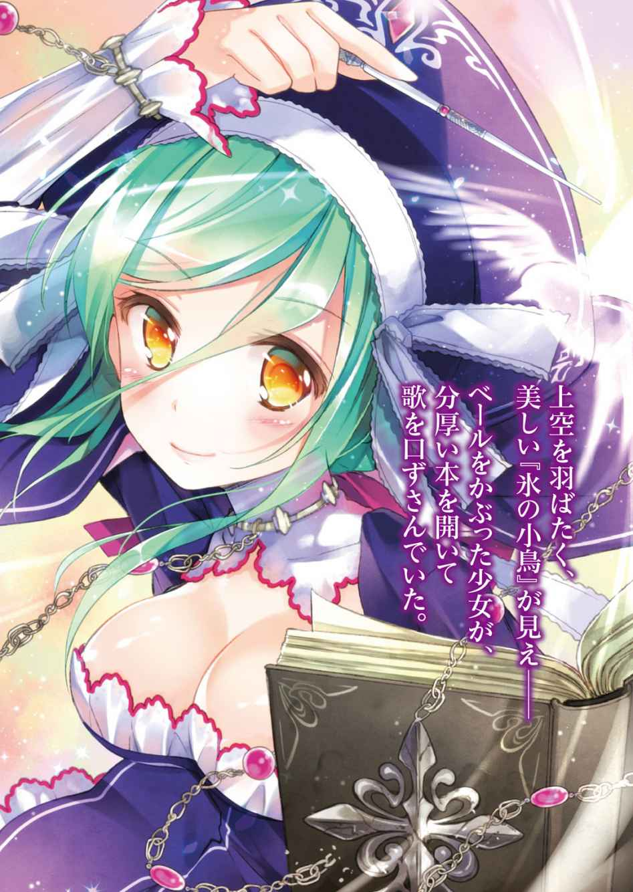
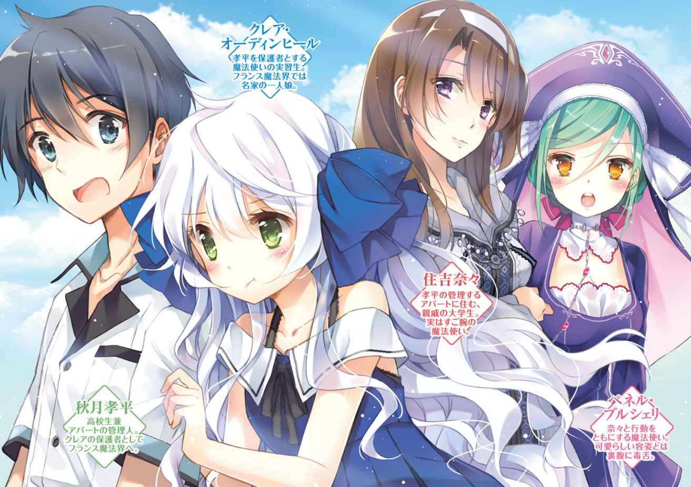
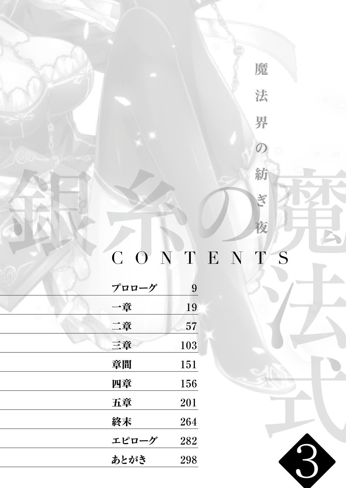
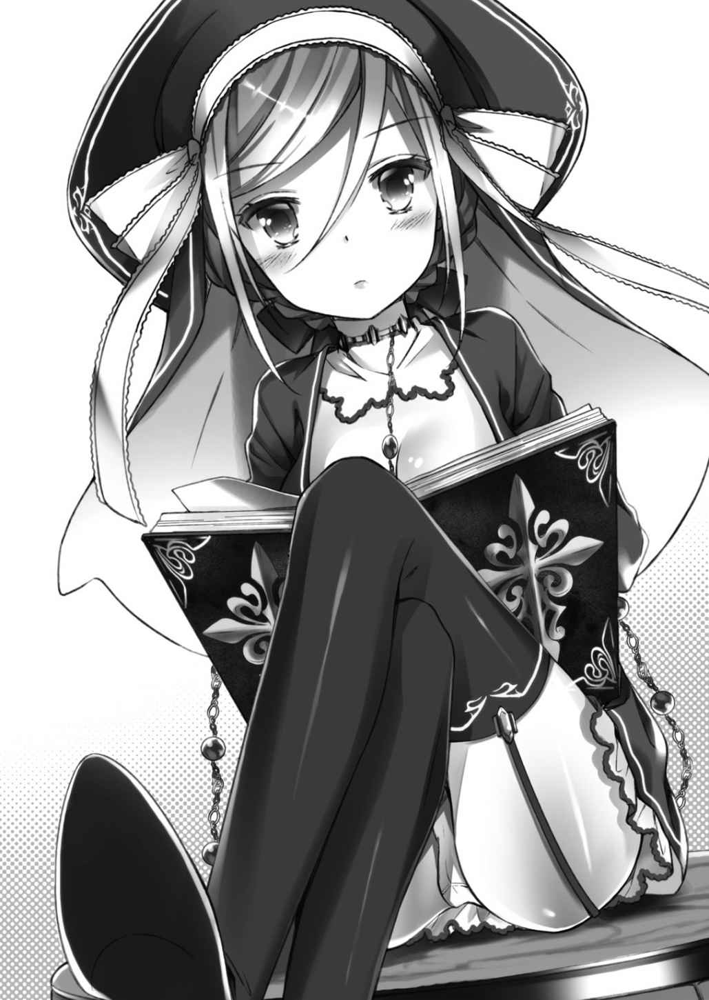
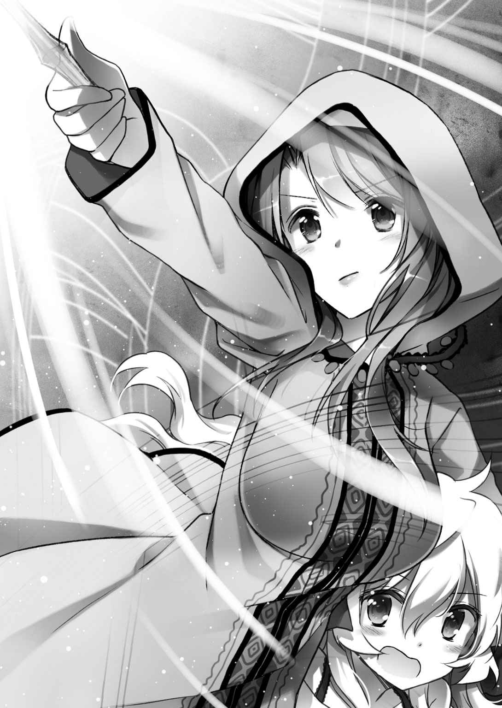
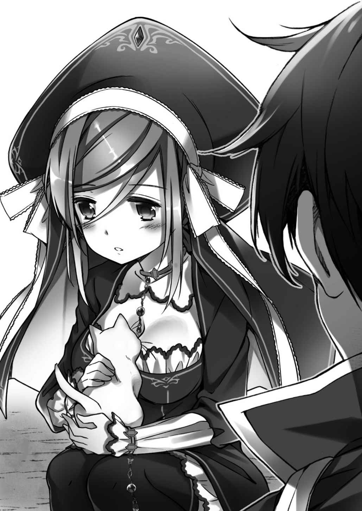
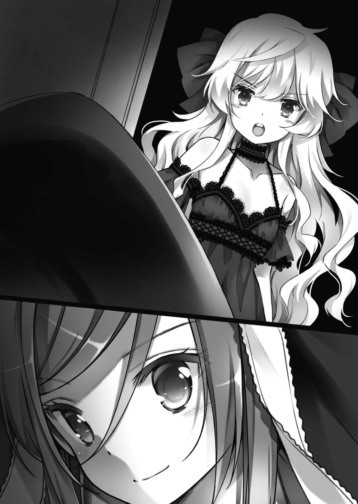
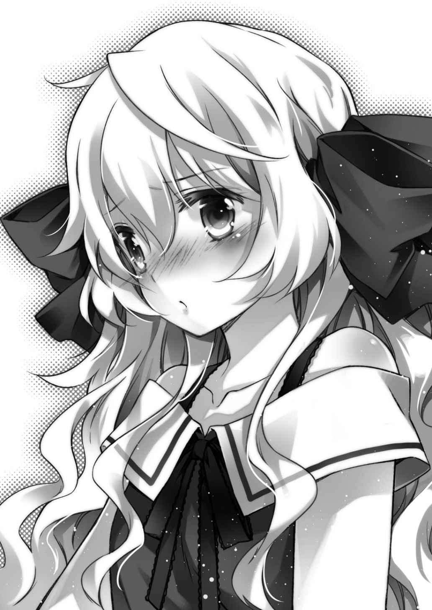
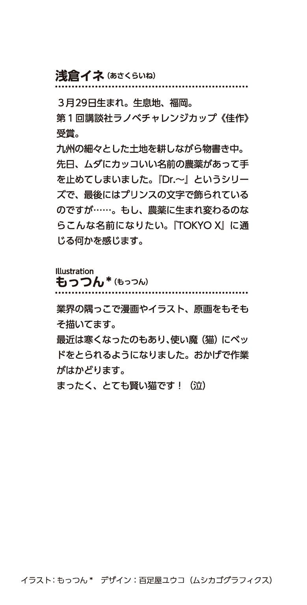

| 銀糸の魔法式３ 魔法界の紡ぎ夜 | |
| 浅倉イネ | |
| (2013) | |


イラスト／もっつん
デザイン／ムシカゴグラフィクス

そこは、スイスとフランスの国境近くだった。
住吉奈々は、その高台にある魔法院へと続く道を歩いていた。
「............」
三日月形に湾曲する広大なレマン湖は、国境線により南北に二分されていた。北にはローザンヌの古都が広がり、フランス側の南にはエヴィアンの市街が広がっている。それぞれ湖畔越しに遠望できるもので、奈々もかつてはこの光景をよく眺めていた。
「............」
眼下に広がる、湖からの風。
穏やかで。清らかで──。目を閉じれば、岸に打ち寄せる水の音さえも聞こえてきそうな青い空気を感じる。それを思いっきり吸い込んで、奈々は息をはいた。
──帰ってきた。
奈々は、懐かしい魔法院の、城郭に近い門をくぐり抜けた。
魔法院は、魔法使いが教えを受けるための施設である。表向きは修道院に似せて建てられていて、人が出入りしても魔法を感じることもなく、院内では戒律に従った慎ましい生活が行われていた。
石壁の内には、果樹園が広がっていた。毎年、麓の村から子供たちがやってきては、この果樹園で成ったみずみずしい果実に歯を立てて自然の恵みを堪能する。
今でも、耳を澄ませば、その賑やかな子供たちの声が聞こえてきそうだった。
（..................あれから、もう何年も経つのね......）
奈々はそっと木の肌に触れて、麗らかな木漏れ日のあふれる果樹園に目を細めた。
何もかもが、懐かしい風景。
前と違うのは、果樹の葉にあまりみずみずしさがなく、土に肥沃さが足りていないこと。そして、景色のどこかしらが、妙に荒廃して、寂れていることくらいだろうか。
今は、ほとんど人がいないのだ。果樹園を世話する人もおらず、少しずつ廃れていっている。
（時代かな......）
奈々は時の流れをひしひしと感じながら、建物に通じる小さな石門を抜けた。
「──せっかく教え子が帰ってきたのにな。本音をいえば、もっと活気のある『我が家』を見せたかった」
開口一番。
病床から身を起こして咳き込むのは、老齢の男だった。
魔法院の長老であるサラディル・グラシアール翁という人物だった。
慈悲深い瞳が先だち、その印象が顔の全体にまで広がっている白髭の老人だった。その見事な髭と、穏やかな顔立ちから、麓の子供たちや預かった教え子から『ヒゲ爺』と慕われている。
彼は、奈々が最後に見た時よりもずっと衰えた表情で、
「お前さんが去ってしまってから、環境が何もかも変わってしまった。もう、この場所は『水魔法』の中心地たるレマンの湖畔魔法院などではない。いうなれば、時代に乗り遅れた一人の爺と、それに使用人と教え子が何名か残っているだけの、『うらぶれた』住居というべきか」
時代に取り残された場所だよ。と。
老人は、使用人が運んできたティーカップを受け取って、大事そうに口をつけた。
温かい湯気とともに香る匂いは、カラメルの紅茶だろうか。せっかくの上品で甘い香りなのに、それを口に含んだ老人の顔には、暗澹とした苦いものが混じっていた。
ためしに、奈々も出されていた金縁のティーカップを口に運んでみる。
「............、」
淹れ立ての紅茶は、やはり甘く、格別な香りがした。
「......わたしの知ってる院長さんは、めったに愚痴を人に漏らすような方ではなかったはずですけど？」
奈々は、静かにカップを置いた。
驚いて顔を上げた老人に、そっと微笑みかける。それだけで、彼女が何を言いたかったのか、老人には伝わったようだ。
「......、っはは。相変わらず、お前さんは手厳しいな......ナナ」
それまで苦渋の雲に覆われていた老人の顔が、少しだけ柔らかく、そして優しく晴れた気がした。
なぐさめの言葉よりも、むしろ率直なその言葉のほうが心地よさそうに。かつての教え子からの忌憚のない言葉というものが、老人の心を数年ほど若返らせた。
「──お前さんの言う通りだ。ナナ。この爺は、なにも愚痴や繰り言を聞かせるためにわざわざお前さんを呼び戻したのではない。実はひとつ、頼みごとがあって呼んだのだ」
「頼みごと、ですか？ 事前に聞いた話では、魔法連盟に関することだと伺ったのですが......」
「そう。爺が頼みたいのは、その魔法連盟に関するトラブルについてだ」
老人の顔が、真剣さを帯びる。
それは、かつては魔法界で右に出る者がないほどの『水』の使い手として名を馳せた、サラディル・グラシアール翁の現役時代の顔だった。
「魔法連盟が、よくない動きをしている。聞いているか？」
「......いえ。特には」
奈々は、正直に首を振った。
魔法界に人脈も広く、各地の情勢に精通する彼と違って──奈々は、一般の人間としての生活に身を置いている。いわば一線を退いているとも言える。
その彼女が、昨今の魔法界の状況を全て把握するなど到底無理な話だった。
今回のようにサラディルに呼ばれなければ、わざわざスイスまで足を運ぼうとも思わなかったはずだ。彼女には、ある少年の傍にいるという任務があるのだから。
その彼女の事情を知った上で、老人はあえて彼女を呼び出したのだった。
「──元々、魔法連盟は魔法界全体の『調和』を目指すために設立された集団だ。そのことは、ナナ。お前さんもよく知っているな？」
「............」
奈々は黙って頷いた。
『魔法連盟』は、かつて同盟会と呼ばれた昔から、魔法界における組織と組織の『橋渡し役』だった。
今の魔法界は、いくつかの魔法学の系統に分裂している。その全てをまとめる機関が魔法使いたちにとって必要であり、現に魔法連盟は、その期待に応えて各国ごとの魔法学の成長を見守りながら中立を保ってきた。
魔法連盟とは、実質的に魔法社会の『総元締』でもあるのだ。
「......だが......」
老人の顔が険しいものに変わった。
「その連盟がここ数年。どうも、様子がおかしい」
「様子、ですか」
「そう。特に魔法連盟の実行機関──『執行委員会』に、よからぬ動きがあるようだ」
そう言って、老人は枕元にある古木のチェストを開け、中におさめられていた資料を取り出した。
奈々はそれを受け取り、表題に目を通す。
「──『魔法統合の案件』？」
「そう。連盟の総合会議に提出された、おかしな案件だよ」
初めてその言葉を聞く奈々に、老人は困った顔で告げた。
「それによると、世界各国に点在する各魔法界の自治権力──それらを全てそぎ落とし、決定権を魔法連盟が握るというものらしい」
「......？ それは、つまり......」
「全ての魔法界が、連盟の支配下に置かれるということだよ」
静かに。あまりにも静かに。
カップに目を落とした老人の言葉に、奈々は一瞬だけ反応が遅れてしまった。
「......まさか。そんなこと......」
「私も最初は、信じられなかったよ。もしもこの案件が通れば、連盟に加盟している者の研究している魔法学だけではない。他の魔法学すら、嵐に遭ったように影響を受けてしまうだろう」
信じられない話だった。
奈々は受け取った資料を膝の上に置いたまま、どう反応していいかも分からずに口を開けてしまった。
支配下。影響──。
日本での生活に身を置いている奈々には、まずピンとこない言葉だ。
子供が公園で陣取り合戦をしていて、そこに『譲渡手続き』の書類でも出されたように横暴な響きだった。ただ口先だけで『メンツ』とか、『支配』がどうとかと言っているぶんには構わない。
しかし、これではまるで......魔法使いたちの国を作ろうとでもしているみたいではないか。
「連盟内部は......。統括は、何と言っておられるのですか......？ こんな一方的な案件、通るはず......」
奈々は、その統括、ブラハム・オーディンヒールという人物の名前から、ある女の子の顔を脳裏に浮かべながら問いかけた。
ここより、ずっと遠くにある日本のアパート。そこで身近に生活している少女の父親が、その人物だからだ。
しかし、老人は残念そうに首を振って、
「話によればな。統括は病気で伏せっており、しばらくは執務に戻れないらしい」
「......っ、まさか......!?」
奈々は、再び驚愕の表情を浮かべる。
この魔法界で、何が起こっている......？ 奈々が知らないうちに、魔法世界の背後で、見えない大きな獣が動き出している感覚を覚えた。
「もちろん、推測の域を出んがな。もしも......彼に何かあったとすれば......」
「............」
あとは、言わなくても、部屋の重苦しい空気が語っていた。
「波は、少しずつ。着実に大きなものとなっている。──すでに、彼らは案件が通ったもの同然に考えて、勝手にもろもろの行動を起こしている。この田舎の魔法院にも『連盟に断りなく第三次構成式以上の魔法を教えるべからず』という通達がきている。おかげで、この魔法院にいた教え子は、日々減っていくばかりだ」
状況は、そこまで進行している。
老人の表情には苦悩と、静かな怒り。同時に、今や力を失った自分に対するふがいなさが、ないまぜになっていた。
奈々は、ここに来るまでに見た『果樹園』の光景を思い出す。
本来であれば、あそこを管理するのは魔法院に預けられた教え子たちの仕事だったはずだ。それが、今や人の手が足りず、木々の根元は雑草に覆われていた。
奈々にとっての、思い出深い果樹園は──時の流れだけでなく、また別のものによって蝕まれようとしていた。
「それで......わたしに頼みたいことというのは......？」
「うむ。つまりな、」
老人は、枕元にあるベルを鳴らした。
彼が使用人を呼ぶ時に使う鈴。しかし、その音で現れたのは紅茶を運んできた使用人ではなく、一人の修道女らしき服装を身につけた少女だった。
深い青色のベールに、修道服を模した『司書服』と呼ばれるものだった。
「............」
沈毅な瞳を動かさず、置物のように佇む少女。
しかし、奈々は見覚えがなかったので、
「彼女は......？」
「ペネル・ブルシェリ。故あって、この魔法院に身を寄せてきた魔法使いだよ。......まあ、もっとも、」
老人は、そこで言葉を切って、
「──魔法連盟の、実行機関──『司書委員会』の司書といったほうがわかりいいだろうが」
「............!!」
奈々は、その言葉に息を吞んだ。
もう一度だけ、目の前で静かに佇む少女を見つめる。
「何度も言うが、最近の魔法連盟は──明らかにおかしい。その異変の先駆けとなっているのが、連盟の統括。ブラハム・オーディンヒールの病だ」
静かに。空気の動かない部屋の中で、老人は告げる。
「彼は今、フランスの魔法界で療養中であるという。彼の病気の理由がなんなのかは分からんが......。ナナ。お前さんは、彼女を伴って──」
白髭の老人は、寝室の窓の外。
遠くに見える空──レマン湖の向こうの、フランス魔法界を見つめるように口元を動かした。
エアコンを本気で導入しようか考えていた。
いや、そりゃ孝平だって、エアコンが高いことくらい知っている。夏の終わりに安くなるとはいえ、それでも値段の高さは家電の王様といっても差し支えのない風格を誇っていた。
でも、暑い。
とにかく、暑い。
今年の夏は、例年にも増して暑かった。
冷凍庫から出した氷はすぐ溶けるし、窓を開けても表の砂浜で蒸された熱風が入ってくるだけだし。なんかもう、いろいろと散々だった。
部屋の扇風機には勲章を与えたいくらい頑張ってもらったのだが、それでもカバーできない問題もあった。
すなわち、
「──だぁー、かー、らぁぁ。いいかげん出てってくれませんかねぇ!? クレアさん!? 俺、もうそろそろ本気で勉強しないとマズいんですよね？ 学校の課題的な意味で!!」
「..................嫌。絶対に離れないもの」
ひしっと、懸命に抱きつく少女。
クセのある銀色の髪に、緑色の大きな瞳。こんなボロアパートに相応しくない、幼くも神秘的な雰囲気のある少女は──フランスの魔法学校から出てきた魔法使いの実習生。クレア・オーディンヒールだ。
魔法使いである。
本物の、魔法使い。
杖や触媒を使って、『魔法』という名の超常現象を引き起こす非日常的な存在は──今は、部屋のボロ扇風機にしがみつきながら、孝平を涙目で睨みつけていた。
「......だいたい、私が離れなくちゃいけない理屈なんてないもの。こんな蒸し暑いアパートの、しかも風のない日なんだから。ブィィンってなるこの機械くらい譲ってくれてもいいじゃない」
「ダメに決まってるだろうが！ そこに陣取られてると俺が勉強できなくて困るんだって！ さっきから暑くてちっとも頭が働かないんだよ！」
孝平が怒っているのには、理由がある。
今まで、この魔法使いの少女が祖母を頼って現れてから、孝平の日常にひとときも安らかな日は訪れなかった。
もう、悲しくなるほどに魔法が関わる災難ばかりだ。危ない魔法使いは襲いかかってくるし、生死の境をくぐり抜けた時も何度かあった。
そのたびに孝平は、祖母の知り合いであるこの少女を守るために頑張ってきたのだが......学校の課題という、学生にとってある意味もっとも大切なものを進められていなかった。
夏休みは、もう後半にさしかかっている。
終わらせないと、終わらないのだ。学校の課題は。
「だいたい、そんなに涼しさが欲しかったら自分の『氷魔法』でなんとかしたらいいだろ!? 俺みたいな人間と違って、お前は魔法使い様なんだから！」
「嫌よ。魔法なんて使ったら私が暑くなるもの」
「はぁ!? なんで？ 氷の魔法を使うだけだろうが!?」
「魔法の発現には『魔力』が必要なのよ。魔力は体の中の『血』に混じってるものだから、魔法なんて使ったら体が熱くなって大変なことになるじゃない。こんな狭くて暑い部屋で使ったら、それこそ熱中症よ」
「だったら、どっかよそでやれよ。とにかく俺の扇風機を返せ！ そして部屋から出ていけ!!」
「嫌!! 私、この機械から離れない！」
母親から引きはなされまいとする子供のごとく。
銀髪の少女は、しっかりとハネを回す扇風機にすがりついて。孝平を睨みつけながら駄々をこねた。
「だいたい、何よ！ 孝平は勉強、勉強って魔導書の呪文みたいに繰り返して！ 私へのサービスの気持ちはないの？ そんなに私よりも学校のほうが大事なの!?」
「大事だよ！ むしろ学生にとっての本分は、お前の世話じゃなくて学校の勉強だろうが！」
孝平が叫ぶと、クレアは「うー」と歯がゆそうにする。
本当に、こういう時だけ同情を引くような顔をする。これでは、悪いのはクレアではなく、構ってやらない孝平のほうみたいではないか。
でも、譲るわけにはいかなかった。
とにかく、今はなんとかして、この暇な魔法使いを部屋から追い出さなければならないのだ。
トラブルのない平和な日にこそ、課題を。
そんなシンプルな結論に行き着いている孝平は、目の前の魔法使いにも容赦するつもりはなかった。
と、
「............孝平は。そんなに涼しさが欲しいの？」
「ん？」
藪から棒に、クレアはそんなことを言い出した。
「毎日、毎日。暑い暑い言ってるけど......。どこかに出かけたりはしないの？ 私たちの国では、夏にバカンスって言って何週間か遠くに涼みに出かけたりするんだけど」
「いや。そんな習慣、こっちにはないけど」
というか。社会人は仕事があってろくに休みもとれないし、学生だっていつまでも休みがあるような身分じゃない。そんな悠長な旅行なんてしてられない。
「孝平は、どうなの？ どこか遠くに出かけて、涼しく勉強したりしたくない？」
「な、なんだよ。いきなり」
クレアが、のぞき込むように見つめてきた。
その目は、何やら真剣というか。さっきまで駄々をこねていた雰囲気が抜けて、もともとの整った彼女の顔立ちが現れる。
「どうなの？」
と。
思わずドキリとしてしまうくらい、顔を近づけられて。孝平は目をそらしながら、
「いや......。そりゃ、行きたいのはやまやまだよ。俺も高校生だし。夏にバーベキューとかキャンプしたいとか思わないでもないけど......でも、今年の夏はお前がアパートに来たりしてるだろ？ だから、いろいろと忙しいというか......」
「遠くでバカンスを過ごしたい気持ちはあるのね？」
「ま、まあ。そりゃ、夏だし」
ジッと見つめられていた。
なんだろう。クレアがどんな答えを求めてるのか、孝平にはよく分からない。
ここ最近、クレアがこんなに食いついてくる話題もなかった。ずっと暑さにダラダラしていた魔法使いが、ここまで真剣になるのも珍しいことだ。
「......ふーん」
と。
クレアは、扇風機の風に銀髪を揺らしながら。何か考えるように宙に視線をさまよわせていた。
停止すること、数秒。
クレアは、何かを決心したように立ち上がると、
「孝平の気持ちは、よく分かったわ。だったら、私が保護者のあなたのために一肌脱いであげる」
「......は、はぁ？ なに言ってんだ？ お前」
「どうせあなたには、私のほかには遠出に誘ってくれるような友達もいないんでしょ？ 日頃から私のために働いてる孝平に、とっておきのご褒美をあげる」
「............？？」
『ご褒美』の部分に妙なアクセントをつけて、クレアは部屋を飛び出していってしまった。
何か、サプライズを思いついた子供の動きというか。謎のやる気に満ちた少女が消えて、それからドアが閉じる。
「............なんだありゃ？」
一人残された部屋で、孝平は首を傾げた。
何だろう。よく分からないが、不穏な気配がする。
あの少女が前向きに行動して、今までロクなことがなかったというか。知らず知らずのうちにトンデモな計画に巻き込まれている気がして、孝平はモヤモヤと彼女が消えたドアを見つめていた。
「..................ま、いいか」
どっちにしろ出ていってくれたんだし、ラッキーか。
その程度に考えて、孝平は止まっていた課題を再開するべく筆記具を動かした。
問題は、数学。久しぶりに進める因数分解だ。
その課題を解き進めるうちに、孝平はさっきまでのクレアとのやり取りも少しずつ忘れていった。
──ポーン......と。
くぐもったアナウンスサインが、機内に響いた。
どうやら、これから『飛行機』が空の旅へと出発するらしい。
唸りを上げていく、高いエンジン音の咆吼。
振動する客席。
フランス。シャルル・ド・ゴール国際空港行きの直行便は──順調に滑走路を飛び立ってフライトを開始した。
「............なんで、こんなことになってんだ......？」
そんな飛行機の客席で、呆然とする少年が一人。
つい昨日まで、アパートで学校の課題を進めていた秋月孝平がそこに座っていた。
どうしてこんなことになったのか、分からない。
ただ、今朝まで普通に生活をしていて......。
それから──クレアという、孝平がアパートで預かっている魔法使いがやってきて、一通の封筒を差し出した。それが始まりだった。
まるで、博物館に展示されているような古めかしい封筒。
その封筒におさめられていたのは──二枚の、フランス行きの飛行機のチケットだった。
──なぜ？ そう思う。
──どうして？ 全く原因が分からない。
ただ、確実に分かることは......今、こうして孝平はクレアに引っ張られるままに飛行機に乗せられて、空の旅に出発してしまったことだけだった。
「............」
「どうしたの？ 孝平。さっきからボーッとして」
放心状態にあった孝平を、隣の席からクレアがのぞき込んできた。
「お腹でも痛いの？」
「......いや」
「それなら、風邪でも引いたの？」
「..................そうじゃない」
「だったら、」
と。ここまで無邪気に聞いてくるクレアに、孝平はしびれを切らして、
「............あのな。クレア。俺はどうして、自分が日本を離れていくフランスへの直行便に乗せられてるのか分からなくて呆然としてるんだ。理由があるんだったら、とりあえず教えてもらえるか」
「？ 理由って、フランスに行く？」
「ああ、そう。それ。どうして行き先がフランスなのかも知りたい」
孝平はアパートを出てここに来るまで、あまりにもドタバタして質問もできなかった。
とにかく、全てがあまりにも唐突だった。
旅行用の服装に着替え手荷物を抱えたクレアが、魔法で孝平の部屋のドアを開けたのが、今から二時間前。
準備も何もない。安っぽい旅行カバンに着替えをぶち込んで孝平はアパートを出てきた。
「だって。孝平、バカンスしたかったんでしょ？」
クレアは、そんな孝平をのぞき込みながら言った。
「あんな蒸し暑い国だと、勉強もできないみたいだったから......。いつも魔法のことを手伝ってもらってるし、そのお礼に遠くに案内するのもいいかな......って」
「と、遠くって。フランスまで行くのか......？」
「ええ。私の実家があるから」
どうやら、クレアは最初からそのつもりだったらしい。
自分の実家を使って、孝平にバカンスの場を提供する。もちろん、滞在する日数も決めてないのだろう。なにせ自分の住んでいた家であれば、その辺はいくらでも自由がきく。
（......というか、昨日の会話。本気にしてたのかよ？）
孝平は、そのことに驚いていた。
前の日のバカンスだとか出かけるとかの会話が、まさか、こんなことになるなんて──。
クレアは自分だけ準備していたらしく、旅行着はばっちりだった。
子供用に見えなくもない、襟付きのブラウスとプリーツのスカート。誰が見てもお嬢さま認定されてしまうこと請け合いの服装だった。
バッグも、夏仕様の涼しげなカゴバッグ。普通の女の子らしい持ち物から、ちょこんと魔導書が顔をのぞかせているのがとても残念だった。
「──それに。ちょうど良かったのよ」
「？ なにが？」
座席に座り直したクレアに、孝平は首を傾げた。
「ちょうど、私に向こうからの『呼び出し状』が届いていたの。父様にもずいぶんと会ってないし、病気で屋敷にこもってるっていうから......お見舞いもしておこうと思って」
「......病気って。何かあったのかよ？」
「いいえ。軽い風邪とか、疲労のはずよ」
それほど心配もしていない顔で、クレアは返事する。
「それにね。それなりの役職についてると、ちょっとした病気でも周りが騒ぐのよ」
「騒ぐって......。そういや、お前の父親って......」
孝平は、ここで思い出してしまった。
クレアの父親。日本のボロいアパートに実習生として来た彼女の父親の身分は、確か魔法連盟の......。
「ええ。魔法連盟の統括よ」
それが何？ という表情で、クレアは答えた。
いやいや、いや。ちょっと待て、いろいろとおかしいぞ。と、孝平は心の中で慌てる。
魔法連盟とは、世界にある『魔法』の系統や派閥を束ねる中央機関みたいな存在らしい。
つまり、偉いのだ。
ものすっごく、偉い。
魔法使いたちの、秩序を取り締まる本部。そのリーダー的なポジションにあるのがクレアの父親だった。
孝平は、その父親がどういう人物かはよく知らない。
ただ、あまり一人娘のクレアと仲が良くなさそうな話を聞いている限り......どちらかというと、硬派というか。ものすごく厳しそうな父親像を思い浮かべてしまう。
魔法使いだって分かっているのに、マフィアの『ゴッドファーザー』的なコワモテ紳士が頭に浮かぶ。あのクラシカルな『愛のテーマ』が、頭の中で再生されてしまう。
しかし、そんなことよりも何よりも。
孝平が見落としていた事実は、そんな父親にクレアが『会いに行く』と言っていることだった。
もう一度言うが、クレアの父親は魔法使いなのだ。
ということは、つまり......。
「............『魔法使いの住む場所』に、行く......って言ってるのか？ お前」
「ええ。あそこはパリの中でも涼しい場所だし、ちょうどいいかと思って」
表情を引きつらせる孝平に、クレアは何でもない表情で答えた。
バカバカしい話だが、フランスに行くと分かってからこの時点までの孝平は、街の中を観光か何かで過ごして、ホテルにのんびり泊まったりするのかと思っていた。それこそ、一泊二日の簡単なツアーみたいに。
「本当はね、こんな『帰ってこい』っていう催促はしょっちゅうきてたから、無視でもよかったんだけど」
クレアは、ごそごそとバッグを漁って封筒を取り出した。
「孝平も一緒に来てくれるんだったら、ちょうどいいかと思って」
はい、と孝平に手紙を渡す。
当然ながら、フランス語で書いてあるらしく達筆な横文字ばっかりで読めない。
「......えーと......。つまりだ。俺が、今から向かおうとしているのは......」
「ええ。私の、フランスにある実家よ。フランス魔法界の一等地にあるオーディンヒール家の邸宅で、父様が住んでいるわ。それに、沢山の使用人が働いているの」
「............」
孝平は、窓の外を見た。
青い空と、流れていく雲の大海原。
着実に日本を離れていく飛行機は、孝平を乗せたままみるみる雲の間を渡って──
「──い、嫌だアアアア！ 行きたくないいい！ 絶対に絶対に、日本から離れて魔法使いたちの世界になんて行きたくないいいい!!」
「ちょ、ちょっと孝平!? 急にどうしたのよ!?」
両手で頭を抱えて叫びだした孝平に、クレアは目を丸くして叫ぶ。
フライト中の機内で錯乱した乗客に、すぐさま客室乗務員のお姉さんが何事かという顔で駆けつけてくる。
騒ぎは、しばらく収まらなかった。
現地時間の、午後二時。
客室乗務員にものすごく心配された孝平たちは、荷物検査を終わらせて、空港から離れたパリの街中をトボトボと歩いていた。
「............最悪よ。もう、最悪。私、外であんなに恥ずかしい思いをしたの生まれて初めてだわ」
古い石畳の美しい街並みを、クレアは険しい顔で歩いていた。
二人は橋を渡る。
その橋も、日本にあるようなものではなく、芸術的な美しいアーチを描いた白い石橋だった。頭上の街灯も、古めかしくて歴史の重みを感じさせる。
「............結局、来ちまったのか......」
「来ちまったのか、じゃないわよ！ 孝平。ちゃんと空港で謝った？ すっごい迷惑かけてたわよ。あなた」
「うぐ。なんでお前が、常識人のポジションに収まってるんだよ......」
なんだか理不尽なものを感じつつ、孝平はクレアに引っ張られて街の大通りを歩く。
引っ張られる、といっても『手をつないで』ではない。
孝平とクレアは、そんな甘くてベタベタとしたカップルの関係ではない。もっとドライな、『保護者』と『実習生』としての関係。
だから、街を歩く時はクレアが孝平のシャツを引っ張って、すたすたと先導していく。
「ところで、魔法使いの住んでる場所って街にあるのか？」
「ええ。ちょっと入り口が特殊だけど、街の中央に──って、孝平。危ないわ」
おっと。と。
複雑な通行人の流れから外れた孝平は、さっそく背の高い通行人にぶつかりそうになってしまう。
慌てて頭を下げる孝平。しかし、向こうは不思議なものを見るように首を傾げて、それから行ってしまった。
「............そういや、ここって『お辞儀』が通用しない国なんだよな」
「そうね。基本的に、もっと堂々としていていいかも」
今さらながら、遠いところに来たんだな......と孝平はしみじみとする。
クレアは、孝平を引っ張りながら、
「私たちが向かうのは、この街の中に隠されてる『フランス魔法界』の入り口よ。場所が特殊だから、はぐれないようにしてね」
「街の中央......って。どういう仕組みになってんだよ？ また、魔法を使った結界とかが使ってあるのか？」
「ん。そうね。外の干渉を受けないように結界も使ってあるけど」
「？ けど？」
「『外の世界』とフランス魔法界の間には、壁がぐるりと一周してるの。外の『技術』が流れてこないように隔絶されているわ」
それは......いったい、どういうことなのだろう？
いまいち想像がつかなかった孝平に、クレアは石畳の市街を先導しながら、
「......とにかく。入ってみれば分かるわよ。孝平は余計なこと考えなくていいから、父様に挨拶するときの言葉だけを考えてればいいの」
「うえっ!? ちょ、ちょっと待てよ？ 俺も親父さんに会うのか!?」
「当たり前じゃない。あなた、私の保護者なんでしょ？」
思わず妙な声を上げた孝平に、クレアはジロリと目を向けて、
「滞在先も私の『屋敷』なんだし、その屋敷の当主に挨拶するくらい当然じゃない」
「で、でも......。俺、何を話していいか分からないんだけど？」
「大丈夫よ。少しの間、世間話をするくらいだから。父様だって忙しいもの。短い会話の中で、できるだけ私の『実習生』としての生活ぶりを褒めてくれればいいの」
「ちょ、ちょっと!? なんだよ、その出来レースな家庭訪問みたいな要求!?」
まるで、自分を褒めさせるためだけに連れてきたような口ぶりだった。
いや、気のせいではないのか......？
今回のフランスへの遠出は、クレアがいやに積極的だったように感じる。あまり疑うのもよくないが、もしかするとクレアは、孝平に『実習生』としての自分を褒めさせるために連れてきたのではないだろうか。
「......私はね。家を出る時に、父様に散々反対されていたの。口げんかにもなったわ。オーディンヒール家が認めた家じゃないと、私が魔法使いとして成長しないとも言ってたし」
まるで、すぐそこに父親がいるように。
クレアは恨みがましい声を上げながら、川辺の露天古書店が軒を連ねる通りを抜けていく。
「だから、これは孝平を魔法使いの住む場所に案内する『旅行』でもあるし、私が父様を見返すための『里帰り』でもあるのよ。孝平がきちんと父様に挨拶してくれれば、私が実習生としてまともな生活をしてる証明にもなるもの」
「な、なる......のかな？ 証明に」
「ええ。なるはずよ。必ず」
クレアは、くるりと振り返った。
曖昧な態度の孝平に念を押すように、人差し指を突き出してきて、
「孝平も。屋敷に泊まるついででいいから。協力しなさい」
「......う。こ、断りにくい雰囲気」
「当たり前じゃない。あなたは、私の保護者なの。私を預かった責任をとって、きちんと男らしく挨拶しなさい」
「結婚の挨拶かよ......」
孝平は呆れるが、クレアは聞いてない顔で雑踏に足を進めた。
入ったのは、街の路地だった。
べつに、小さくもない普通の路地。ただ当たり前のように現地の人たちが行き交い、果物の露店や、チーズを売るワゴンなどが並ぶ生活道路。
そこを進んでいくと、やがて賑わいも薄くなり、暗く静かな一本道に出る。
猫一匹通らない、音の絶えた道の先。
人の気配がないな、と孝平が思っていると──案の定、その先は小屋がポツンとあるだけの寂しげな行き止まりだった。
「......おい、もしかして迷ったのか？」
「まさか。ここが私たちの目的地よ」
と、クレアは信じられないことを言って、バッグの中から魔法の杖を取りだした。
目の前にあるのは、壁に囲まれた袋小路。
その先には、壁に挟まって動けなくなったような小屋だけだった。小屋にも扉らしい扉もなく、これ以上進めるとは思えない。
と、クレアは行き止まりの小屋に向かって、杖先をピタリとつきつけた。
「これは、民間人が入ってこないように仮の姿をとった『入り口』よ。魔法使いの拠点にはよくある『城郭魔法』の一つだから、こうして魔力を通わせれば......」
言いつつ、そっ──と杖先に力を込める。
どうやら、魔力を通わせているらしい。
自然のものではない、不思議で温かい風がクレアから流れだして──それが浸透するように、小屋の壁に吸い込まれていく。
「──管理者の名において命ずる（Ruler ruler of order）。境界の扉よ（The Gate）──」
クレアは、目を閉じて意識を集中させる。
魔法の、詠唱。
フランスの魔法言語ではなく、幅広く使われる英国『秘文字』を使った通行の儀礼。小さな魔法使いは、それを口にしながら、
「──その制約において（You're subject to）──。我の前に道を開けよ（Open the Gate）──」
緑色の瞳を、開いた。
それから──ガチャリと。
まるで、見えない歯車が合わさったみたいに、壁の内側から仕掛けが動く音が聞こえてきた。
直後。辺りに小さな地響きが起こって、小屋が何かに押し上げられるようにせり上がりだした。
「な......!?」
孝平は、その光景を呆然と見上げる。
目の前の『建物』が、どんどん伸びていって──ついに、城か、砦にでもあるような石の見張り台になってしまった。
中世の昔にあるような、苔に覆われた外観の塔だ。
パラパラと土を落としながら現れた建物は──地面に隠れていた部分に、ぽっかりとアーチ状の門を開いていた。
孝平が『小屋』だと思っていたのは、どうやら塔の屋根の部分だけだったらしい。
「......な、なんだこれ......!? 塔？ いや、城の門......？」
「ひとくくりに、魔法。ここから先は、外の世界とは違う『魔法』が存在する世界──魔法界なのよ」
だから、はぐれないようにしなさい。と。
クレアは、魔法使いを歓迎するように口を開けた『石門』を通過して、その奥に広がる古めかしい生活路に入った。
「あ......。お。おい。待てよ！」
孝平も遅れないように、小さな魔法使いに続いて門をくぐると──背後で、また地響きとともに『塔』が沈んでいった。
どうやら、これで後には戻れない世界、魔法使いの住む領域に入ってしまったらしい。
「......すげぇ。なんだ、ここ......」
孝平の目の前にあったのは、大聖堂がいくつも連なっているかのような不思議な場所だった。
ゴシック様式の建築だろうか。
中央に大きな通りが広がっていて、その左右にレンガの教会みたいな建物が並んでいた。
その通りに沿って、街灯のポールが続いている。
中世風の街並みが向き合わせに連なり、先ほどの街とは違う姿の通行人が行きかっている。
まず、ローブを羽織って、忙しそうに歩く書類を抱えた人。
頭に羽根のついた帽子をかぶって、豪奢な貴族風の服装の人。
これが、みんな『魔法使い』なのだろうか......？
孝平たちは、現代とは思えない街中に来ていた。
「......すごいな。まるで絵の中にいるみたいだ......」
「当然よ。ここはフランス魔法界が外の世界から切り離された十六世紀から、ずっと変わらない街の外観を保ってるんだから」
中央の通りを歩きながら、クレアはローブ姿の通行人に交じって得意そうに胸をはった。
やっぱり、連れてきたからには、故郷を褒めてもらうと嬉しいのだろうか。
顔は澄ましていたが──その口元はウズウズとほころびていて、今にも得意げな笑みに変わりそうだった。嫌味にならないよう、ギリギリセーブしている感じだ。
「すごいのは、それだけじゃないのよ？ 孝平の世界とはぜんぜん違う仕組みで動いてる街なんだから」
「えーと。例えば？」
「そうね......。あ。孝平！ あれを見てみなさい」
考えていたクレアは、何かを発見したように目を輝かせた。
ガラガラガラ......と土埃を上げながら、大通りを過ぎていく木輪の馬車。中世から飛び出してきたような、金装飾の軽装馬車が姿を現した。
「どう？ あれが家格の高い魔法使いが乗ってる馬車なの。すごいでしょう？」
「ま、まあ。すごいっていうか......あんなの初めて見たけどさ......」
「でしょう？ でしょう？ あれが地位の高い魔法使いの証なのよ。私の家にもあるから、あとで孝平も乗せてあげる」
「え？ いや。べつにいいけど......車は？」
故郷の光景にすっかり舞い上がったクレアに、孝平は困惑する。
孝平が見る限り、この街に入ってから車らしい車を見ていない気がする。それこそ、ローブを身につけた通行人ばかりだった。
孝平の問いかけに、クレアは小首を傾げながら、
「車？ そんなもの、あるわけないじゃない」
「え？ ないの？」
「魔法使いの誰でもが『飛行機』とか『電車』を抵抗なく使うわけじゃないのよ。基本的に、魔法使いは『仕組みの分からない機械』を頼りたがらないから......。魔法使いの住む場所での乗り物は、もっぱら御者が操る馬車ばかりよ。それか歩きね」
クレアの話によると、魔法使いは『機械の車』を信用していないらしい。
故障とか、事故とか。そんなリスク云々の話以前に、そもそも魔法で動かない道具を乗り物として認めていないらしい。それどころか、中には『気持ち悪い』と言って毛嫌いする魔法使いまでいるという。
「それは......。なんていうか。極端だな」
孝平は、思わず口に出してしまう。
魔法なんて未知の力を操っているわりに、ずいぶんと頭が固いというか。偏狭というか。便利な道具くらい、どんどん使っていけばいいのに。
そう思う孝平に、クレアは何度も頷いて、
「──そうね。その通りよ。だから、古くからの『魔法』に凝り固まった魔法使いと、そうじゃない魔法使いとの間には溝があるの」
だから、魔法界では車を使えないのだという。
昔からの秩序を重んじるというか。近代化を嫌うというか。
『魔法』という仕組みで動いている存在でないと信用しないし、自分たちの暮らしの中に入れたがらないらしい。
「じゃあ、お前はどうなんだ？」
孝平は、ふと気になってクレアに問いかける。
クレアはあんまり愉快じゃない話題らしく口を尖らせていたが、孝平の質問にはきちんと指を立てて、
「──それは、もちろん。柔軟な魔法使いよ。今どきの子は、みんなそうだわ。魔法使いだからって、電車も飛行機も使っちゃいけないって理由もないもの」
「まあ、そうだよな。そういえば、お前、日本に来た時も飛行機を使ったみたいなこと言ってたもんな」
「？ 覚えてたの？」
ちょっとだけ見直した顔で、クレアは首を傾げる。
孝平は頷きながら、
「そりゃあな。あんな強引に押しかけられたあとだったし」
そう言うと、クレアは一気に失望したような。じっとりとした陰のある目つきになる。
「............孝平って、いっつも一言余計なのよね」
「へ？ 何が？」
べつに。と。
機嫌を悪くしたクレアが、そっぽを向いていると、
「──お嬢さま（la jeune fille）？」
と。
横合いから、そんな声が聞こえてきた。
孝平たちが振り向くと、買い物の途中らしきカゴを下げたメイド服の女性が、目を見開いて立ち尽くしていた。
「......ああ、お嬢さま（Ah la princesse）!!」
と。
女性は、クレアの顔を確認するなり嬉しそうに走り寄ってきた。
英語？ いや、もしかしてフランス語だろうか............？？
孝平には聞き取れない、丸い含みを持たせた発音の言語。それを発しながら歩み寄ってきた女性は、ひしっとクレアの手を握って、
『──もう。どこにおいでだったのですか!? お嬢さま。御当主様も、心配なさっていらっしゃいましたのに!!』
「──え、えっと（Eh, eh ben）」
おろおろと。クレアも、孝平には分からない言葉で慌てる。
緑の瞳を見開いて。クレアは街角で遭遇した女性と、隣の孝平を交互に見つめる。どうしていいか分からない表情だった。
『お屋敷にお戻りください！ 大変なのですよ！ 御当主様が......統括様のご病気が......!!』
「あ。ちょ、ちょっと!?」
クレアが、手を引っ張られる。
女性は一大事があったように慌てていた。戸惑うクレアのことなど構わずに、とにかく一刻を争うように通りを引きずっていく。
「ちょ、ちょっと待ちなさいってば！ 父様が、父様がどうしたのよ......!?」
ジタバタと。手をばたつかせるクレアは、もはや日本語だった。
そしてそのまま女性に引っ張られて、あっという間に人の波に消えてしまった。
その間、わずか五秒足らず。
孝平はポカンと口を開けて、しばらく立ち尽くしていたが......。やがて通りを見回して、ようやく置いていかれたことに気づいた。
「............え？」
見知らぬ魔法の街。
人の足の速さも違う、未知の通り。
ローブ姿の人間に交じって、孝平は街路を歩いていた。
「............これって、完全に迷子じゃないか......？」
露天の原始的な市場。木造の古い民家。
見慣れない景色の通りで、孝平は一時間ばかりさまよっていた。
びっくりするくらい、何も目印がない。
普通の街だったら、駅があったり、ショッピングセンターとかがあったりして待ち合わせもできるし、自分がどこにいるのかも確認できる。
でも、この街は本当に何もないというか......。歩けば歩くほど、民家や地味な建築物が増えていって、同じ場所をぐるぐる回っているような錯覚を覚えた。
とはいえ、進んでいないわけではないらしく。
しばらく歩いていると、今まではなかった広場が見えた。
「......む。ベンチくらいあるかな？」
これといって広くない、小規模な公園といった程度のスペースだった。
クレアを見つけるのを諦めた孝平が広場に入ると、
『......──!! ──！』
と。
広場の中央のほうで、子供たちが騒ぐ声と拍手が聞こえてきた。
「......？」
イベントでもやってるのだろうかと。
魔法界にそんな娯楽があるのか分からなかったが、とにかく孝平が顔を巡らせると、そこではローブ姿の子供たちが集まっていた。
なんだろう？ 大道芸でもやっているのだろうか？
そっと近づいた孝平の目に、
「............！」
子供たちの上空を羽ばたく、美しい『氷の小鳥』の姿が飛びこんできた。
氷だ。
間違いなく、氷──。
魔法で動いているのだろうか。羽根の一片一片が、繊細な氷の彫刻でできた小鳥は──ガラスのような透きとおった羽根から、とけだした水滴をまき散らしていた。
が、孝平が目を奪われたのは、それだけではなかった。
その、子供たちの中心に立つ少女。
修道服のような衣服を身につけた、清らかな目をした女の子──。クレアと同じくらいの歳だろうか。
特徴的なベールをかぶった少女が、分厚い本を開いて歌を口ずさんでいた。
（............うわ......）
孝平は、思わず足を止めてしまった。
神秘的というか。神聖というか。
こんな古めかしい西洋の街だから感じることかもしれなかったが......。孝平は生まれてこのかた、こんな清らかな少女を見たことがなかった。
クレアも十分、可愛い部類に入る少女だが──こちらは、また違った美しさがあるというか。
（......あと、あの本......）
孝平は、気づいた。
彼女の歌声に合わせるように、手にした分厚い本の表面には、魔法による円模様が回転しながら浮かんでいる。
パタパタと羽ばたく氷の鳥は──どうやら、その魔法円によって動かされているらしかった。
（............つまり、あれも『魔導書』か......？）
と。孝平がそこまで思った時。ピタリと少女の歌声がやんだ。
まるで、演奏を中断したコンサート会場のように、広場がしんと静まる。
奇跡を紡いでいた歌声がやんで──広場の子供たちは、彼女が見つめるある一点を振り返った。
つまり、広場に入ってきた不意の侵入者を......。
「え？ え？ 俺？」
孝平は、驚いて目を丸くする。
まさか、自分が入ってきたことでこんなリアクションを取られるとは思わなかった。
歌を中断させてしまって後ろめたいような、そして見られているせいで立ち去れないような......そんな奇妙な空気に、硬直していると。
「──、────？」
ジッと。
あまり感情の見えない目で、本を手にする少女が孝平を見つめてボソボソと話しかけてきた。
（......な、なんだ......？）
孝平は、動揺して後ずさる。
無気力に口を動かす少女の声は、先ほどの歌と違って聞き取りにくかった。というか、そもそも聞こえても、孝平には言葉が分からなかったが......。
「............」
しばらく口を動かしていた少女は、やがて諦めたように小さく嘆息する。
それから、本のページに目を落として、
「............応えよ、私の魔導書（appeler, mon grimoire）」
瞬間、ふわりと彼女の本が動く。
まるで、優しい風に流されるように──。パラパラとひとしきりめくれたページは、ある項で止まった。
同時に、ページの表面に、煌めくような眩しい記号が浮かび上がる。
「............っ！ 熱っ......!?」
ページの記号が輝くと、孝平の腕に鈍い熱さが広がる。
それは、痛みと表現したほうがいい熱さだった。疼くような、熱した金属を押し当てられたような痛みのあとに──腕に紋章のような模様が浮かび上がってきた。
と、
「────どうですか。これで、私の言うことが分かりますか？」
信じられないことに。
本を手にする少女は、孝平に日本語で語りかけてきた。
流暢に。さも、当然のような表情で。
そんな少女に、孝平は呆気にとられて硬直していると、
「......聞こえない、と。そうですか。そうですか。──この毒虫。ゴミ虫。フナ虫。ゾウリ虫......」
「ちょ、ちょっと。ちょっと待って!!」
何が何だか分からずに、とりあえず手をつきだして孝平は少女の言葉を遮る。
もしかして、ずっと悪口を言っていたのだろうか──？ 今はそれどころじゃないのは分かっているが、孝平はちょっとだけ気になった。
孝平に遮られた少女は、どこか不満そうな顔で、
「............なんだ。やっぱり、聞こえてるではないですか」
「聞こえてるではないですか、じゃないよ！ 何だよ!? 何が起きたんだ......!?」
「言語を中和する、ちょっと珍しい魔法を使ってみました。おめでとうございます、こんな高度な魔法の組み合わせ、私にしかできないです」
「ま、魔法......？」
「今のあなたは、私たちの国の言葉をさとり、知り、意味を理解することができます。あなたの言葉も、私たちの国の言葉に置き換えられて発せられています」
閉じた本を手に。変わった格好の少女は、ジッと孝平を見つめてくる。
その無機質な目の光に、
「な、なんで......そんなもの......」
「私の質問に答えてくれないからですよ」
驚きのあまり絶句する孝平に、少女は横柄な口調で答える。
広場で福音を説くシスター............には、最初から見えなかったが。それにしても、さっきまでの清楚そうな見た目とはかけ離れた口調だった。
彼女は、本を持ったまま孝平の肩に手を置いて、
「詳しい説明は、とりあえず抜きにしておきますが。もう一度、質問してもよろしいですか？」
「............？ 何だよ」
「あなたは『執行委員会』でしょうか？ それとも、『同盟者』でしょうか？」
......は？ と。
意味が分からず、孝平が口を開けていると。
「......！ ふむ。どうやら、『逃亡者』のほうであると」
少女は、何かを発見したように呟いたあとに、
──ゴッと。その背中に、一体の『氷の騎士』を出現させた。
「な......!?」
孝平が驚く間もない、一瞬の魔法の構築。
発動条件となっているのは、もちろん彼女の『詠唱』だったが。一連の動きには、先ほど鳥を遊ばせていた悠長さがなかった。
ほぼ一瞬で、短い呪文を紡いだ彼女の背後に現れた騎士は──。
すらりと。その腰に佩いた氷の剣を引き抜く。
そして、その剣先を孝平に向けて、一気に振りかぶってきたのだ。
「............っ！」
避ける暇など、ない。
いきなり無防備状態で斬りつけられて。孝平は、思いっきり目を閉じることしかできなかった。
氷の剣が、頭ギリギリのところを通過する。
はらりと髪の一部が宙を舞った。
先ほどまで一緒にパフォーマンスを見ていた子供たちも何が起こったのか分からず──ただ、呆然とその光景を眺めていた。
しかし、『動き』は、それだけでは終わらなかった。
──カッ。と。
コンマ〇・一秒、遅れて。騎士の剣に弾かれたもう一つの異物──黒塗りの投げナイフが、少女の近くの石畳に突き刺さった。
「────あなた。『敵』を連れてきていますよ？」
少女に冷笑されて、孝平が目を見開いた直後。
子供たちの叫び声。同時に、散っていく彼らと入れ替わるようにして、二人の黒いローブ姿の人間が広場に舞い降りた。
「............な!?」
通りの民家の、屋根上にいたのか──？
着地した男たちは、それぞれに不気味な『鳥の面』をつけていた。そして、孝平を確認するなり、その腰に帯びた『金の曲刀』を一気に引き抜いた。
青い光につつまれる刀身。
秘文字だろうか。刃の表面に刻まれた文字が輝いて、不気味なまでの光を刃に与えている。
男の一人は、それを孝平に向かって──突き出すように振るった。
「............っ、」
逃げる間もない。
辛うじて体を捻って、一撃目を回避した孝平に──すぐさま、後続の男が剣を切り下げてくる。息の合った連繫による素早い動きだった。
その一撃を受け止めたのは、先ほど少女が出現させた『氷の騎士』だった。
──ガッ!! と。
受け止めた氷の剣は、鍔元に大きな亀裂を走らせた。
刀を受け止めている騎士を横目に、もう一人の襲撃者がこちらに襲いかかってくる。
「──さて、逃げましょうか」
転がった孝平の腕をとって、後ろから少女が言った。
突然の襲撃に驚いている様子もなく。むしろ、こうなることが最初から予測できていたような表情だった。
走り出した少女に手を引かれて、孝平も広場を転がるように走った。
「ちょ、ちょっと待てよ......！ この状況はなんだ!? なんで俺が......」
「ピーピー、ピーピーうるさい男ですね。この街を含め、魔法界全体を監視する『執行委員会』に目をつけられたんですよ」
「なに......!? 執行委員会ってなんだよ!?」
「知らないのですか？ 泣く子も黙る魔法連盟の『人狩り』たちですよ。いきなり斬りかかられるなんて、あなたはどんな罪状を負っているのですか？」
「し、知らないって！ 本当に何も知らないんだよ!!」
「とにかく逃げましょう。今は逃げないと危ないということが分かればいいでしょう」
ベールを揺らして、少女は脱兎のごとき早足で通りを駆け抜ける。
信じられない速さだった。
ついて行っている孝平が、振り切られそうだった。
体格では勝っている孝平が、とても追いつけないほどの脚力。街の路地に入って、どんどん複雑な細道を進んでいく彼女に──孝平は、息を荒らげながら、
「な、何だ......お前......!?」
「プロですよ。魔法──特に『魔導書狩り』の、プロフェッショナル」
巧みに道を走り抜けながら、彼女は奇妙なことを口にした。
やがて、孝平たちは入り組んだ通路の、さらに奥のほうへと消えていく。
薄暗い廊下だった。
点々と、規則的に続くロウソクの火。
耿々と輝く火は──まるで、冥府へと続く世界を案内しているようでもあった。昼間だというのに、この暗さはどうしたことだろう。
窓からの日差しを、遮光のカーテンが阻んでいた。さらには、嵐に備えるかのように窓枠には外から厳重に板などが打ち付けられている。
「............ねぇ」
長い廊下を歩く少女──クレア・オーディンヒールは、たまりかねて、先導するメイドに声をかけた。
「──いかがされました？」
「父様の病気が大変なのは分かったけど......どうして、昼間からカーテンを閉めきってるの？」
クレアは、古い屋敷を眺めた。
どこか時が止まっていて、埃っぽくて。何年かぶりに開いた納屋のような空気が淀んだ場所だった。
これが、魔法使いの家。フランス魔法界の中央にあるオーディンヒール家の邸宅だった。
物心がつくころまで過ごした記憶がある。あとは、シャルトルにある魔法学校に送られて、そこの寮で過ごした。
だから、懐かしくはあるものの、複雑な思いも強い。
「昼間なのに、まるで洞窟みたいよ。こんなに薄暗くしてないで光を入れないと、父様に怒られるんじゃないの？」
「......これは、私ども使用人の怠慢ではございません。御当主様のために暗くしているのです」
「？」
メイドの意外な返事に、クレアは小さく首を傾げる。
街からクレアを連れてきたこのメイドは、オーディンヒール家に代々仕えるメイドの家系の者だった。
確か、最初に屋敷に上がったのは十五、六歳だっただろうか。
今では二十を過ぎていて。屋敷のことではクレアよりも詳しいかもしれない。
「屋敷を暗くしているのは、御当主様のご容態に『日の光』がさわるという理由からです。普段であれば、私どももこのようなことはしないのですが」
「病気に......光が......？」
クレアは、形のいい眉を寄せる。
そんな話、聞いていない。
「父様は、軽い病気......じゃないの？ 確か、少しだけ体調を崩したから見舞いに帰ってくるように......って話だったと思うけど」
「ええ。ご病気です。ですが、それは普通の病気ではなく──」
言いかけて、メイドは言葉を止めた。
あまり話すと、差し出がましいように感じたのだろうか。どこまで告げていいか考える表情で、メイドは屋敷の中を先導していく。
まるで、ある一定以上の事実を告げると、クレアに対して申し訳が立たないような表情で、
「お呼びした魔法薬学の先生のお話によると......御当主様のご病気は、血中の魔力が後退するものとのことです。日に日に衰えられるご容貌とお体は、私どもの目からしても急激なお変わりようで......」
倒れてからは、一度も起き上がることなく。
体は瘦せ細り。
髪は白くなり。
しわも老人のように深まるばかりの──そんな症状が、発病してからずっと続いているという。
「発病してから、ずっとって......。それじゃあ、父様の今の容態って......」
クレアは、次々と告げられる言葉についていけなかった。
いったい、このメイドは何を話しているのだろう？
クレアは、自分の父親がそんな症状に陥っているなんて、一言も聞いていなかった。
メイドは、ある扉の前で足を止める。
父・ブラハムが使っている寝室。その部屋の前で、メイドはクレアを振り返りながら、
「──もう一度、申し上げます。御当主様のご病気は──」
扉が、開く。
室内の光景が、広がる。
見えてきたのは──大人が二人は横になれる立派なベッドに、その脚元から室内に張り巡らされた『魔法式』の数々──。
魔法学に基づいた厳重な円の模様が............ベッドで横になる男の周囲に張り巡らされていた。
「御当主様のご病気は──。奇病です」
追っ手の足音が遠くなったのは、街の路地深くにまで入ったころだった。
もう、息も荒くて、立っていられなかった。
刃物なんて向けられなければ、こんなに走ったりなんかしない。学校の長距離走なんて、この運動に比べたら可愛いものだった。
孝平は、少女が休憩を許可すると同時に──その場に崩れるように倒れ込む。
足元が泥のこびりついた汚い石畳だろうが、そんなの関係なかった。
「............ぐぅ。ってて......」
実は、さっき足を捻っていた。
急に走ったせいだろうか。ここ、フランスの魔法界というのは、とにかく整備されていない道が多くて、石畳もデコボコとして歩きにくかった。
外の世界みたいには、車や自転車が入ってこない文化のせいだろうか。街には妙に『路地裏』が多くて、入れば入るほど、迷路みたいに複雑怪奇な構造になっていた。
ここは、本当にパリの内部なのだろうか......？
「──オスマンの『パリ改造計画』ですよ」
と、そんな孝平の呟きが聞こえたのか、少女は物陰から追っ手を確認しながら答える。
「......？」
「このフランス魔法界が、外の世界と違ってあまり整備されていない理由、その一。十九世紀に、外の世界ではオスマンという知事が『フランス魔法界』をのぞくパリ市中を整備したそうです」
大通りも、歩道も、街路樹に至るまで。
それまで存在していなかったものが、新たに設置されて。まだ中世の雰囲気を濃く残していたパリは、新しく生まれ変わったという。
「............おかげで、その中央にあったフランス魔法界は、浮き島のように文明の波に取り残されてしまいました。元々、外の世界と交わらぬように引いてあった境界が、裏目に出たのです」
追っ手が来ないと見たのか、少女は警戒を解いて孝平のほうに歩み寄ってくる。
孝平も、体を起こしながら、
「............じゃあ、二つ目の理由は？」
「魔法使いたちの好み」
「は？」
「単なる好みですよ。実のところは。この街にも、変化を望まない魔法使いは溢れかえっています。閉鎖的で、虫のように視野が狭く。それでいてネズミのように小心で......」
それが、魔法使いたちの害悪だと。
ちょこんと。路地にあった樽に飛び乗って少女は毒づいた。
この語り口が、彼女の本来の口調なのか。
（............にしたって、外見とのギャップが......）
広場で歌を口ずさんでいた時の、あの清楚な雰囲気はどこにいってしまったのだろう。
そう思って何気なく視線を落とした孝平は、そこでピタリと視線を止める。
見つめるのは──腰を下ろした少女の、下のほう。
パラパラと、広場から持ってきていた分厚い本をめくる彼女。そのつまらなそうな瞳の下で──。修道服に似てはいるが、短いワンピースのような服の裾から、白い何かをのぞかせていた。
樽の上で、ぷらぷらと足が動くたびに。彼女の白い足のつけねと、ほとんど隠れることなく白い三角布が見えてしまっている。
（............っ、おいおい）
ごくりと。露骨な音がする前に、孝平は浅くツバを飲み込んだ。
さっきとは、また別の。冷たい汗が流れる。
「......？ どうかしましたか？」
「い、いやっ！ べ。べつに......」

不審そうに目を向けられて、孝平は慌てて目をそらせた。
仮にも、助けてもらった人間に対して。こんな邪な視線を向けているなどと知られると──本当に、本当に人として終わってしまうような気がする。
そもそも、無防備すぎるとか。
意識してしまうと、顔のすぐ正面にあるとか。
言いたいことはいくらでもあったが、とにかく孝平は吸い寄せられそうになる視線をセーブして。ぐぐっと、視点を固定する。
「............あ、あのさ！ さっき追いかけてきた、あいつらは......？」
「『あいつら』──それは、街と魔法界全体を牛耳っている『執行委員会』のことですか？」
「そ、そう。その、執行委員会とかなんとか！」
声をうわずらせる孝平に、少女は不思議そうに首を傾げた。
「......どこか、具合でも？」
「いやいや。べつに、何ともないけど！」
「......ですが、なぜか頰が赤く、顔も無理やり笑っているように思えますが」
「いいから！ 今はそこを深く追及しなくていいから！ だから、さっき俺を襲ってきた仮面のヤツらについて教えてくれよ。さっきも知らないって言ったけど、俺はこの街に来たのが初めてだから、命を狙われる覚えなんて......」
「覚えがなくとも、向こうは自分たちにとって『危険』だと判断したものに関しては、容赦なく武力に訴えてきます」
樽の上の少女は、指先でページをいじりながら答える。
「............どういう理由かは、彼らにしか分かりませんが。彼らにとって、よほどあなたの存在が『都合悪く』映ったのではないですか？」
「都合悪く？ 俺が？」
「ええ」
言いつつ。少女は小さく息をつく。
休息でも入れるように、パラパラと本をめくりながら静かな鼻歌を路地の風にのせる。
同時に、清らかなメロディに誘われて、本の中から透明な氷の小鳥が飛び出してきた。
「──ともかく。魔法による戦闘なんて、ここ最近では珍しくもありません。この街も、けっこう殺伐としているのですよ」
「殺伐って......こんな騒ぎが、よくあるってのか......？」
「さすがに、急に斬りかかられることはありませんが」
無表情な少女は。魔法の鳥を指の上で遊ばせながら、
「──それでも、魔法界全体に『何かおかしい』と感じる人間が、執行委員会によってマークを受けることも珍しくないのです。私のように」
「......？ あんたも？」
そう疑問を投げかける孝平に、少女は小さく頷いて、
「抵抗運動ですよ。故郷が、不穏になっている様を見るのは──。誰だって切なくて、忍びないものですから」
相変わらず感情の読み取れない表情だったが──。彼女の声のトーンだけは、少し落ちているように聞こえた。
それから、
「今の魔法界は、執行委員会という害虫のせいで不穏な空気に吞まれています。......が、このような事象は、全てがアレを発端にして......」
「......アレ？」
「魔法連盟の統括。ブラハム・オーディンヒールの病ですよ」
聞き慣れた『オーディンヒール』という名前に、孝平は内心で驚いた。
「彼が重病で倒れてから、この魔法界のゴタゴタが始まりました」
少女はそう言って、細い路地の上に広がる青空を仰いだ。
（............クレアの、父親が......？）
孝平は、初めて接する情報に呆然とする。
どういうことだ......？ いや、どうなっている......？
そういえば、クレアを連れ去った女性の様子が、普通ではなかった気がする。もし、彼女の言葉が本当だとすると、クレアの父親の病態は孝平が思っているよりも深刻なことになる。
そして、今。
彼の屋敷には、『病気は軽い』と思い込んでいるクレアが、連れていかれている。
時計の針が動く。
寝室の壁に掛かった時計が、チッ、チッ、と。ゆっくりと時を刻んでいく。
「..................、」
クレアは、ベッドの横の椅子に腰掛けて、目を閉じた父親の横顔を見つめていた。
どれくらい、時が経ったのだろうか？
一時間。
いや、二時間だろうか？
もう分からない。何もかも。
ざわつく胸の奥は......どういう感情なのだろう。暗い部屋に灯されたロウソクの火が、クレアの心と一緒に揺れ動いていた。
息苦しくて、とても居心地が悪い。
いたたまれない気分になっても、ここから逃げ出すことができない。
クレアの前に寝ているのは──憔悴した父親だった。
「............」
ひどく老いていた。栄養のとれなくなった顔は、骨と皮ばかりになって、精気を失っていて。枯れた老木のように衰えていた。
どこにも、元の面影を見つけられない。
少し黒みがかっていた、彼のクセのあるラテン系に特徴的な髪は──病の進行によって、今は白く変わってしまっている。
昔は似ていない、似ていないと言われていたクレアの髪色と、そっくりになってしまっていた。
寝室の光景も、異常だった。
ロウソクの火の他に、浮かび上がる魔法式の光。
豪奢なベッドを囲むように。東西南北、それぞれの角に配置された魔法の円が輝いていて──まるで巨大な儀式場と化していた。
『カバラの古代魔法』を織り込んだ、悪しき災いに対抗する魔法式。
いわゆる、おまじないの魔法というものだ。
クレアのような『上流』の魔法使いの家では、当主が『重病』にかかったさいに、こうした『おまじない』の魔法を巡らせる風習が残っている。
なにも、これで病気が治るわけではない。
気休め八割。いわゆる、古い魔法の伝統というやつだった。
そんな魔法式の習慣よりも、クレアはこのおまじないを使うほどの状況になっている父親に深刻さを感じていた。
「............いつから、こうなの？」
クレアは、部屋の入り口に立つメイドに問いかけた。
メイドは、二人。片方は、先ほどクレアを部屋まで案内した、あの年若いメイドだ。もう一人は、さらに古くから屋敷に仕える落ち着いた雰囲気の老女だった。
「それは......」
「お体を悪くされたのは、数週間ほど前になります。ある朝に、執務室で突然倒れられて」
年長のほうのメイドが答える。
明瞭な口調ではあるが、言葉の鋭さを嫌うように語尾を濁しながら話す、気遣いのある話し方だった。
「──原因という原因が、あまりハッキリとは分かっていないのです。元々持病による咳は何度かされていたのですが......今回は、その病気とは関係ないようです」
「持病なんて、父様にあったの？」
「はい。元々、肺のほうが弱い方でしたから......」
気づかなかった。
クレアは、表情を暗くした年長のメイドに聞いて、もう一度だけ病床の父の顔を見つめる。
クレアにとって、『父親』は恐ろしい存在だった。
何よりも教育に厳しく。母がクレアを産んで亡くなったあとは、娘を包み込む温かさよりも、父親としての厳格さを選んだ人だった。
その姿勢は、魔法界の統治にも現れていて。
魔法を外の世界で使おうとする魔法使いは、容赦のない姿勢で取り締まっていた。あまりの厳格さから、彼と『目を合わせる』人間は決して多くないと言われている。
クレアを、わずか六歳でシャルトルの魔法学校に預けたのも父親だった。
──自分の『血』のことは隠すように。
──しかし、魔法の成績で他の生徒に後れをとらないように。オーディンヒール家の人間には、人の上に立つ使命がある。
それが、クレアにとっての『父親』だった。
頭が固くて、厳しくて。
クレアが途中で魔法学校を抜け出してきた時には、一喝して学校に送り返しもした。メイドを通じて、もう二度と戻ることのないよう言い含めることも忘れなかった。
そんな父親と、クレアは一ヵ月前に『実習先』のことで揉めた。お互いに主張を譲らず、ある晩に大げんかにまで発展したのだった。
あの時の父親は──。
まだ、元気だったような気がする。
少なくとも......クレアの前では。
「............」
「その。お嬢さまが戻られていた時は、まだ症状も軽かったんです」
と。
彼女の沈鬱な表情を心配してか、年若いメイドが話しかけてくる。
「......お嬢さまが屋敷から出られたあとも、普段と変わらずお仕事に勤しまれて。お嬢さまのことも、ときどき、思い出されたように口になさることもあったのです」
コホンと。
べらべらと、あまり余計なことを喋らないよう、年長のメイドが咳払いで釘を刺す。
ビクッと肩を揺らした若いメイドは、それから伏し目がちに、
「......ですが、執務室で倒れられてからは急激にお体が衰弱されて。お呼びした魔法薬学の先生も、まるで手の施しようのないご様子でした。血中の魔力が後退していることが分かっても、その原因がどうやら日の光によるものらしいと特定するのが精一杯で......」
「日の光......？」
「窓の外からの光です。蠟人形が溶けるように、お体の様子が変わられるのです」
どういうことだろう。
それを話す彼女にも、これ以上の詳しいことは分からないようだった。寝室に満ちる重苦しい空気。彼女たちは、屋敷にあってなにもできないことを悔やんでいるようにも見えた。
そして、それは彼女たちだけではなく。
家を出ていたクレアの胸にも、同じ苦しさが広がっていった。
自分には、彼女たち以上に悔やむ資格などないという思いが。
と、
「──お嬢さま、お嬢さま！」
ゆっくりと流れる部屋の時間を断ち切るように、寝室の扉が開いた。
入ってきたのは、別の年若いメイドだった。
「何事です。騒々しい」
年長のメイドが、鋭く叱責する。
あまりの騒がしさに注意されたメイドだが、彼女はそれどころではない表情で、
「......っ、執行委員会が。執行委員会が、この屋敷に......!!」
「............！ 本当ですか」
年長のメイドが顔色を変える。寝室の空気が、急に慌ただしくなったように感じた。
「先ほど、屋敷の前に黒塗りの馬車が止まって！ 中から、わらわらと鳥の仮面をつけた執行官たちが......っ！」
若いメイドの声はかすれ、ほとんど声になっていなかった。
あわあわと身振り手振りを交えて話す彼女。その言葉が終わる前に、屋敷に踏み込んでくる無数の足音が、廊下の奥から迫ってきた。
「──ふむ。始まっていますね」
ひょっこりと、頭だけをのぞかせる修道服の少女。
彼女が見つめる先には、古くさびついた鉄柵に囲まれた豪邸があった。
フランス魔法界の市街地でも、一、二を争うくらいの広い敷地。植えられている樹木も、心なしか他の家よりも立派に思えた。
そんな屋敷の正面には、数台の『馬車』が停車していた。
さっきは、あの馬車から降りた鳥の仮面の男たちが、何人も屋敷に入っていくのが見えた。
「............あそこが、クレアの屋敷なのか......？」
「オーディンヒール家の次期家長を呼び捨てとは、なかなかやりますね。三流」
孝平と少女は、植え込みの陰から屋敷をのぞいていた。
不審者である。この姿を見つかってしまえば、どう言い訳しようが不審者のレッテルは免れない。
ちなみに。この変わった修道服の少女は、ここに来る途中から孝平のことを『三流』と呼びだした。
理由は、どうやら孝平のことを『魔法のことにあまり詳しくない、見習いの魔法使い』と判断したからのようだ。
「............あの。さっきも言ったけど。その三流っていう呼び方、やめてくれないかな？ 俺、魔法使いとかじゃなくて......」
「またそれですか。あなたのような凡俗が、魔法使いでなくてどうやってここに入ってくるのです。おおかた、どこぞの魔法使いに弟子入りでもして、師弟ともども執行委員会に目をつけられたクチでしょう」
そういう『にわか』が多いんですよね、と。彼女は下らなそうに息をついた。
それから、チラッと孝平のシャツに目を走らせて、
「......それに、そのチャラチャラとした服装。外の世界で買ったものですか？ 最高に似合ってませんよ」
「なっ──!?」
「ともかく。今は、屋敷に入っていった執行官たちのことを考えましょうか」
衝撃を受ける孝平に、少女は何でもないといった視線を屋敷に戻す。
黒いローブの男たちが消えていった玄関は、開け放たれたままだった。中は外の光が届いていないのか異様に暗く、まるで幽霊屋敷みたいだ。
「............執行官たちが屋敷に消えたということは......。あの屋敷の中に、何か『用事』があるということですね。なんでしょう？ まさか統括に毒でも盛るつもりでは......」
「お、おいおい」
「冗談です。......が、彼らのことなので決して良いことではないでしょう」
あまり冗談には聞こえない声で、彼女は植え込みの陰から屋敷を見つめる。
「早いところ、乗り込んでおきたいのですが......」
「......？ どうしたんだよ？」
「実際問題、こちら側の戦力が足りておりません。私が扱う『氷の魔導書』は、本の一ページに書かれた使い魔を出すものですが......別々のページのものは、同時に出せませんから。最高戦力は、『氷の騎士』の一体のみ」
「それって、足りないのか？」
「ええ。不足すぎます」
植え込みの陰で息をついて、少女は弱ったように声を落とす。
「......彼らの目的は不明。こちらは戦力不足。............の上に、余計なお荷物まで一名」
「おい」
「どちらにせよ。ここは傍観するしかなさそうですね」
思考を巡らせていた少女は、そこで諦めたような顔をした。
孝平は驚いて、
「お、おい......。乗り込むんじゃないのかよ!?」
「どうやって？ 方法は？ それに、何をしに？」
「それは」
クレアが、たぶん──。まだ中にいる。
でも、それを口にしていいのか迷った。孝平が街で襲われて、そして屋敷にも仮面の男たちが現れたのは──きっと、クレアと無関係じゃない。
と、
「ま。どちらにしろ。マズいことが起こったら、『彼女』がなんとかしてくれますよ」
「──彼女？」
「ええ。私がレマン魔法院の『院長』からつけてもらった、ちょっとびっくりするくらい強い魔法使いです。彼女の素性はよく分かりませんが......。今は、あの屋敷をマークしているはずです」
また本を開いて、ページを弄びながら。少女は感情のない瞳を屋敷に向けた。
「............逃げたな」
寝室に入ってきた仮面の男の第一声は、それだった。
もう一人の仮面と、顔を見合わせる。
「しかし、遠くには行っていない」
それが、答えのように。
鳥の仮面の男は、部屋の隅で怯えるメイドたちを見た。もっとも、怯えているのは若い二人だけで、古くからのメイドは堂々としていた。
「──あなた方は。どのような権限をお持ちで、統括様のお部屋に入られているのですか？」
「............、ふむ」
気丈なメイドの言葉に、男は仮面を傾げる。
異常なほど傾斜をつけて、まるでフクロウが柔軟に首を動かしているみたいだった。それだけで、部屋に侵入者を知らせた年若いメイドが「ひっ」と声を上げる。
仮面の男は、
「──我々は。執行委員会だ。その中でも、特にブラハム様への忠義に篤いメンバーであると自負している。身辺を警護するのに、何の不都合がある？」
「お嬢さまを襲撃するのが、あなた方の忠義ですか」
古参のメイドは、なおも気丈に問いかける。
男は、仮面の中でくぐもった笑いを漏らして、
「──分かっていないな。何も分かっていない。お前たちは魔法使いではなく、魔法使いに近侍して、代々『家』に仕えてきた使用人だろう。魔法学に触れていない者どもは、どうしてこう忠義の心はあっても知恵が足りないのか」
「何を......」
「あの娘こそが、ブラハム様にとっての害悪に違いないというのに」
仮面の男の言葉に、メイドたちが息を吞んだ。
「仮に、ブラハム様がお目覚めになったとする。すると、そこに魔法界を出ていた奔放娘をごらんになって──どう思われるだろう。心労のため、またしても昏倒されるかもしれない」
「な、何を愚かなことを......！」
あまりにも突拍子もない理屈に、メイドは絶句する。
他の、屋敷を捜索しに散った仮面たちとは違って──この男だけは、部屋に残って悠長に、
「私は、ブラハム様が心健やかに目覚められ──お心を鎮められる日を待ち望んでいるのだ。それまで、このフランス魔法界及び魔法界全体を平穏に保つのが自分の職務だと思っている。これほど仕事熱心な私に、よくも──」
腰の刀を、抜き放つ。
表面に秘文字が刻まれた『金の曲刀』が──うっすらと、青い光を湛える。
その異常な刃の色に、若いメイドたちはビクッと肩を震わせた。
「────よくも、そのような口を利けたものだ」
仮面の男が、嘆息する。
刃物という威嚇に、彼女たちが怯えたことで自尊心を満たしたようだ。しばらく、その余韻を楽しむように刃と彼女たちを見つめていたが、
──ブツッ!! と。
突如。急に刀の青い光がノイズが走ったように乱れて──曲がった刀身から光が失われた。
原因は、男の足元。この寝室に敷かれた『魔法の結界』が作用して、その刀の攻撃性を奪ったのだ。
「──ふむ。ここの『結界』は、お前たちよりも主を守ることにおいて優秀みたいだぞ？」
静かに、息をついて。刃をおさめる。
部屋の結界によって『災い』と判断された男は、それから踵を返して、
「隠し事をすると、為にならぬ。あの娘をかばい立てするようなら──先ほど見せた、刀の光をよく覚えておくといい」
病床の統括に、慇懃な一礼。
それから男は、部屋の扉を閉じた。
部屋の空気が揺れた。その扉の閉められる音にすら、若いメイドたちは肩を震わせた。
そして、
「──行きましたよ。住吉奈々」
古くからのメイドが、何もない空間に向かって呟く。
それだけで、部屋の光景が動く。床から、絨毯。ベッドの脚に至るまで──まるで、水の波紋が広がっていくように透明化が進んで、グニャリと揺れた。
それは、『湖の女神の加護』という、奈々が使う強力な『決戦魔法』。
部屋の結界すら対抗できない魔力──。いや、だからこそ仮面の男が『この部屋に魔法の工作はない』と判断して探さなかった床の下から──クレアを抱きかかえた、栗色の髪の女性が現れた。

「わたしがクレアちゃんと会ったのは、偶然だったんだけど」
騒動の収まった屋敷の中。
ブラハムの部屋から出たクレアたちは、屋敷の食堂で息をついた。
日本を遠く離れて。
こんな場所で再会するとは思わなかった魔法使い・住吉奈々は──。今はテーブルの向かいで腰を下ろしていた。
「執行委員会が、妙に活発に動いていたのよ。だから、その原因は何だろう──って、この屋敷を訪ねたら、ちょうどクレアちゃんが外から来たところで」
「............最初から、この屋敷にいたの？」
クレアの手には、淹れ立てのジャスミンティーのカップがあった。
彼女の父親が統括の職務に疲れた時に、よく所望していた逸品だという。
奈々も、クレアと同じお茶のカップを傾けながら、
「......本当は、姿を見せるつもりはなかったんだけど。さっきは逃げる時間もないし、緊急事態みたいだったから。少しだけ手を貸したのよ」
「助かりました......が、住吉。なにも、お嬢さまをあのような魔法で隠すこともなかったのではないですか？ もっと穏便な手段もあったはずです」
奈々のカップにおかわりを注ぎながら、古参のメイドが静かに注意した。
奈々は、うんとも、違うとも言わずに。ただ曖昧に微笑んだだけだった。
きっと使用人としての最低限の『抗議』と受け取ったのだろう。誰しも、自分の仕える家のお嬢さまが乱暴に扱われるのは嫌なはずだ。
と、クレアは、
「............あなた、何者なの？」
と。遠慮なく奈々に斬り込んだ。
一息ついた雰囲気を壊すように、
「ずっと孝平のアパートに住んでるみたいだったけど......。もとから住んでるわけじゃないのよね？ それに、どうしてそんなに魔法界に詳しいの？」
「うーん。と。そんなにいろいろ一度に聞かれると、困るかな......。あはは」
奈々は曖昧に笑って、頰をかいた。
そんな女の子らしい仕草は、つい先ほどの謎めいた魔法使いのイメージと違っていた。
「私ね、ちょっとした事情で魔法の勉強をしていた時期があったの。水魔法の中心地の、『レマン魔法院』なんだけど」
「............水の魔法院......」
クレアは、その場所の俗称を口にした。
学校で習ったことがある。
その院には、特別な水魔法を教える老師がいて......。確か毎年数人、世界各地から『神童』と呼ばれる子供たちを集めて教育を施すという。
つまり。決して表舞台には出ないが、魔法界でも随一の『水』の使い手を養成する学校のような魔法院だった。
「そこであなたは育ったの？」
「そこだけ、じゃないんだけどね」
奈々は、困ったように微笑んだ。
「各地を転々としていて。いろいろ忙しい時期が多かったけど......レマン魔法院の院長さんには特別お世話になったわ。だから、彼のお願いを断れずにこのフランス魔法界に来たの」
「............」
同じアパートの住人の、信じられない過去だった。
ズズッと。不機嫌にティーカップを両手で傾けるクレアの前で、奈々はこにこと相好をくずしていた。
「............で？ 他には？」
「えっ？ それだけだけど？」
キョトンとする奈々に、クレアはテーブルを叩いて、
「そっ、そんなわけないでしょ!? あなた、もっといろいろ隠してるわよ絶対!!」
「うーん。そう言われても」
「そもそも、どうして私があの人たちに狙われたの!? あなたとあの人たちは、どういう関係があるの!? まずはそこからでしょ!?」
と、話しているうちに、食堂の両開きの扉の片方が不意に開いた。
扉の軋む音。
クレアと近侍するメイドの「？」という視線に対して、奈々の視線は鋭く刃のようなものだった。
一瞬で表情が変わった魔法使いは、どうやらまだ油断していなかったらしく──開いたその扉に反応して、素早く手を動かした。
奈々の手に現れたのは、『水』のボールだ。
現れた水は、みるみる凍りつきながら先端を鋭くして──。半開きになった扉に、氷の槍となって突き立つ。
直後、
「──うわああああ!?」
と。そんな少年の絶叫とともに、扉ごと何者かが吹き飛ばされた。
それから。かわりに吹き飛ばされずにすんだ反対側の扉の陰からひょっこりと顔をのぞかせたのは、ベールをかぶった修道服の無表情な少女だった。
「..................住吉、住吉。私です。道すがら、変な少年を捕獲してきました」
と。少女は扉を開くなり、倒れたままの少年をずるずると引きずってきた。
まるでサルでも捕まえたような、ぞんざいな扱い。そこに現れた目を回す顔に、奈々は意外そうな顔をして、
「............孝平くん......？」
そう言って、静かに首を傾げた。
この日は、いろいろあった。
孝平は、オーディンヒール家の屋敷──。そこで与えられた一室で、静かに息をついた。
恐ろしいのは、ここに奈々がいることだ。
最初は、こんなことになるなんて考えてなくて──ただ、クレアの付きそいとして。海外旅行の延長のつもりで魔法使いの住む場所にも入ってきた。
しかし、現実は非情ナリ。
街中で襲われてから、あっという間に何か変なことに巻き込まれていた。
「............今回は、どっから間違えたんだろ......？」
考える。
でも、そもそもフランス魔法界に入った時点で襲われることは確定していたみたいだし。だったら、そもそもクレアと日本を出てきたところからだろうか。
でも。もしクレアを一人で帰らせていたら、こんな危険な場所に来ることになって......。
（......だったら、何も間違ってないのか？）
一人でそう首を傾げてから、孝平は部屋の隅に向かう。
そこに置いてあった小さな旅行カバンから、着替えを取り出した。
夕食が用意されるまで、まだ時間があるようだ。だったら、この部屋に案内してもらった時に聞いた、オーディンヒール家の風呂を使わせてもらおう。
きっと、熱い湯に浸かると頭もほぐれて、気分もスッキリするはずだ。
聞いた話によれば、海外の風呂というのは普通はシャワーが主流ということらしかったが。この屋敷には、古代ローマの公衆浴場をモチーフにした大浴場が設置されているとのことだった。
クレアがアパートの風呂を珍しがってなかったのは、もしかしたらこれが原因なのかもしれない。
「......っと、その前に」
廊下に出た孝平は、奈々の客室に向かう。
念のためにではあったが、断っておこうと思ったのだ。勝手に使って、あとで迷惑がられてもいけない。
「............？」
と。奈々は出かけているのか、部屋はがらんとしていた。
ついでに、もう一人の謎の修道服の少女の部屋も訪ねる。が、そこにも誰もいない。
もしかして、また執行委員会とかを探りに外に出たのだろうか......？
腑に落ちないまま、孝平はそう考える。
だとしたら、夕食までに帰ってくるのか......。街でまた、危ないことでもしてないか......と。孝平は考えながら、教えられた風呂場に向かって歩いた。
クレアに関しては、断りを入れようにも部屋が遠すぎた。
彼女が元々暮らしていた第一居住区──とかいう、屋敷の奥に行ってしまっているのだ。
だから、まずはひとっ風呂浴びてしまおうと。そう考えて脱衣所のドアを開くと、
「........................は？」
岩風呂に浸かる。奈々。謎の少女。そして──クレアと、目が合った。
パチパチ。と、たっぷり五秒ほどかけて。孝平はまばたきする。
まず、どうしてここが風呂なのか。脱衣所は？
そう思って孝平が視線を巡らせると──大浴場の隅っこに、申し訳程度の脱衣スペースが設けられていた。それぞれの服も、そこのカゴに入れられている。
どうやら、日本の銭湯と海外の浴場では、その内部の構造が異なっているらしかった。
「............なるほど」
「こうへい」
納得しかけた心が、そんな冷たい一言によって現実に引き戻される。
否応なしに目を戻すと、そこには白い肌を手で隠した、ものすごい形相のクレアがいた。
この表情──どう表現したらいいだろう。
殺る気だ。そう思った。生後初めて、闘争本能に覚醒した子犬みたいな──歯を立てて、目をつり上げている。
隠している胸元は、もう何というか。かわいそうなくらい小さかった。ないこともない。でも、手で隠すとあるように見えない。その背後の奈々のインパクトがすごすぎて、余計にそんな印象を受けてしまう。
奈々は、困った顔で笑っていた。大人の余裕というか、入浴姿を見られたお母さんというか。下手したら、そっちにも目がいってしまいそうだった。
そして、完全無表情な謎の少女は、もはや隠すことすらしていなかった。ただ、雪国の温泉に紛れ込んだサルを見つめるように、ジッとこちらを見つめている。人とは思ってない顔だった。
（............ど、）
どうしよう!? と思う。
殺される。初めて、心の底から思った。魔法使い三人組──特に、クレアからの殺気がものすごいことになっている。
「は、や、く......！」
固まる孝平に、クレアはギリッと歯を嚙んだ。
護身のためか、浴槽の近くに置かれていた杖を拾って、
「出ていきなさいよ──!! この、変態保護者──ッッ!!」
風魔法が、飛来する。その直前に孝平は本能が叫ぶまま全力でダッシュした。
背後で響き渡る轟音。廊下側の壁が砕ける音。怖くて、そこで何が起きたのか確認できなかった。
夕食も終わって。
豪華なディナーの食器も片づけられた食堂に、孝平、クレア、奈々、そして例の少女の四名が残っていた。
人払いでも命じてあるのか、紅茶を給仕するメイドが出ていってからは、誰も食堂に入ってこなかった。夕食中は何人かいた他のメイドも、今は姿を消している。
「............」
「......なんだよ、まだ怒ってんのかよ？」
「当然でしょ」
隣に座るクレアは、ぷいとそっぽを向いた。
風呂上がりのほてりが冷めないのか、その横顔がまだ赤い。怒った彼女が身につけているのは、黒を基調とした波打つ裾のドレスだった。
落ち着いた色合いの服は、まだ幼さを残した少女を大人びて見せていた。
さっきの風呂場での件は、すでに謝罪は済ませていた。
見てしまったものは仕方がないので、できるだけ忘れるようにするとクレアに謝ったのだが──。その言葉では誠意が伝わらなかったのか、不機嫌さはまだ継続中みたいだった。
べつに、見られて減るものじゃないし......。それくらいで本気になって怒らなくてもと思う孝平だが。
「............なんだよ。お前、最初に会った時はそんな感じじゃなかっただろ」
「そんな感じって、どんな感じよ」
「なんていうか......。見られてどうこうじゃなくて。人のことなんか眼中にないっていうか」
孝平を下僕扱いしていた時期には、およそ着替えや入浴を見られて騒ぐような性格じゃなかったはずだ。
それよりも、もっと冷たくて。鉄みたいな表情で。いかにも魔法使いらしい、近づきがたい雰囲気をもっていたように思う。
孝平がそのことを言うと、クレアはムッと眉を寄せて、
「............あのね。今の私にとって、孝平は」
と、言いかけた時。
孝平たちと同じく、食堂の長いテーブルに腰掛けていた奈々が。話が込みいりそうになる気配を感じて、
「あのー。そろそろ、いいかしら？ お二人とも？」
「あ。はい」
この話は、またでいいかと返事した孝平に。隣のクレアがますます不機嫌そうにした。
「まず、何から話したらいいか迷ってたんだけど......」
困った表情で、奈々が頰に手を当てる。すると、その隣に座った少女がチョンチョンと肩をつついて、
「住吉。住吉。まず、私の話からしようと思います」
「あら？ そう？」
「はい。事の起こりは連盟の『執行委員会』──。つまり、私とも無関係ではないことですし」
と。奈々にだけは丁寧な態度をとる少女。
孝平と一緒だった時とは、全く違った慇懃さだった。もしかすると、格上の魔法使いに対しては敬意を払うのかもしれない。
孝平は、そんな少女に視線を向けて、
「......無関係ではない......って、どういうことだ？」
「つまり、ですね。『執行委員会』がフランスの魔法界を監視するようになったのには、私の所属する組織に原因があるのです」
「？ 『私の所属する組織』......？」
「司書委員会って。聞いたことないかしら？」
と、奈々は隣で口を開いた。
孝平にはもちろん分からなかったが。クレアは何か心当たりがあったようで、
「......噂だけ聞いたことがあるわ。確か、魔法連盟の中で『魔導書狩り』を専門にしている部署があるって」
クレアは、聞いていた内容を話す。
それによると、普通の魔法使いには手に負えない呪いがかかっている魔導書や、持ち主の手から離れて暴走する魔導書などを専門に『狩って』いる機関があるという。
『人狩り』が専門である執行委員会とは、別の部署。
その存在は特別であり、統括直属の組織として、少人数のエリートで構成されているという。
クレアの話に、テーブルの向こうの少女は頷いて、
「──事実です。実際に、私もブラハム様の直属として、何度も連盟の仕事を片づけてきました。『司書』に選ばれたのは、十二歳の春です」
十二歳。孝平は、その言葉に内心で驚嘆する。
日本の学校教育だと、小学校の高学年──もしくは、中学校に入りたての歳だ。そんな幼い頃から、この少女は当然のように魔法界の深部に関わっていたのか。
孝平の呆然とする表情。
修道服の少女は、そんな驚きの雰囲気にフフンと鼻を鳴らして、
「天才。と、呼ばれていました。七歳で秘文字を解読、九歳にしてカバラの数秘学を暗唱。司書のペネル・ブルシェリとは、私のことです」
「いや、そんな得意げにしなくても......」
紅茶のカップを手に優越感たっぷりな顔をする少女に、孝平は少しだけ呆れて肩を落とした。どんなにすごい経歴でも、こんなに露骨に自慢されたのではありがたみも半減だ。
そんな少女に、奈々は苦笑しながら、
「ペネルはね。クールな顔で人を試すような話ばかりする『ちょっと変わった子』だけど......でも、とってもいい子よ。フランス魔法界に入った時も、たまたま路地でいじめられてる子猫を助けてあげてたし。子供にも小鳥を披露して遊んであげてたり」
「住吉。住吉。それはナイショにしておいてくださいとお願いしたではありませんか」
抗議しながら、奈々の袖を軽く引っ張る少女。
口元が、への字である。
姉妹。いや、母と娘、か......？
とにかく、そんな奈々との雰囲気に流されそうだった少女は、そこで軽く咳払いをして、
「──ともかく。私たち司書は、執行委員会の推し進める『魔法統合』の案件に反対して、抵抗運動を行ってきました」
「まほう、とうごう？」
急にお堅い話になって、孝平は首を傾げる。
奈々は補足のために指を立てて、
「あんまり難しい話になっても分かりにくいから割愛するけど、要するにフランス、イギリス、スイス......その他にも、各国に点在するそれぞれの魔法界の権限を厳しく抑えて、魔法連盟がもっと力を持てるようにする案件のことよ」
「............？ ？？」
「つまり、私が孝平の首に縄をつけて、散歩させながら生活する感じかしら？」
隣では、クレアがとんでもない解釈を口にしていた。
というか、なにが『つまり』だ。分かりやすくないどころか、余計に孝平を混乱させただけだ。なんだよその風刺画みたいな不気味な絵面はと思う。
奈々とペネル組は、それ以上の説明は諦めたらしく、
「......ともかく。そんな魔法界を縛り上げていく案件に異を唱えて、私たち司書は魔法連盟から彼ら『執行委員会』を追放しようとしました。執行委員会といっても、中心となる数名の幹部だけですが」
ペネルは、それから紅茶に口をつける。
この中で一番喋っているのはペネルだったため、お茶が減っていくのも彼女が一番早いみたいだった。
カチャリと。彼女は、ソーサーにカップを置いてから、
「ところが──。その情報がどこからか漏れていたらしく。私たちが魔法使いたちの同意を集めるよりも早く、執行委員会からの『手配書』が回っていました」
「手配書？」
孝平が、首を傾げる。
「はい。ついつい政争ばかりで忘れていたのですが、彼らの専門は魔法使いを相手にしての『人狩り』──。つまり、警察機関としての働きです。魔導書ばかりを相手にする司書とは違い、集団としての規模が大きな彼らは──まず、フランスにあった私たちの部署を襲撃しました」
「......！ 襲撃......？」
「はい。それはもう、ものの見事に。出し抜かれてしまいました」
その時の様子を思い出したらしく、ペネルは嘆息した。
彼女の他、包囲網から脱出できた人間は少数。
魔法界も大騒ぎだったらしい。司書たちは散り散りになって、逃げ遅れた仲間たちは執行委員会に『拘束』されているという。反抗していた集団が叩き潰された瞬間だった。
「散っていった司書たちとは避難した今では連絡も取れません。あまりにも見事に裏をかかれたので、脱出の際には仲間内で『内通者』を疑う声までありました」
内通者......？ と、孝平はペネルの言葉に絶句する。
すでに、住んでいる世界が違った。
そういうのは、遠い国での言葉というか......。日常生活で、そんな重みのある言葉を使う機会なんて存在しない。組織の仲間を裏切るということがどういうことなのか、それすら孝平には分かってないのだ。
ペネルは、また紅茶を飲んで、
「......大変な目に遭った私たちですが、その中でも数人。拘束を逃れた司書委員会のメンバーは、フランスを脱出する前に最後の抵抗を試みました」
「......抵抗......って、戦ったのか？」
「いいえ。そんな無謀なことではなく──魔法連盟の統括。同じフランスの魔法界にいる彼に、直に会って訴えようと試みたのです」
ペネルの言葉に、クレアが「父様に......？」と目を見開いた。
それはそうだ。
司書たちが統括に会おうとすれば、彼が住む『この屋敷』に来るしかない。つまり、ペネルたちはその日、このオーディンヒール家の邸宅に来たのだ。
「..................ですが、」
ペネルは、そこで眉を寄せる。
元々変化に乏しい顔を、曇らせた。
隣で奈々が、
「............その日のうちに、統括様は倒れたらしいの」
「──！」
孝平も。クレアも、息を吞む。
まるで、見計らったようなタイミングで。唐突に昏睡状態になったブラハム・オーディンヒールの容態をメイドから聞いて、ペネルたち司書は屋敷を去ったのだそうだ。
絶望したに違いない。
それ以上の抵抗を諦めて、彼女たちは逃げやすいよう散り散りになってフランス魔法界を離れて──それから、しばらく時が経った。
ペネルは、面識があった『レマンの湖畔魔法院』のサラディル翁を頼って身を寄せた。奈々が日本から呼ばれたのも、その知らせを受けた魔法院からの呼び出しによるものだったという。
それが、二週間前。
ちょうど、日本で孝平が、魔女学の『白き狼』に襲われていた頃だ。
「............じゃあ、奈々さんたちは、何をしにフランス魔法界に......？」
顔を上げた孝平に、奈々は小さく息をついて、
「一つに、『魔法統合』という独裁的な案件の阻止──。つまり、執行委員会との対決。そして、もう一つは、オーディンヒール家の保護」
「......私の家を？」
クレアは、緑の瞳を上げた。
「さっきも話に出てたように......連盟の統括。クレアちゃんのお父様が倒れた時期が、あまりにも出来すぎているように思ったの。まさか毒を盛られた──ということはないでしょうけど。でも、やっぱり何らかの『魔法』をかけられたと考えるのが妥当じゃないかしら？」
「魔法......？ 呪いとか、そういうのですか？」
驚く孝平に、奈々は頷いて、
「あくまで、可能性の話だけどね。......でも、その疑いがある以上、統括様が倒れて誰が得をするのかを考えたほうがいいかも」
「それが、執行委員会......？」
信じられないことだった。
今の状況が、孝平には信じられない。
奈々も、ペネルも。この屋敷を中心に行動していた。だからか分からないが、その動きと一緒に執行委員会も活動していて......。この屋敷も、クレアも、無事ではないのかもしれない。
ペネルは、
「......ともかく。私たちは、しばらくこのお屋敷の『食客』として厄介になることにします。ブラハム様のご容態も気になることですし。それに、なぜか執行委員会は、ブラハム様だけではなくご息女まで狙っているようですから」
「わ、私......？」
「心当たり、ありますか？」
静かな。あまりにも静かな表情が、クレアに向いた。
先ほどまでとは違って、どこか謎めいた審問官みたいな眼差しに、クレアは思わず怯みながら、
「な、ないと......。思う。けど」
「そうですか。ま、統括の『娘』というだけでも、彼らにとっては利用価値が高いみたいですからね。そのせいもあるでしょう」
再び、何でもないといった表情でティーカップを傾けながら、
「あなたとともにフランス魔法界に入ったのが目撃されたのか、そこの三流まで街で暗殺されそうになってましたよ？」
「えっ......？」
「ま。その辺は、私が華麗に助けて差し上げましたが」
驚くクレアの前で、ペネルは興味のなさそうな顔で言った。
紅茶をすすりながら、ぼそりと小声で、
「............恩に着ておきなさい。三流」
「おい。何だよ、その言い方」
感謝はしているが、そんな風に言われると、孝平だって意地になって素直にはお礼を言えなくなる。
と。
「............、」
クレアは、そんなテーブルの隅で。何やら思い悩むようにうつむいていた。
翌朝。
孝平が起きると、部屋の時計は六時を回ったところだった。
少し早く起きすぎたかな、とも思った。針を動かす時計は、フランスの現地時間の時を刻んでいる。
確か、以前は世界の時間は英国の旧グリニッジ天文台を基準に設定されていたと聞いたことがあった。英国というのは、このフランスとは、海をはさんだすぐ向かいの国だ。
孝平は、客室のベッドの上で伸びをしながら、
（............これが、海外での初めての朝か......）
眠気の残る目を、ごしごしと擦った。
それにしたって、この気の重さはとても海外旅行の朝という感じではなかった。
普通。こういう海外の朝って、ハッピーな一日の始まりとしてわくわくするはずだ。
観光に。散策に。今から始まるだろう旅行イベントに胸を躍らせて、予定よりも早く宿を出発しました──みたいな。そんなノリがあるように思う。
でも、現実は違うというか。気が重いというか。
魔法使いたちが住む場所というだけでも憂鬱なのに、昨夜はあんな話を聞いてしまった。せっかくクレアと遠い国に来たのに、彼女が話していたようなバカンスな気分はちっともなかった。
と、
──トン、トン。
「......？ はーい」
部屋のドアが、叩かれる。
誰だろう、こんな早い時間に。奈々が気を遣って起こしに来てくれたのかな、などと考えていた孝平だったが、いつまでたってもドアは開かなかった。
（......？ なんだ？）
イタズラか？ と思いながら、孝平はドアに近づく。
この屋敷の中で、そんなイタズラをする人間がいるとも思えなかったが。
「............はい」
ドアを開けた、孝平の前に。
無言で立つ、黒いドレスの少女がいた。
クレアだ。顔をうつむかせて、少女は幽霊か何かみたいに立っていた。
雨に降られたあとというか。夜明けまで考え事でもしていたような『負のオーラ』を漂わせる少女は、それから孝平の手を取って、
「..................ついてきなさい」
言うなり、屋敷の廊下を歩きだした。
強引な引っ張りというか。誰もいない朝の廊下を先導しながら、クレアは黙々と歩いていく。
しばらく歩いて、ついたのは屋敷の奥の部屋だった。
「......ここは」
と。孝平は目を見開く。
上流家庭の小さい女の子が遊ぶような、子供部屋。
シックな色合いのカーペット。天蓋つきのお姫様みたいなベッドに、カラフルなクッション。棚には、ドレスを着た西洋人形が、ずっと部屋の主が不在だったみたいに整列させられている。
クレアの部屋だ。
孝平が、初めて見る部屋にそう感じた瞬間。
──ガチャリ。
「......!?」
振り返ると、クレアが後ろ手でドアをロックしていた。
顔をうつむかせて。口元をぎゅっと引き結んだ少女は──それから孝平に近づくなり、ドン、と乱暴に突き飛ばした。
孝平が突き飛ばされた先は、ベッドの上だ。
天蓋つきの、ふわふわとした肌触りの布団の上で──クレアは、ベッドを軋ませながら。孝平に覆い被さるようにまたがってきて──
「──......って、待て待て！ タンマ！ お前、何を......」
「孝平」
覆い被さってきた少女は、その大きな瞳で孝平を見つめていた。
ふわりと、クセのある銀色の髪が垂れてきて、孝平の頰をくすぐる。
匂いは──香水でも使っているのかと思うほど甘くて、柔らかくて。ベッドから立ち上る匂いも、孝平の心臓をバクバクと鳴らす、蠱惑的な甘い香りだった。
「............私、決めたの」
「き、決めたって。何をだよ!?」
見つめてくる瞳が、何かを決意したように鋭くて。
子供っぽい顔立ちをしているのに──その眼差しが、妙に大人っぽいというか、普段のクレアらしくなくて。それがまた、女の子として妙に生々しかった。
孝平は息もできずに──体の上に乗ってくる、その少女を見上げていたが、
「............私、決めたのよ」
「お、おう」
「父様の病気──。その原因を、私が解明して。この魔法界を救うって」
............。
.....................。
............はい？ と。
孝平は目を点にして、間の抜けた表情になる。
「あー......。えーと。え？ なにそれ」
「孝平も、協力しなさい」
「いや、だから」
孝平の疑問にも、クレアは決意の表情を崩さない。
部屋のベッドでまたがられたままのシチュエーションだが、今は、先ほどまでの心臓バクバクな雰囲気はない。
いつもながら結論までの過程をすっ飛ばしているというか。あまりにも唐突な宣言に、孝平は自分にまたがったクレアを隣にどかして、
「......あのさ。クレア。とりあえず、どこをどう考えたら、そんな結論に至ったのかを話してくれないかな」
ボリボリと。寝癖のついた頭をかきながら呆れる孝平に、クレアは、
「私。一晩、考えたの」
「？ 何を？」
「孝平が襲われた話。昨日、街で魔法使いに襲われたんでしょ？」
「まあ。そうだけど」
魔法使いというか。執行委員会だったが。
あの時は、偶然会ったペネルによって助けてもらえた。
やり方はちょっと荒っぽかったが、さすがは連盟の司書というか。あの仮面をつけた男たち相手に、臆することなく立ち回りを演じていた。
クレアは、そんな孝平を見つめて、
「......私と一緒だったせいで、孝平まで襲われて......。父様も眠ったまま起きないし。どんどん、私の周りの大切なものが傷つけられていくの」
子供が怒ったような表情で、クレアは言った。
「だから、こんな時こそ私がしっかりしなくちゃって思うの。この、オーディンヒール家の娘である私が」
「......しっかり、って」
「父様を助けるわ。あれが、どんな病気かも分からないけど......きっと調べれば何が原因かが分かるはずよ。この屋敷には、図書館並みの父様の資料庫だってあるんだから」
一途な表情で、クレアは口元を引き結んだ。
どうやら、夜遅くまでじっくり考えていたのは、こういうことらしい。何ができるか分からないが、とにかく、この状況を変えようと彼女は動くつもりみたいだった。
「そして、私はこの屋敷の災いを救って、父様を見返すのよ。私のこと、いつまでも子供だと思ってるみたいだったから。この機会に、私が優秀な魔法使いだってことを証明するの」
「証明するって、お前......」
「いい？ 孝平も、きちんと私に協力するのよ？」
ベッドを軋ませながら身を乗り出して、クレアは孝平に念を押してくる。
自分の味方である保護者に、さも当然のように。
「そもそも、この問題が解決しないと街を安全に歩けないんだし。魔法使いの住む領域からも出られないわよ。孝平だって、私と一緒に行動したほうが絶対に安全............って、なにその嫌そうな顔？」
「いや......」
孝平はクレアから目を背ける。
クレアの父親を助けるのは、いいのだが。
どうにも、こう。クレアが率先して行動した時に限って、悪いことばかり起きるというか。この少女が張り切ることで、物事がうまく運んだためしがない。
「......ちなみに、奈々さんたちに任せるとか。そういうんじゃダメかな？」
「ダメよ。これは、私たちだけの問題なんだから」
クレアは腰に手を当てて、偉そうに言い切った。
というか、『私たち』ってクレアの他に誰が含まれるのだろうか。まさか寝ている父親？ それとも、孝平？
ものすごく不安を募らせる孝平に、クレアは、
「とにかく、今は私の家──オーディンヒール家の危機なの。同じ屋敷にいて手を貸してくれないなら......、その。いくら孝平でも、あんまりよ。絶交なんだから」
「はぁ......。絶交、ですか」
気のない返事で、孝平は答える。
クレアはそれをショックを受けたのだと判断して、満足げに頷きながら、
「そう。絶交よ。実習の保護者としての関係は続けてもらうけど、絶交。あのアパートにも帰るつもりだけど、あなたとだけは部分的に絶交よ。炊事洗濯は、やってもらうけど。それでも絶交」
なんだよその他人の善意に甘えた絶交は。と孝平はうんざりする。
それはもう、『交ワリヲ絶ツ』という本来の意味として使われてないじゃないかと思う。
断れないことを確信しているのか、クレアは得意げな顔で立ち上がった。
「分かったら、朝食に行きましょう？ 孝平は、今日から魔法使いとしての私のアシスタントよ」
屋敷の一階の扉から入ると、すぐ目の前には手すりがあった。
どういうことだ、と思って見ると、どうやらこの『資料庫』の中では、この場所が二階になっているらしい。
孝平は手すりから身を乗り出して、ぽっかりと吹き抜けた資料庫の光景を見回した。
「うお。これ、俺たちで調べていくのか......？」
「当たり前じゃない。魔法使いの家。オーディンヒール家の秘蔵の資料庫よ。家の人以外を入れると、私が父様に怒られるもの」
クレアは整頓された書棚に手を伸ばして、さっそく調べものをしながら声をかけてきた。
その目には、古くさい眼鏡がかかっている。
昔。学校で閉じこもっていた時に本ばかり読んで、目を悪くしたらしい。この眼鏡は、それを聞いた孝平の祖母からのプレゼントだったようだ。
（......にしても、この量......。今日中に終わるかどうか......）
協力する。とは言ったものの。
もしかすると孝平は、とんでもない安請け合いをしてしまったかもしれない。
「ちなみに、奈々さんたちは？」
洋書を片手に調べものをするクレアに聞くと、彼女は顔も上げずに、
「さあ？ 外に出かけるみたいなこと言ってたけど、そんな遠くにまでは行かないんじゃない？ 夕食までには戻るって言ってたし」
「あ、そうなんだ」
「......なによ。不満なの？」
ここでようやく、口をへの字に曲げたクレアが顔を上げた。
「あ。いや。単純に、この部屋の本を二人だけで調べていくのは、さすがに量が多いっていうか。片づくのかな......って思ってさ」
「二人いれば、十分じゃない。見出しだけ要領よく見ていけば、遅くても明日の昼までには終わると思うわ」
「お、終わる......のかな......？」
冷や汗を流す孝平の前で、クレアはパタンと本を閉じて、
「終わるわよ。孝平の心がけ次第ではね」
調べた本を棚に戻して、それからまた違う本を手に取った。
ページをめくっていく姿は、真剣というか。
「............」
もう、孝平の弱気な心に付き合っている余裕もない──真面目な表情だった。
クレアは、ときどき『魔法使い』になる。
魔法の研究をしている時。魔導書を読んでいる時。そして、自分が魔法学校で暗い生活を送っていた話をする時。
そういう時のクレアは──決まって冷たい顔をしていて。自分を律しようとする、何か強い意志のようなものが見える気がした。
この顔の時のクレアは話しかけにくくて。
孝平から見ても、どこか......遠い存在に思える時があった。
「............なによ？」
「へ？」
気がつくと、クレアは孝平に不審そうな目を向けていた。
「ずっと私の顔ばっかり見つめて......。調べものに集中できないじゃない」
「え？ 俺、そんなに見てた？」
「見てたわよ。ボーッ......と、ずっとね。なに？ そんなに私の手伝いをするのが嫌なの？」
嫌なら嫌で、ハッキリとそう言いなさいと。クレアは本棚に手を伸ばしながら孝平を見つめる。
孝平も、そんなつもりはなかったので、
「い、いや。違うぞ？ 俺は手伝うのが嫌だとか言ってるんじゃなくて......。ただ、お前があんまり真剣だったから......」
「なによ。私が真剣だとおかしいの？ 自分の父親を助けるためなのに」
「いや。そうじゃなくて。お前って確か、父親と実習先のことで揉めてたんだろ？ でも、やっぱり父親のことが大事なんだなぁ......って思ってさ」
「............、」
「ほ、褒めてるんだぞ？ 一応」
分かってるわよ。と。慌ててつけ足した孝平に、クレアが本を抱いたまま返事した。
何か考えるように、瞳を落として。
それからクレアは、資料庫の天井を見上げた。
「本当はね。孝平。私、父様が倒れてて安心したところもあったの」
「......え？ どういうことだ？」
「フランスの魔法界に帰ってきたのは、孝平を連れて『バカンス』の気分で屋敷を案内してあげるっていう目的もあったけど......。ずっと先送りにしてた、父様との和解をしたいって気持ちもあったの」
「和解って......。相手は、自分の父親だぞ？」
そんなに仰々しい言葉を使わなくても、もっと「ごめんなさい」程度で済むような軽い話じゃないのか。父親が、頷けばそれで解決だ。
そう考える孝平に、クレアは首を振って、
「............違うの。そういう話じゃなくて......私、ほとんど許可も取らずに家を出て、孝平のアパートに行ったの。シメノがなんとかしてくれると思って」
『シメノ』とは、秋月志女乃。
つまり、孝平の祖母のことだった。ずっと昔にクレアを救った、魔法界の中でも力の強かった魔法使い。
祖母の名前を出されて、孝平は、
「だから、ゴメンでいいんじゃないのか？ あんまり話し合ってないんだったら親不孝かもしれないけど、会わないよりずいぶんいいと思うけど」
「......違う。違うのよ......孝平」
クレアは、本を抱いて首を振った。
今まで言ってなかったことを口にするように。孝平に、きちんと父親には行き先を告げてアパートに来たと言っていた少女は、
「............私。私ね、父様に無断でフランス魔法界を離れたの」
「......なっ!?」
「家出したのよ......。私」
辛そうな、過去を見つめる悲しい瞳で、クレアは言った。
信じられないことだった。彼女は、初めて訪ねてきた時『シメノからもらった』という一枚の紙切れを持っていた。それは、孝平のアパートの住所が書かれたものだった。
あんな紙切れ一枚を手に、この少女は魔法界を離れて日本に来た。
それは......いったい、どういう気持ちで来たものだろうか......？
「......屋敷のメイドが、私のことを連れ戻しにきたでしょ？ あれ、父様に断りなく魔法界を出たからで......。父様には書き置きだけ残して、構わないでって言ったの」
ぎゅっと。クレアは、力いっぱい本を抱きしめた。
「ど、どうして......」
「私の『血』のことで。父様と言い争いになったから」
「血......？」
「孝平も、知ってるでしょう？ 魔導書を飲んで、その中にある魔法を私の体内......『血』の中に取り込む力。『吸符鬼』の血のことで、父様は......」
クレアは、それから目を落とした。
孝平が初めて耳にする、クレアの家の事情。
それを話す彼女の顔は──正直、見るのが辛くなるくらい痛々しいものだった。この、資料庫の空気も冷たくなるくらい、とても寂しげで......。
「──吸符鬼？」
ちょうど、その頃。
偶然ではあるが、フランス魔法界の別の場所で、同じ言葉が囁かれていた。
街の大通りからそれた、人が二人ほどしか入れない小さな路地。
入り組んだ迷路のような路地で、漆黒のローブを身につけた二人の『鳥の仮面』が世間話をしていた。
「そうそう。その吸符鬼よ。どうやら、オーディンヒール家の娘はその末裔なのだという噂だ」
「確かなのか？」
もう一人の鳥の仮面が、首を傾げた。
街を監視する、執行委員会の下っ端たちだった。
くぐもった声には、いくらかの警戒心も滲んでいる。いくら同僚とはいえ、うかうか話に興味をそそられてしまえば、噓だと分かった瞬間の失望も大きい。
ところが、もう一人の仮面は弾んだ声を落とさずに、
「──確かだとも。なにせ、この情報は我らの『協力者』から伝えられたものだからな。あの方の言うことであれば、まず間違いないだろう」
「とはいえ。我々は顔も知らんのだぞ？」
「だからこそよ。ミステリアスではないか。今まであのお方が献策したことで、間違ったことなど一度もない」
「ふむ」
「おまけに、美女だというぞ？」
ぐいっと、詰め寄る仮面。
その暑苦しさに、聞き手の仮面も閉口して、
「............それは。お前が抱いている願望だろう」
「なんの。我々、執行官の総意よ」
「そうか......。ともあれ、情報はこれまでのようだ」
会話の内容が薄くなり、聞き手の仮面は肩をすくめる。
両手をそれぞれ反対側の袖に突っこんでいるこの仮面は、ずいぶんと冷静な聞き役のようだった。
と、
「──おう。お前ら。なにやってんの？」
フレンドリーに、別の声がかかる。
気さくで陽気な声なのだが、それを聞いた執行官たちはビクッと肩を揺らした。
「............ブ、ブ、ブ......ブラーヴ様......!!」
現れた男も、鳥の仮面をつけていた。
が、こちらの仮面は雰囲気が違った。
本来の色が抜けたように、灰色がかった仮面。戦いの傷を思わせるように、ところどころ破損したそれは、ガスマスクを連想させる気味の悪さがあった。
彼は、おしゃべりだった仮面の肩に手を回して、
「ずいぶんと楽しげに話してたじゃねえの。なんの話？ 幹部の俺も入れてくれよ」
「じょ、情報交換を......しておりました!! その、決して楽しい話題ではないと思われます！ 任務上の業務連絡です」
仮面の男は焦る。
ブラーヴは、執行委員会の実行隊長だった。作戦の立案は『ベルナール』という幹部が行っていて、ブラーヴは執行官たちの指揮をとる。
酒場で何度も暴れたことのある獣のような隊長で、部下の男たちも彼のことは特に恐れていた。
他に、もう一人幹部がいるらしいが、その人は長く席を空けていて、他の幹部ともあまり面識がないらしい。なので、幹部は事実上『二人』になっている。
ブラーヴは、肩に手を回したままで、
「ふーん。業務連絡をしてたんだ」
「は、はい......!!」
「で、お前はどうなの？ お前も同じ『言い訳』？」
聞き手の仮面にも目が向いて、部下はビクッとローブの肩を揺らす。
それから、直立した姿勢のまま、
「......は。ははっ！ 我々の目指す吸符鬼についての情報交換を行っておりました！」
「ふーん。かばうわけ？」
「い、いえ！ その！ 我々は本当に......!!」
実行隊長は、一人しかいない。
つまり、執行官たちの生殺与奪権は全てブラーヴが握っている。
部下たちは顔が見えているのなら、きっとダラダラと冷や汗を流していることだろう。
その見苦しさを想像したのか、灰色の仮面は「ぷっ」と噴き出して、
「──あはははは！ 冗談、冗談!! 俺はね、あのムッツリ貴族のベルナールとは違うんだよ。お前たちと一緒の執行官からのたたき上げだから、その辺はちゃんと分かってるって！」
「ぶ、ブラーヴ様......！」
思わぬ上司の寛大さに、二人の仮面は声を感激に震わせる。
直後、
「──そういうワケだから、次はないと思っとけよ。サボリ魔のカスども」
急激にトーンの下がった声。
同時に、肩に手を回していた灰色の仮面は、その部下の脇に当てていた曲刀を静かに引いた。
ヒヤリと。部下たちの血の気が引いたのが分かった。路地の空気も、不気味な静けさに凍りつく。
「──それとな、あんまり街中で無駄な情報をしゃべるんじゃねえぞ。最近、どうも『司書委員会側』に変な魔法使いがついたみたいだからな」
「......？ それは、どういう」
解放された仮面の部下は、路地から立ち去ろうとするブラーヴに声をかける。
ブラーヴは、足を止めて、
「分からん。が、かなり優秀みたいだ。このフランス魔法界に入った痕跡もない。もしかすると、あの『レマン魔法院』の腐れジジイが何か干渉してきてるのかもな......」
「れ、レマン魔法院......？」
「──十七代目・魔法連盟統括。つまり、今の一つ前の『統括』様が趣味でやってる仕事だよ。歴史の勉強だ。覚えとけ」
それだけ言って、ブラーヴは路地の出口へと歩いた。
と、
「────？」
──ポツ。と、水滴が落ちる。
ブラーヴは、足を止めた。
なんで水が──？ そう思って彼は上を見上げるが──そこにあるのは、フランス魔法界の三階建ての家と家。そして、その間で窮屈そうに広がる青空だけだった。
「............」
「ど......どうなさいました？ ブラーヴ様......？」
ようやく解放されて安堵していた部下たちが、怯えながら声をかける。
「......いや、」
何でもない。とブラーヴは首を振って、狭い路地を去った。
路地をつつんでいた重圧が消えて、仮面の部下たちはホッと息をつく。
直後──。
その背後に、音もなく『灰色のローブ』の魔法使いが降り立った。
「............うう」
孝平は、重い頭を抱えてトボトボと屋敷の廊下を歩いていた。
調べものは、一時中断だ。昼が近づいてきたので、食事も兼ねた休憩タイムに入っていた。
でも、孝平は気楽に休憩なんかできない。
なにせ、クレアのあんな話を聞いてしまった。
前々から何か隠していることがあるな......と思っていた少女だが、まさか家出して魔法界を出てきたとは思わなかった。
（そりゃ、俺だってクレアをアパートに住まわせたりしたけど......）
まさか、そんな事情があったなんて。
これでは、アレだ。
家出少女をかくまった、協力者の一人だ。
なんかそれだけ聞くと──ものすごくいかがわしい犯罪者みたいだったが。実際、あまりよくないことをしていたらしい。
そういえば、クレアが最初に押しかけてきた日。『後がない』とか言っていた気がする。
それが。まさか、こういう裏があったなんて。
でも、だからって、あの時に知っていればクレアを追い返したかといえば──たぶん、そんなことはないだろうと思う。
何度『あの日』を繰り返したって。何度もクレアを受け入れたように思うのだ。
でも。どこか気持ちが引っかかっていて、釈然としない孝平だった。
と。
「............みー。みー。みー。ふむ。お利口です」
いつの間に、中庭に出たのか。
孝平が植え込みの脇の道を歩いていると、しゃがみ込んだ司書服の少女が見えた。
彼女の前には、白い子猫がいて、
「私を見つめるとは、なかなか賢い猫です。その人を見る目があれば、ゆくゆくは偉い魔法使いに取り入り──末は薬学師か、もしくは統括か──」
「..................いや。猫だろ」
思わず孝平は口に出して、言ってしまった。
驚いて振り返る少女。子猫は、その動きにビクッとして逃げていってしまった。
「なにしてんの？ お前？」
「三流が話しかけるせいで、猫が逃げてしまいました」
ペネルはふて腐れた表情をする。
「どうしてくれるのですか。三流」
「いや。どうする......って言われてもな」
「罰として、三流には猫の捜索を命じます。範囲は、この屋敷の中庭一帯。時間は今日の日没まで」
「お、おい!? なんだよそれ!? だいたい、この庭って奥に柵がないみたいだから、そっちに逃げられたら見つけられないだろ」
孝平がそう言うと、ペネルはいっそう不満そうに、
「無能な者は、すぐそれです。己の無能を棚に上げて、『仕方ない』や『どうしようもない』を免罪符に努力から逃げる。だからあなたは、いつまでたっても三流なのです」
「いや。というか、そもそも俺は魔法使いじゃないって何度も......」
「捜してください」
「......う」
「あなたの言い訳の言葉には、何の価値もないです。それよりも、まず猫を見つけて私に報告してください」
ジッと。すぐ顔の近くまで瞳を近づけられて。
孝平は、元々重かった頭をボリボリとかきむしって、
「だぁー。もう！ 捜せばいいんだろ!? 捜せば!! 昼飯までのちょっとだけだからな!?」
「ふむ。人間、素直が一番です」
植え込みの中に分け入る孝平に、ペネルは満足げに頷く。
その顔が、清らかで。聖女みたいで。何となく孝平は腹が立ってしまった。
「というか、そもそもなんでお前が屋敷にいるんだよ？ 奈々さんと出かけたんじゃなかったのか？」
「一緒に出かけましたよ。少しだけ。ですが、午後からは別々に情報を収集しようと別れたのです」
「......ちょっと待て。それで、なんでお前が屋敷に戻ってきてるんだ？」
「昼食です。私、食事を抜いたら動けなくなるタイプの人間なので」
なぜだろう。
この少女がそれを言うと、とても噓っぽく聞こえてしまう。まるで、仮病の風邪で学校を休む生徒みたいな......。
「............それで？ 情報の収集っていうのは？」
「執行委員会の目的について。彼らがオーディンヒール家を巻き込んで何を企んでいるのか分かってませんからね。住吉なら、彼らの懐近くにまでもぐり込んで情報を拾い集めることもできるでしょう」
「集めるって、どうやってだよ？」
四つん這いになって、植え込みを探していた孝平は振り返る。
すると、ペネルは自分も一緒に探すのではなく。ただ孝平という犬を散歩でもさせるように、後からついてきていた。
つまり。堂々と突っ立っている。
「............」
「何か？」
「............いや。何でもない」
頭の血管が切れる前に、孝平はその忌々しい光景に背を向けた。
ペネルは、そんな孝平についていきながら、
「住吉は、すごい魔法使いです。隠れやすい灰色のローブを身につけて、軽業師のように家々の屋根を飛び回ります。足りない足場は、魔法によって生み出した氷を壁に刺すことで補うのです」
「......なんか。それだけ聞くと人間業じゃないみたいに聞こえるな」
「ええ。住吉は、強い魔法使いですから」
まるで、それが美徳のように。
ペネルは胸を反らせて自慢をしながら、這い回る孝平の後をついてくる。やっぱり、捜すのを手伝うつもりはないみたいだった。
「で？ そんな奈々さんが、街で聞き耳を立ててると？」
「はい。その他に、執行官を捕まえて拷問することも視野に入れて動いているはずです」
「な!? ご、拷問......!?」
「といっても、魔法を見せて脅すだけかと思いますが。あの人は、優しいので」
何でもないように答えるペネルに、孝平は表情が引きつった。
どうしてそれを、さも当たり前のようにして言えるのか。やっぱり、こんな女の子でも魔法使いは魔法使いなのだろうか。
と。そこで孝平がさらに植え込みをかき分けると、陰に隠れていた白い猫が姿を現した。
「......！ 三流、お手柄です」
会話に意識をとられていた少女は、少し遅れて孝平を突き飛ばした。
発見の手柄を奪うような格好で入れ替わった少女は、それからチッチと口を鳴らして、子猫に指を振った。
そっと近づいてきた猫を、ペネルは抱きかかえて、
「やはり、賢い猫です。ご褒美に、お屋敷の高級ランチを振る舞ってあげます」
「お、おいおい。勝手に餌付けするなって......。それに、その猫......」
孝平は、司書服の腕の中でゴロゴロと満足そうにする子猫を見て思った。
「？ なんですか。三流」
「い、いや。その猫......もしかして、『魔法使い』とかじゃないよな......？」
少し前に、そういう魔法使いを見たので、警戒しながら言ってみる。
が、ペネルは呆れたように、
「なんですか。あなたは、猫と魔法使いの区別もつかないのですか」
「え？ いや、そうじゃなくて。俺が言いたいのは外見とかじゃなく......」
「『動物』に化けた魔法使いからは、変身中の魔力が漂ってきます。反対に、もとからその形で生まれた生き物は魔力を有してません」
「へ？」

どうやら、会話がズレていたのではなく。孝平が分かってなかっただけみたいだった。
「魔法使いにとっての魔力というものは、体の中を流れる血のようなものです」
カチャカチャと。食器の音が響く。
ペネルは、食堂の長テーブルで白身魚のソテーを切り分けながら、
「その体中を巡る魔力は、血によって循環されているのです。生命力とも言えますが......魔法を学んでいない外の世界の民間人にも、ほんの微弱ながら魔力は流れています」
腕に抱えた子猫に、フォークで刺したソテーを与える。
白い猫は小さく鳴いて、少女の料理にかぶりついた。
「............で、その『魔力』の気配が魔法使いには分かると？」
その様子を見ながら、孝平は苦い顔で料理を口に運ぶ。
何度注意しても、聞かないのだ。食堂に猫を連れて入るときに古参のメイドからも注意を受けていたのだが。従うどころか、彼女は我が道を行くといった様子で聞かなかった。
ペネルは屋敷では客分の魔法使いということもあり、オーディンヒール家からはそれ以上の注意ができないみたいだった。
こうも強情だと、孝平も手の施しようがない。
「魔法使いは、いわゆる魔力の専門家ですからね。あなたみたいに日も浅い三流以外はしかるべき筋で魔法学を学んでいるので、他人の魔力についてもある程度は分かります」
「だから、俺は魔法使いじゃないってば。それに、しかるべき筋って魔法学校のことか？」
「いろいろですよ。独学で極める者もいれば、高名な魔法使いに弟子入りする者もいます。英国のように大きな魔女学院もあれば、高貴な生まれの子供たちばかり預けられる全寮制の学校もあります」
「そんなところがあるのか？」
「いるではないですか。現に、その代表格である名門・シャルトル魔法学校に通っていた子女が」
猫を手の中で遊ばせながら、ペネルは食卓の向かい側に目を向ける。
その場所──孝平の隣に座って、黙々と資料庫の本を読みながら食事する少女は、視線を感じて目を上げた。
「............なによ？」
ちょっとだけ煩わしそうに、孝平たちを見つめた。
自分が調べものをしている隣で、ぺちゃくちゃと話す孝平たちに苛立っているようだった。断りなく食堂に連れてこられた猫にも、屋敷の娘として厳しい目を向けている。
「いや。お前、案外立派なとこに通ってたんだな」
「名門、とかは魔法界の中で言われてることよ。確かに通ってたけど、とってもつまらないところだった」
「つまらないって......」
孝平が眉を寄せると、クレアは小さく息をついた。
「孝平にも、何度か言ったでしょ？ 私、あの学校にあんまりいい思い出がないの。とにかく暗くて陰気な場所で、伝統だかなんだか知らないけど魔法の講師たちも妙に威張ってたし。嫌々通わされてただけよ」
「そんな......。もったいないんじゃないか？ せっかく親父さんが通わせてくれたんだろ？」
「べつに──」
クレアは、ますます不機嫌な顔になって料理を口に運んだ。
冷め切ったソテーをフォークだけで切り分けて。形が崩れるのも構わずに口に放り込んでいく。
丹精込めて作った料理人が見たら、泣きそうな光景だった。
「私、学校に通いたいなんて一言も言ってないわよ。ただ、無理やり父様に送り込まれて、あそこで勉強させられてただけよ」
「でも、それは親父さんが......」
「見栄のためよ。名門校って言われてる魔法学校に通わせることで、オーディンヒール家の名誉を高めようとしていただけ。少しも『私のため』という考えはなかったわ」
ぶっきらぼうな顔で、クレアは魚を咀嚼する。
孝平はちょっとだけ心配になって、
「そんなこと......親父さんが言ったわけじゃないんだろ？ 分からないだろうが」
「分かるわよ」
「どうして？」
「娘だから」
と。クレアは、緑の瞳で隣の孝平を見た。
誰にぶつけるわけでもない、ずいぶん昔から抱えてきた怒りだった。
「娘だから、分かるのよ。実際に学校に通わされて、苦しい時も辛い時も全部一人だった私だからこそ分かるの。孝平は、民間人の学校で友達もいたかもしれないから分からないでしょうけど」
「な、なんだよ。俺だって......」
言いかけた孝平だったが、すでにクレアは広げた洋書に視線を戻していた。
つまらなそうな表情。しかし、その中にはモヤモヤとしたわだかまりが残っていて、落ち着かない感じだった。
やがてクレアは、我慢できなくなったようにパタンと本を閉じた。
「............ぜんぜん、集中できない。私、先に資料庫に戻ってるから」
「あ。おい。まだ料理の半分も食べてないだろ」
立ち上がるクレア。孝平は慌てて声をかけるが、クレアは聞こえてない顔で食堂の出口に向かった。
それから、扉の前で振り返って、
「..................それと。その猫。あんまりエサをやらないで捨ててきてくれる？ そうやって人の手で世話しちゃうと、なついて屋敷から離れなくなっちゃうのよね」
それだけ言い捨てると、クレアは食堂を去った。
昼下がりの『その部屋』は、窓が締め切られて暗かった。
床に広がる魔法式の光──。その光に足をかけるように、司書服の少女が立っている。
冷たい顔だ。悲しそうでもある。
彼女の様子を心配するように、腕の中の子猫が小さく鳴いていた。
「..................似ていない、ですね......」
ベッドに眠る、憔悴した顔の男。
無言のまま彼に触れる少女は、小さな声で呟いていた。
と、その時。少しだけ開いていた扉から、彼女が『三流』と呼ぶ少年──秋月孝平が顔をのぞかせた。
「あれ？ クレアは？」
「......資料庫ではないのですか？ 先ほど、そう言ってご息女は食堂を出ていきましたが」
彼女がこの部屋にいる光景については、孝平には何の違和感もなかったようだ。
もしかすると、上司と部下という関係が頭にあるからかもしれない。
「いや......それがさ。さっき食事が終わって資料庫に行ってみたんだけど、クレアがいないんだよ。だから、どこに行ったんだろうなって捜してて」
「............」
「何か、心当たりないかな？」
孝平は、困った顔でペネルを見つめる。
先ほどの食堂での会話は、ペネルも聞いていた。だから、何となくの事情は察することができた。行くと言っていた資料庫にいないということは、おそらくあのオーディンヒール家の息女は一人になりたかったのだろう。
孝平に隠れてということは、この少年の干渉から身を引きたいという意志の表れかもしれない。今ごろは、屋敷のどこかで本を読んでいるのだろう。
でも、ペネルはそのことを孝平に伝えずに、
「............さあ。どうでしょう。あなたが資料庫に向かった時、入れ違いになったのではないですか？ 私室に戻ったのかもしれませんし」
「そ、そうかな？」
「ええ。この屋敷、広いですから」
ペネルは、そう言って頷いた。
腕の中で鳴いていた子猫は、今は大人しく目を閉じている。昼食を食べてお腹いっぱいになったのか、彼女の腕の中で安らかな寝息を立て始めていた。
そして、そんな子猫以上に静かに──統括は眠っていた。息をしていないのかと疑ってしまうほどの、静かで、深い眠り。
髪も白くなり、頰もそげた男の横顔は──やっぱり、『似ていない』と思った。
「............失敗でしたか」
「ん？ なんだって？」
「いえ。何でもありません」
静かに首を振って、ペネルは息をつく。
そういえば、この少年も妙だった。
街で執行委員会の襲撃を受けた時には、動くことすらできない能無しに思えたが──。あのオーディンヒール家の息女には、特別な信頼を置かれているらしい。
食堂での会話が、そうだった。
クレア・オーディンヒールが彼を見つめる時の目つきは──どこか、他の人間を見るものとは違っていて。期待と、微かな不安の混じった瞳をしていた。
それこそ、他の誰にも向けないような表情で。あの少女の顔は、今腕の中で眠っている子猫にも似ていた。
「............三流」
「？」
今。この部屋には自分と孝平しかいない。
緩やかな空気の流れる寝室の中。ペネルは、孝平に静かな目を向けて、
「あなたは......親とはぐれて野良になった猫の気持ちをどう思いますか」
「なんだよ、いきなり？」
孝平は予想通りというか。
いきなりなんの話だよ、という怪訝な表情を隠すことなく眉を寄せた。
「猫の気持ちなんて俺に分かるわけないけど。でも、生きていくのに大変なんじゃないか？ だって、誰からもエサをもらえないだろ」
「......そうですね」
「あ。でも、だからって屋敷で餌付けしてもいいなんて言ってないぞ？ それをやるとやっぱり屋敷にも迷惑がかかるし。猫に対しても無責任だと思うから」
孝平が顔を厳しくすると、ペネルは「ええ」と目を落とした。
ペネルにしては珍しい、しおらしい顔だった。
「分かってます......。けど、それでも同情して猫に手を出してしまうのです。ずっと一緒にいるわけじゃないのは、分かっているのに」
「......？ どうして？」
「不安が、よく分かるから」
ペネルは、孝平を見つめる。
自分の腕の中に抱いた猫──その小さな温もりを肌で感じながら、
「──この広い世界に生を受けて。頼るべき保護者もなく、ずっとひとりの世界を生きていくのです。この子は」
雨の日も。
風の日も。
凍えそうな雪の日も、蒸すような夏の日も。
ずっとそうやって、ひとりで生きていくしかない。そして、生まれたままの命にしがみついて生きていても、ある日、馬車の車輪に轢かれて死んでしまうかもしれない。
道の隅に転がされて、冷たくなっても誰も悲しまない。誰も思い出してもくれない。
「............そう考えると、少し不憫じゃないですか？」
「まあ、そう......だな。かわいそう......というか、悲しいように思う。俺は、そこまで猫の気持ちを考えたことないけど」
「それは、あなたが『私たち』と違う幸せを感じる人間だからです」
ペネルは、静かな瞳で告げる。
幸せというものは、誰でも平等に与えられるものではない。生まれた時から、神様の与える幸せの量は決まっているのだ。
とても心が狭くて。けちけちとした神様によって。
「私も──決して恵まれている人間ではなかったですが。それでも、司書として迎えられ魔法連盟の一員になりました。幸せなことだと思います。この猫と今の私は──違う存在なのですよ」
「............お前......」
孝平は、そんなペネルを見つめていた。
奈々にも語ったことのない、自分の内面の話。ペネルは、それを友人の魔法使いでもなく、司書でもない、一緒に中庭で猫を捜した少年に語っていた。
「──親というものを、知らずに育ってきた私ですが。それでも部下としてブラハム様に接するうちに......ときどき、思うことがあったのですよ」
ペネルは、そっと統括の手をとった。
人の肌にしては、温もりの薄らいだ体。そっと、彼女は手に力をこめて、
「──もし。私に父親がいたのだとしたら......。きっと、こんな感じの人だったのではないかと」
そう言って、静かに瞳を閉じた。
「............」
部屋の外には。
わずかに開いた扉の横に、本を抱えた少女がいた。
壁に、背中を預けて。
銀色の髪を落として、うつむきながら、
「............くだらない」
漏れ聞こえた声に、感想を吐いた。
小さな手に、ぎゅっと力を込めて。孝平たちが出てくる前に廊下を歩き去る。
「..................くだらない」
もう一度、言った。
街に、二日目の夕暮れが訪れた。
孝平がこの場所に来てから、二度目の日没だ。街にあるドールハウスのような外観の建物にも、点々と光が灯っていく。
おとぎ話の国にも、日没は訪れる。
孝平のいる客室の窓の外には、それが実感できる景色が広がっていた。
小高い丘に建てられたオーディンヒール家の邸宅からは、魔法界の街並みが一望できる。
「............」
孝平は、部屋の窓を開け放っていた。
夕暮れの湿った風が、吹き込んでカーテンを揺らす。
古ぼけたレンガの建物も、錆び付いた異国の街灯も──。
現代の街中とは違った風景によって彩られていた。かつて、孝平の祖母が来たであろう街並み。それは、どこか不思議な懐かしさを伴って──一枚のモノクロ写真のように見えた。
孝平の祖母。
いつまでも記憶の中で色あせることなく笑うあの人は──この街を含む魔法界で、その少女と出会った。
自分の血にコンプレックスを抱えた少女。クレア・オーディンヒールと。
まだ幼かった彼女に、祖母は魔法使いとしての理想を見せた。
強さを教えた。
困った時に、力になってくれる存在を示した。
だから、クレアは魔法界から出た。
もう祖母が亡くなったことも知らず──孝平だけしかいなくなったアパートを訪れたのだ。
あんな。住所だけ書かれたメモ紙一枚を手にして。
「............やっぱ、無責任だよ。あんた」
孝平は、夜風にそっと呟いた。
窓の外に広がる古い街並みは──きっと、クレアが魔法学校に入るためにここを出た時と何一つ変わっていないのだろう。
いつまでも。いつまでも。この景色は変わらないに違いない。
と、
「──何を、ひとりで浸ってるのですか」
いつの間にか。開いていた部屋の入り口から声がかかった。
驚いて振り返ると、そこには夕食に出されたサラダが入ったボウルを抱えてムシャムシャと口を動かす司書服......もとい、ペネルが立っていた。
「ノスタルジックな空気に浸って──さっそくホームシックですか。三流」
「............違うよ。ちょっと、考え事だ」
孝平は、苦い顔になる。
彼女の遠慮のない物言いには慣れてきたが、こうやってしんみりとしている空気のなかで話したい相手ではなかった。
「三流でも、悩むことはあるのですか」
「お前、今あからさまに『バカ』と同じニュアンスで使っただろ。素朴な顔で疑問を持つのもやめてくれ。あと、サラダを映画館のポップコーンみたいに食べるのもやめろ」
「......？ 映画館？」
「行儀が悪い、って言ってるんだ」
孝平は、ペネルからボウルを取り上げる。
昼食の時もそうだったが、この少女は一般家庭で教わるようなマナーに欠けているところがある。まるで野生の生き物だ。
ボウルを取り上げられて、ポリポリとニンジンのかけらを食べる少女は不満そうな顔をしていた。
「あれ？ そういや、あの白い猫は？」
「部屋で寝てます。日中に遊んで疲れたらしく、夕食をたっぷり食べるなりベッドで丸くなりました」
「ああ。お前らってホント自由で、よく食べるよな」
孝平は、取り上げたボウルを眺める。
山盛りに入っていたはずの野菜は、今では半分をきっていた。こんな小さな体に、よく入るもんだと感心するような呆れるような心境だった。
ペネルは、まだニンジンをポリポリと食べながら、
「......あの猫は、私の飼い猫ではありません」
「飼えって。もう、ここまで世話を焼いたら飼ってるようなもんだろ」
「困ります。これから大きな仕事がある私には、とても飼うような資格はありません。どこでいなくなるか分からないのですから」
「おいおい。なんだよそれ」
「三流こそ、どうして悩んでるような顔をしていたのですか。この屋敷の誰よりもお気楽な顔をしていたのに、似合わないです」
「............悪かったな」
孝平は、やっぱりこの少女は苦手だと思った。
ずけずけと。クレアでも、こんなに言わない。魔法連盟の司書がみんなこうなのか分からないが、よく今まで注意されなかったなと思う。
ペネルはごくりと野菜を飲み込んで、
「そんな三流には、私からの素敵な情報を教えて差し上げます。それで元気を出してください」
「いや、いらないよ......。なんか、べつに聞きたいこともないし」
「スリーサイズですか？ 私の初恋についてですか？ それとも好みの男性のタイプですか？」
「いいってば。そういうの、どっかの仲がいい女子とのお泊まり会でやってくれ」
「？ 嬉しくないのですか？」
「嬉しくない。というか、むしろ聞きたくない」
「それでは......」
と。少女は、しばらく考える素振りを見せてから。
「──秋月志女乃。についてですか？」
「だから......」
と、孝平は言いかけて。
それから、数秒間。孝平の中で時が止まった。
「............は？ 今なんて？」
「志女乃ですよ。秋月志女乃。あなたの祖母なのでしょう？」
信じられなくて、目を見開いた孝平にペネルが言った。
さも、当然のように。
今まで話してなかった事実を、少女は告げる。
「魔法界最強──。秋月志女乃。世界中の『魔法界』を旅し、ありとあらゆる魔法式を解いた高名な魔法使い。そして、謎の力である『源流』を扱う唯一の人」
「............」
孝平は、驚きながらも。自分の顔つきが真剣になっていくのを感じていた。
どうして。
なぜ、祖母の情報を彼女が知っている......？
「彼女が扱う魔法は全てオリジナル......。つまり、魔法使いとしての領域を超えた『危険な力』を有していたのです。執行委員会、そして司書委員会それぞれからマークを受けていた、第一級の『要注意人物』。連盟の公式見解では、彼女は一人で国を潰せるほどの『戦力』を持っている......」
孝平は、思わず息を吞んだ。
連盟の二つの部署が、祖母をマークしていた......？
そんな話、クレアからも聞いたことがない。
「............お前、何を......」
孝平は、そう言ったつもりだった。
だが、喉がかすれて、声が出ていなかった。
「──以上が、魔法連盟でも極秘とされる『伝承級』の魔法使いの扱いです」
「あ、つかい......」
「はい。あなたの祖母は、もはや人としてではなく、魔導書に残っている『魔物』の扱いだったのですよ。秋月孝平」
「────！」
孝平は、雷に打たれたように目を見開いた。
今までの『三流』とは、明らかに違う言い回しだった。
名前を呼ぶ声も、普通の少年にかける声ではなく。明らかに、志女乃の孫に対しての含みを持たせた声だった。
ペネルは、サラダのドレッシングがついた自分の指を舐めながら、
「............『伝承級』などとは、ただの都合のいい言い回しですよ。過去の神話や空想と同じ枠に当てはめることで、彼女を過去の者にするための連盟の烙印......。それが、伝承級」
「な、にを......」
「ハッキリ言いますと。あなたの祖母は、魔法連盟の全体──そして統括から、『抹殺』の指令が出ていた人間なのですよ」
何でもないような、少女の声だった。
だからこそ、孝平には重く響いてしまう言葉だった。あまりにも平然と話されているからこその、静かな重圧。
言葉を失う孝平に、ペネルは、
「執行委員会は『統括』の意志をくみ取り、実に勤勉に働きました。力では解決できないことを彼らは知っていて、十三世紀から十八世紀の魔女狩りのように、大衆の不安を煽って彼女を排除することにしました」
とても賢いやり方です。と、少女は評価した。
孝平とは違う──魔法使いとして。連盟の司書としての冷静な言葉だった。
「無知な民衆に、『源流使い』は危険であるという意識を植えつけました。彼女に対して、良くない感情が生まれました。そうやって煽りを重ねていけば、いつか不慮の事故に彼女が巻き込まれてしまうかもしれない」
「............う、そだろ」
孝平は、それっきり絶句した。
それは、目の前の司書の言葉が全て理解できたからではない。むしろ、分からないことのほうが多かった。頭が追いつかずに、パンクしそうだった。
でも、なぜか頭に入ってきた。
それが、なぜか『事実』として頭に入ってきていた。
「──二年前の飛行機事故は、確かに魔法連盟が手を出してはいませんでした。ですが、ここに一般に知らされていない事実があります」
「な、なんだ......？」
まだあるのか。
孝平が、思わずそんな感情を顔に出していると、
「彼女が、『魔法統合』という連盟のための改革に対して、反対していたことです。しかも、この案件は元々執行委員会が始めたことではなく、連盟の統括──ブラハム・オーディンヒールが始めたことでした」
「────!!」
孝平は、息を止めた。
話が、違っていた。
孝平たちは最初、『執行委員会』が支配権を強めるために、今回の騒ぎを引き起こしたと思っていた。
だから、それに『反対』とまではいかないにしても、『対抗』できる立場であるブラハム・オーディンヒールが、彼らの毒牙にかかったものと考えていた。
だが............。
もし、その統括が。
魔法連盟の統括。ブラハム・オーディンヒールが、孝平たちの思っていたような動きをしていなかったとしたらどうなる？
──彼が、今回の騒ぎの発端だとしたら──？
揺らめくカンテラの光が、暗い牢獄を照らしていた。
季節は、夏。
しかし、さほど暑くはない。
石牢特有の、湿りを含んだカビ臭い冷気があるからだ。鉄格子の窓から見える夜空は、これが都市の空かと思えるほどに美しい星の輝きに彩られていた。
「..................、」
パチパチ、と爆ぜる薪。
カンテラのものではない。もっと遠くの、拷問用の部屋から聞こえてくる炎の音。
その音が鳴るたびに、暗い牢内の囚人たちはネズミのように怯えた目をした。
知っているからだ。
その薪が突っ込まれて赤く灼熱する『炎』が、何に使われるのか。
炎に入れられて、赤く熱された『鉄の火搔き棒』が──独房の囚人の体に押しつけられた時の肉の焦げる匂いを、彼らは覚えているからだ。
薪の爆ぜる音が、ボロボロの服を着せられた囚人たちの睡眠時間を奪っていく。恐怖で眠りにつけない彼らは、元々『司書』と呼ばれる魔法使いたちだった。
彼らは、今──執行委員会の管理する牢獄の中にいる。
「────ブラハム様」
と。
司書の一人が、彼らと向き合わせの独房に声をかけた。
粗末な服を与えられ、髭も伸びて野人と変わらなくなった男は──。独房の格子の向こうで、その声に静かに目を開いた。
「..................どうかしたのか？」
「ご無事でしょうか」
司書は、気遣いをみせた。
彼らは知っていたからだ。この、何でもないように拘束具の椅子に座っている男の肌には──無数の火傷があることを。
目元に独特の品がある、落ち着いた雰囲気の男だった。伸びきった髭が獅子のたてがみのようになっているが、彼の髪や髭が伸びても不思議と不潔感とは結びつかない。
あくまでも名流としての佇まいを崩さない男は、
「少し、喉が渇いた。あの者たちは、頼んでも水を与えてくれなかったからな」
言ってから、味のある笑みを浮かべた。
この男なりの、下手くそなジョークのつもりらしい。
長時間の拷問中に、わざわざ水分を与えるような間抜けな獄卒もいない。そんなジョークを口にする男の表情からは、まだ余裕を感じることができた。
司書は不安そうに顔を翳らせて、
「魔法は、まだ使えませんか......？」
「無理だな。魔力封じの式が埋め込まれた『鎖』でつながれている。物理的に断ち切らないと、とてもではないがこの枷は外れない」
重りのついた鎖を見せる男。
両腕をつながれて、手首には赤くすり切れた痕すらあった。
この鎖は、ブラハムが統括になってから牢獄を強化するために作りだした魔法の鎖だ。丈夫さはブラハムが一番よく知っている。
こうも何もかもが裏目に出ると、彼としても笑うしかなかった。
「最初は、『魔法統合』も問題なく遂行できると思ったのだが......。執行委員会の者たちが暴走を始めてから、あの案件も別の内容となっているようだ。司書たちの襲撃の裏で、私まで襲われ......見事に裏をかかれた。部下とはいえ、鮮やかな『人狩り』どもだ」
「それよりも、今はお命のほうが危のうございます。ブラハム様」
囚人の司書は、律儀に進言する。
「今日の昼間、番人の無駄話を耳にしました。どうやら、この魔法界にお嬢さまが帰ってこられているようです」
「............クレアが、か」
苦い顔になって、ブラハムは答えた。
今までろくに便りもよこさなかった娘が、こんな間の悪さで戻ってきてしまった。ここ数日、彼が尋問を受ける内容はオーディンヒール家の『血』に関することばかりだ。それらのことは無関係ではないだろう。
「あの奔放な娘が......今では、私の替え玉に欺かれて屋敷に滞在しているのだろう。精巧にできている魔法の人形だ。おそらく、あの娘では到底見抜くことはできまい。よほど腕の良い、司書並みの知識を持つ魔法使いが作ったものだ」
「............お嬢さまが関わられているということは、やはり『あの噂』は本当で？」
遠慮がちに。薄汚れた司書が問いかける。
「ふむ。噂とは？」
「お嬢さまが。あの吸符鬼であると──」
獅子髪の男は、しばらく口を閉じた。
ラテン系の黒髪は、牢内のカンテラの光で薄い金に染まっていた。
「あれは、亡き妻との間に授かった大事な形見だよ。かけがえのない、私たちの娘だ」
肯定とも、否定ともとれない。不思議な声音だった。
まるで、ずっと昔に蓋をした、タイムカプセルでも思い出すような声。懐かしむようで、どこか惜しむような──複雑な声色だった。
翌日の空は、青く晴れた。
フランス魔法界の古めかしい街並みの上に広がる入道雲。晴れた空にもくもくと広がる白煙のような雲を背景に、大通りにはローブ姿の人の波が広がっていた。
そこを歩きながら、
「──お屋敷からの借り物だけど、よく似合ってるわね。孝平くん」
灰色のローブを身につけた住吉奈々が声をかけてくる。
往来の人混みは今日も魔法使いと思われる格好の人たちばかりで、その中に混じって孝平も歩いていた。
着ているのは、深緑色の絹地のローブだった。
「でも、いいんですかね？ こんな高そうなものまで借りちゃって。メイドさんから聞いた話だと、クレアの親父さんが若い頃に使ってた魔法衣らしいじゃないですか」
着るのがもったいないとまでは言わないが。本人に断りなく使って屋敷に迷惑がかかってしまうのではないかと、孝平は頭にかぶったフードの中から答える。
日本から着てきたシャツ姿では、さすがにこの大通りでは目立ちすぎた。
なので、奈々のアドバイスにより、外出する際にちょうどいい魔法使いのローブを借りたのだ。
「いいんじゃないかしら？ お古だし、もう彼の就任以来の姿には合わなくなってると思うから」
「......？ 奈々さん、クレアの親父さんを知ってるんですか？」
「ううん。知らないけど、想像で」
うふふ。と。軽く笑う奈々。
往来の中で、彼女のほうはフードをかぶっていない。だから、その人懐っこい美人スマイルは、すれ違う多くの魔法使いの目を引いた。
どことなく、楽しそうというか。
久しぶりに会って話すお隣さんは、孝平が困惑する顔を嬉しそうに眺めていて、ろくに前も見ていなかった。
事実、孝平のアパートでの保護者みたいな人だ。からかわれたことも何度かあるし、こうして一緒に歩いていると、ここが魔法使いの住む場所だということも忘れて近所のスーパーからの帰り道のような気分になる。
と。そんな孝平の背後で、
「──いい雰囲気ですね。三流」
「うおっ!?」
にょきっと。司書服の少女が顔を出した。
「お屋敷のご息女とよろしくやっていると思っていたのですが。なんとまあ、住吉のほうに脈ありでしたか」
「よろしくってなんだよ!? 脈ありって何だよ!? ってか、どっからわいた!?」
「脈ありは、脈ありです。あらかじめ言っておきますが、住吉は私のためにフランスにまでつけられたボディーガードです。手を出すのなら、私の許可を得てからにしてください」
無機質な瞳で、ジーッと見つめてくる。
アパート組の間に割って入った少女の出現に、奈々はさほど驚きも見せず、
「あら？ ペネル。もう用事は終わったの？」
「はい。先ほど裏が取れました。やはり、捕まった司書たちは執行委員会の管理する牢の中に閉じ込められているようです」
お互いに多くは語らずに、簡単に確認を交わした。
密やかな、人通りの中での小声。
が、孝平には何のことかさっぱり分からないので、
「......何のことだよ？」
「これから、私たちが向かう場所のことですよ」
ペネルが簡潔に答えて、奈々が頷いた。
「孝平くんには、あんまり詳しいことは言わなかったけど......。これから、捕まった司書たちを助けに行こうと思うの。私が執行官の人たちを襲って......ううん、耳にした情報だけでは、まだ信憑性が薄かったから」
「──そこで私が、街で調査して裏を取ったというわけです」
何だか不穏な言葉が聞こえた気がするが。ペネルは、そんな奈々の言葉を引き継いで頷いてみせた。
街でそこまで調べていたことは、孝平にとっても初めて聞く話だったが。だから、ふとした疑問を感じて、
「でも......。それならなんで俺も一緒なんだ？」
そう。
捕まった司書たちを助けに行くのに、どうして素人同然な孝平も一緒に行くのか分からなかった。
ある程度は戦える奈々たちと違って、孝平は執行官と遭遇しても何をしたらいいのか分からない。言ってみれば、足手まといもいいところだった。
ペネルは指を立てて、
「そこも、きちんと考えてプランを練っています」
「......？ どういうことだよ」
「孝平くんには、『鍵』の役割をしてもらいたいの」
往来の中で声を潜めながら、奈々がそっと言う。
「鍵......？」
「魔法界の牢にはね。普通には壊すことのできない、特別な魔法の錠が付いているの。魔法を編み込みながら作られた特殊な合金製の錠だから、私とペネルがいくら魔法を使っても壊せないと思うの」
そこで、孝平の出番なのだと奈々は言う。
なにも孝平が執行官たちと戦う必要はない。ただ、奈々たちが注意を引きつけている間に、牢に近づいて『開錠』を試みてほしいのだという。
言うまでもないが、孝平はあの『秋月志女乃』の孫だ。
そして、彼女が使っていたという魔法そのものに干渉する力──『源流使い』の素質がある。だから、もしかすると錠に編み込まれた魔法も解除できるのではないかというのだ。
「──もちろん、三流の出番などは最後の手段なのですが」
歩きながら、ペネルは魔導書を片手に孝平を見る。
「しかし、牢獄の鍵を管理しているのは執行委員会の幹部・ベルナールという男。運悪く手に入らなかった事態のことも考えなければなりません」
「もし、捕まった司書たちを助けることができたら。この魔法界の問題を解決するための大きな力になるはずよ」
奈々は、明るい表情で孝平に頷いてみせる。
事前に、十分に計画を練って。それから孝平を信頼している視線だった。
孝平には、異論はない。
それは、もちろん執行委員会の牢に向かう恐ろしさはあったが......。孝平も奈々のことを信頼していたし。それに、何よりこの問題を解決に近づけることで、クレアの力になってやりたかった。
肝心のクレアは、昨日から何となく孝平を避けるような素振りを見せていたが......。
それも、きっと父親とのことがあるからだ。
この問題が解決して。病床の父親が回復したら、きっと和解するための話もできるはずだ。
それをできるようにしてやるのが、魔法界までついてきた孝平の。
あの魔法使いの実習生の『保護者』としての、孝平の仕事だと思った。
だから......。
「──さ、それでは行きましょう。彼らの牢へと抜ける道は、この路地の先にあるわ」
路地の入り口に立って、奈々は灰色のフードをかぶる。
ペネルも武装を確認するように魔導書を持ち直して、
「ここから先は、彼らの『庭』そのものです。三流、くれぐれも油断なく」
「わ、分かってるよ」
歩きだした魔法使い二人に遅れないよう、孝平も路地に踏み込んだ。
「──あら？」
四時過ぎを示す、食堂の柱時計の前で。
資料庫での調べものから抜け出してきたクレアは、静かな食堂を見回した。
「みんなは、どこに行ったの？」
通りかかったメイドを呼び止めて、クレアは尋ねる。
と、差し入れの紅茶を用意していた彼女は、
「大事な用があるとのことで、お出かけになられています。戻るのが夕刻を過ぎると仰っていましたが、お聞きではないですか？」
「......いえ」
そういえば、緑のローブを着た孝平が資料庫に来て、そんなことを言っていた気がする。
あの時は、クレアも調べものの途中というのもあり。また、孝平が父親のお古を着ているのが気になったということもあり、あんまり話が耳に届いていなかった。
だから、こうして屋敷が空になっていたことに気づいていなかった。
「............」
なぜか、置いていかれた気がして食卓に座る。
不機嫌だった。ここ最近、父親とのこじれた感情によって、孝平に当たっていた自覚がある。だから、話でもしようかとせっかく心が動いていたのに......。
肝心の相手がいないなら、文句を言うことも、事情を打ち明けることもできないではないか。
まるで、約束を向こうからすっぽかされた気分だった。
と。
「............！」
トン。と。テーブルに白い猫が飛び乗ってきた。
ペネルとかいう、あの司書が抱いていた猫だ。クレアが目を丸くしていると、猫も彼女をジッと見上げてきた。
どうやら、お腹をすかせて食堂に入ってきてしまったらしい。
しばらく。どうしていいか分からない微妙な空気が生まれた。
「──あっ！ も、申し訳ありません！ すぐに連れ出します」
「......、いえ」
と。
クレアは、慌てるメイドを片手をあげて制した。
それから、自分の前の猫を見つめて、
「............汚れた足とテーブルを拭くだけでいいわ。あとは、好きにさせなさい」
「？ で、ですが」
「それよりも。紅茶が飲みたいわ」
クレアは、調べもの中もずっとかけていた古眼鏡を外しながら言った。
べつに、大した理由があるわけでもない。
ただ、今の自分には。なぜか、この猫の存在が気にならなかったのだ。それこそ、昨日のイライラとしていた昼食時とは違って。
メイドの、慌ただしく立ち去る足音。
それを聞きながら、クレアは眼鏡をそっとテーブルに置いて、
「......本当に。気にならないわね」
ずっと父親の病気についての調べものばかりしていた疲れが出たように、テーブルに顔をつけた。
食堂の静けさが、今はとても心地いい。
気になることは......全て、心の中にあった。周囲の物音や、屋敷の中ではなく、もっと違うことばかりがモヤモヤと胸に渦巻いていた。
外に行った孝平のことが気になる。父親とのわだかまりが、未だに胸を騒がせる。この魔法界で、何が起こってるのかも気になる。
気分が、落ち着かなかった。
まるでクレアのほうが病気みたいに。トクン、トクンと心臓の鼓動が速くなる。
こういう時こそ。
こんな不安な時こそ、あの保護者は自分と一緒にいてくれてもいいのに......。避けていたのは自分だったはずなのに、クレアはそんなことを思った。
テーブルに突っ伏したクレアを、白い猫がつんつんと前足でつついてくる。
彼女は、それにも応えずに、
「............ばか」
モヤモヤと胸に残るものを、そう吐きだした。
沈みゆく夕日が、家々に陰をつくっていた。
日没だ。夜のとばりが降りるのにしたがって、細くなっていく路地に染みつくような暗さが広がっていく。
時間が、少しかかりすぎていた。
しかし、それも仕方がない。
「............」
建物の陰で息を殺す孝平たちの前を、二人組の執行官が通過していく。
本日、何度目の遭遇かも分からない執行官の見回りだった。
「......くそ。これじゃ全然進めないな」
「住吉、住吉。建物の屋根伝いに移動するのはどうですか？」
ペネルが、隠れながら声をかけた。
この路地に入ってから無言を貫いていた奈々は、その言葉にゆっくりと首を振る。
「......だめよ。執行委員会の牢の周りは、見張り台からの監視の目もあるわ。完全に日が暮れてからならともかく、こんな斜光の中で動いたら一目で見つかっちゃう」
「でも、この移動だと明らかにペースが遅くないですか？」
素人意見なのは分かっていたが、孝平は口を挟まずにはいられなかった。
対して、奈々は、
「たとえ、進むのが遅くても。今の状況だと、この方法がもっとも安全で確実なのよ。時間がかかっても、発見される危険性を考えると今の移動方法が一番なのよ」
そう言って、奈々は孝平を振り返る。
口を挟んだことを責めているのではない。その口調は、どこか気遣わしげな、孝平の身の安全を思ってのものだった。
おそらく、奈々とペネルだけなら、もっと無茶なことをしたかもしれない。でも、奈々はすぐ後ろに孝平がいることを考えて、この方法を選んでいるらしかった。
ペネルは、静かに嘆息して、
「──やはり。三流は、足手まといでしたか」
「いいえ。そんなことはないわ。ただ、彼はこのあとに重要な役割があるから、慎重になってるだけよ」
奈々は、安全になった路地に足を踏み出した。
話す声はなるだけ低く、抑揚という灯火を消しているみたいだった。
この路地を進めば、『執行委員会』の拠点の裏に出ることになる。奈々に聞いた話によると、そこから『隔離牢』へと向かう入り口があるらしい。
奈々の目は、すでに敵地での警戒に入っていた。
事前に街について調べてあるのか。灰色のローブは迷いなく進んでいく。
彼女の鋭い気配により、ピリピリと肌を焼くような緊張感が生まれる。それは焦燥感となって、孝平の心臓や手足を震わせた。
「............」
孝平は、ごくりと喉をならした。
暗くなってきた路地の中で、その音は嫌に大きく聞こえた気がした。
街灯が、点々と路地に続いている。
鉄のポールの先にほんのりと灯った光は、どれも壊れているのかチカチカと点いたり消えたりを繰り返している。
まるで、何人もの人影が、壊れかけたカンテラを一つずつ掲げているように見えた。
と。
「............この気配」
「え？」
奈々が、急に足を止める。
何が......と思う間もなく、彼女の声に合わせて闇の中で何かが動いた。
路地の建物の上から、降ってくる獣たち。
それは、鳥の仮面をつけた男たち──黒いローブに身をつつんだ、執行官たちだった。
「待ち伏せ......ね」
「──ハッハァ!! その通り!!」
ダン！ と。最後に降ってきた筋肉質な男が、孝平たちの前に着地した。
ガスマスクを思わせる、ところどころ破れた不気味な鳥の仮面。
他の執行官たちと明らかに何かが違う、その男は──固まる孝平たちを見つめて、
「ここに来たのが、運の尽きってなァ──!! 時も、通る道筋も情報通り。魔法連盟の『人狩り』に囲まれた気分はどうだい？ お嬢さんたち」
男は、奈々に向けて不気味に仮面を傾けていた。
飢えた狼を思わせる、貪婪に戦闘を求める声。荒々しい気配。
捕食者が獲物を視界に入れたように、男から立ち上る熱気が孝平たちを包んだ。
──情報通り。
その言葉だけ拾って、奈々の表情がピクリと動いた。
「..................まさか」
奈々は、顔を強張らせる。
考えたくない、いや、考えられないことだった。
司書の救出、特に執行委員会の牢に向かうことは、屋敷の誰にも告げていない。一緒に連れ出した孝平にすらさっきまで告げていなかったことだし、他に話した人間なんか一人も存在しない。
──ただ。唯一。
彼女と行動を共にしている人物以外は、そのことを知らないのだ。唯一、今回の救出計画が決まってから、『裏を取る』という口実で束の間だけ奈々と離れた少女以外には。
「............ペネル。教えてくれないかしら？」
奈々は、静かに振り返る。
なぜか──孝平たちと距離を開けて、包囲する十数人の執行官たちの中で佇む司書服の少女に向けて、
「いつから、あなたは魔法使いとしての信念を捨てて──こんな、人を陥れるような人間に成り下がったのかしら？」
奈々の足元から、魔力の風が巻き上がる。
今まで、彼女が気配を消すために押し殺してきた『高密度の魔力』が、感情の発露とともに一気に巻き上がったのだ。
あまりの魔力の勢いに、取り囲んでいた執行官たちは圧倒されたように後ずさる。
「ど......どういう、ことですか？」
「............」
未だに状況が理解できていない孝平の隣で。彼女は、無言のまま頭上に手をかざして水の球を生成する。
パキパキパキ────と針山のような形に凍りついていく『氷』の球。呪文の詠唱もなしに発現する彼女オリジナルの魔法を前に、
「──あとは、お任せしました」
と。
司書服の少女は、静かに身を引いた。
執行官たちの後ろに下がって、先ほどまで通ってきた道を引き返す少女に──奈々が魔法を放とうとすると、
「おおっと。お前さんの相手は、あいつじゃないんだよなァ？」
背後に立つ幹部が、すらりと曲刀を抜き放った。
続けて、周りの男たちも抜刀。魔法刀の鈍い光が、街灯の光の落ちた路地の中に次々と満ちていった。
ブラーヴという、その執行委員会の幹部は動きが違った。
奈々は先日、彼の挙動を見ていた。一見すると単純行動を取るように見えるが、野性の勘と部下を掌握する能力は並外れて高い。
さらに。彼の宿している魔力は、奈々が感じるだけでも膨大な気配だった。
「──ヒャハッ!! 出でよ（Eko Eko Azarak）。深遠なる地獄の女王よ（Open hell）──」
いよいよ実戦が始まった。
歓喜の声を上げる男は、その手にする他の執行官とは違う刃に魔力を込めていく。
噴出する魔力とともに、男の持つ刃の色が変わった。
内側から発光する、灼熱する溶岩のような赤──。
揺らめいて。明らかに他の執行官たちとは違う光を湛えた『剣』が──路地の中で、奈々の放った氷魔法を切断する。
「............！」
一瞬の、回避。
奈々は繰り出された剣を、背をそらせる動きで回避した。
「おう。おう。えらく機敏な動きをするじゃねえか!? 今宵の獲物は手応えがありそうで嬉しいぜえええ」
刃を振るうたびに、男はボルテージが上がっていく。
興奮に合わせて、その刃先も鋭さを増していった。奈々は回避に努めようと動くが、周りの執行官たちが逃げ道をふさぐように包囲を縮めていて、思うように動きに集中できない。
まるで、野生の狼の集団に囲まれたようなものだった。
「孝平くん！ 飛ぶわよ!!」
「へっ──!? と、飛ぶって──」
一連の攻防に呆然としていた孝平を抱きかかえて、奈々は思いっきり地面を蹴った。
体の内側にある『魔力』を足先に集中させて、一時的に跳躍力を高める行為。
水魔法とは違う──体の内側に潜む熱量をコントロールする魔力操作で、奈々と孝平の体が空高く飛翔した。
「............な!?」
驚いたのは、地上の仮面たちだった。
彼らは、執行官なので『高く飛ぶ』魔力は使えるはずだった。現に、彼らは先ほど屋根に飛び上がり、屋根伝いに動いて孝平たちを包囲した。
でも──奈々の使ったそれは、明らかに別格だった。
技術としては存在するのだが、実際に『できる』範囲を超えてしまっている。
一気に建物の四階ほども飛んだ奈々は、それから夜空で身を翻しながら屋根に着地した。
「............へぇ。なーるほどね」
と。
奈々を追いかけて、屋根に着地した男が呟いた。
空に浮かぶ、月を背景に──。ガスマスクのような仮面をつけた男は、
「一筋縄ではいかねーと思ってたが、これは想像以上らしいな......。驚いたぜ。魔法使い」
炎剣を振りながら、顔を上げた。
あの執行官たちの中で、奈々に追いついてこられたのはこの男だけだった。他の執行官たちは、別の建物の屋根を足場に登ってきている。
「お遊びは、お終いだ。どうやら、お前は俺にとって本当に最高な獲物らしい」
声が、低く。それでも笑っていた。
肌にまとわりつくような、静かな殺気。まるで、飢えた猛獣に目をつけられたような寒気を感じさせる声だった。
男は、灼熱する剣を携えて、
「魔法連盟、執行委員会の実行隊長──ブラーヴ・オルソワルだ。こうやってマトモに名乗りを上げるのはいつ以来だろーな。得意の魔法は、北欧神話の魔法歌を応用した炎の剣。効果は──、まあ自分で考えな」
「............どうして、それをわたしに？」
奈々は、警戒しながら目を向ける。
自然に、体が孝平をかばう位置に移動していた。
「手向けだよ。今から俺の手で葬る『強敵』へのな。俺は、強い人間が大好きだ。そいつと戦うのも、その敵を倒して勝ちをもぎ取るのもなァ──!!」
男は、一気に炎剣を振り下ろしてくる。
ほとばしる炎の残光と、肌が震える殺意。
奈々はとっさに生み出した氷で、その一撃を受け止めた。が、すぐに砕けて、氷もろとも奈々を断つべく剣が振り下ろされた。
とっさに屋根を蹴って、奈々は剣の圧力から身をかわす。同時に手のひらで氷の槍を生み出して、回転する勢いのまま男に向かって放った。
矢のように放たれた氷を、発光する剣が次々と砕いていく。
それは、あたかも軽業師と剣豪との戦いだった。
「──ッッハハ!! そう、そうそう!! そうさ、血が滾ってくるこの瞬間が最高にハイになっちまうのよ!!」
炎剣を振るいながら、男は仮面の奥で愉快そうに笑った。
「全身の血が沸騰して、どうしようもなく体が熱くなっちまう!! どうしようもなく、目の前の強敵をぶっ殺したくなっちまうのよ!!」
さらに鋭さを増した剣が、奈々を襲う。
間一髪、その剣先から逃れた奈々は、屋根上で距離を詰められながら後退する。
あの剣の魔力は、異常だった。
奈々は何度も男に『氷』の魔法を放ちながら、どれくらいなら通用するのか威力を測っていた。しかし、限界まで氷の硬度を高めても、あの剣には通用しなかった。
そこから導き出される答えは、一つだ。
あの剣──。ブラーヴの手にする魔法剣は、普通の剣ではない。
得意の魔法などと言ってはいるが、立ち上る禍々しい魔力は完全にそれとは別物だった。おそらく、彼だけにしか扱えない固有の魔法が使われている。
ということは、つまり──。
（──決戦魔法──）
奈々は、密かに歯をかみしめた。
あの剣に、触れてはいけない。勝負が決するのは、おそらく一瞬の間だろう。
「（............孝平くん......）」
「？」
奈々は、間合いを測りながら、自分の守る孝平に向かって声をかけた。
小さい声を、視線とともに送る。
「（......今から、スリーカウントでわたしの全力の魔法をぶつけるから......。その隙に、ここから離脱するわ）」
「!?」
小さな声に、孝平は驚く。
奈々と孝平は、現在、建物の屋根上にいる。
煙突つきの建物で、三階ほどの高さだ。離脱の中継地点となる屋根は遠く、そこに行き着くまでに孝平は民家の庭先に頭から落下することだろう。
張りつめた緊張が、孝平に考える時間を与えてくれなかった。
「（............三......）」
奈々は、数え始めた。
ぎょっとする孝平が、足を硬直させる。
ブラーヴという仮面の男は、距離を詰めてくる。男の背後では、屋根の上を伝い、同じく仮面をつけた部下たちが接近してきていた。
「（............二......）」
じわりと、時が満ちていく。
奈々は、だらりと手を落としたまま神経を集中させていた。体の内側に熱を閉じ込めていくように、魔力を練っていく。
直後。時が満ちた。
「............いち──!!」
奈々は、もう声を隠さなかった。
ブラーヴが、動いた。速い。孝平も目で追うのがやっとという速度で屋根を蹴った彼は、灼熱する炎剣を奈々に向かって突き出してきた。
その一撃を受け止めるように。奈々は手を前に突き出して、
「────密集の氷槍──」
瞬間。奈々の立っている足元が動いた。
屋根がせり上がったように見えたが、そうではない。彼女の足元から発生した大量の氷の槍が、目の前の屋根を飲み込んだのだ。
あまりにも規模が大きすぎて、まるで陸に乗り上げた船のような勢いだった。巻き込まれたのはブラーヴだけではなく、その背後にいた執行官たちも氷の嵐に巻き込まれていた。
「うわっ──!?」
孝平も、風圧に殴りつけられた。
受け身も何もない。ただ、屋根の上を転がされて、宙に投げ出される。孝平は背中から三階の高さの空に放り出された。
最後に。孝平が見たのは、屋根の上を一変させた氷の光景。
その前に立って、孝平に背を向ける奈々。
そして──
（──ッ!? な、奈々さ──!!）
氷の中から飛び出してきた、炎の剣──。
屋根上に広がった氷を砕きながら、黒いローブの執行官が飛び出してきて。
不意を突かれて目を見開く奈々──その腹部に、灼熱する剣を深く刺した。
（............そ、んな......!?）
孝平は、息を止める。
うずくまる奈々が、見えた。彼女を刺した仮面の男が、そんな彼女を見下ろすのも──。
屋根の上の光景が、遠くなっていく。落ちていく孝平の視界が、みるみる景色を遠ざけていく。
やがて。孝平の視界が暗転した。
「............ん」
屋敷の食堂で、クレアは顔を上げた。
もう。すっかり暗くなってしまった部屋。細く燃えるロウソク以外は、明かりらしい明かりがついていない。
いつの間にか、寝てしまっていたようだ。
無理な体勢を続けていたため気怠い体を動かして──クレアは、無人の食堂を見回した。
「............？」
おかしい。
非常灯のようにロウソクの火が灯る室内は──まるで無人の地下の倉庫みたいに、人の気配もなければ、物音一つしなかった。
孝平たちは、まだ帰っていないのだろうか？
いや、そもそも使用人たちはどうしている？
いつもなら、今ごろは厨房での調理も終わって、ディナーが長テーブルに並んでいるはずだ。給仕する使用人たちも、三名は食堂にいるはずだった。
「............誰か、いないの......？」
クレアは、食堂のドアから廊下をのぞく。
まるで、夢の続きみたいだった。どこまでも続く暗い廊下は、人の手が入っていない幽霊屋敷を思わせた。
「────夜を照らす光よ（the lamp of night）──」
クレアは、持ち歩いていた杖に呼びかけた。
柔らかく照らす光が、杖の先に浮かんだ。それをたよりに、クレアは屋敷の廊下を歩く。
やがて、彼女が目にしたのは。
屍のように、廊下の絨毯に点々と倒れている使用人たちの姿だった。
「え......」
緑の瞳が、見開かれる。
思わず杖を取り落としそうになって、慌てて駆け寄った。
倒れているメイドたちは──微かに、吐息を漏らして。苦しげに眉を寄せて呻きながら眠っていた。
まるで、彼女たちを眠らせた誰かがその先にいるとでもいうように。点々と続く彼女たちの先には──クレアの父親が眠っている、あの『寝室』があった。
「............」
扉が、わずかに開いている。
まるで、彼女を招き寄せるかのように──。いけないと、近づいてはならないと本能が警告しているのに、クレアの足は止まらなかった。
運命に吸い寄せられてしまったように。
扉を開いた彼女を待ち受けていたのは、ベッドの上の統括に手を伸ばしている司書服の少女だった。
「なに......をしているの......？」
クレアの声が、震えていた。
分かっていたからだ。こんな非常の状況下で、この司書服の少女が『今までの彼女』のままでここに立っているわけがないと。
司書服の少女は、振り返った。
驚くほど冷たい瞳で、クレアのことを見つめていた。
「............おいでになられましたね。オーディンヒール家のご息女。このような形で戻りましたことを、お許しください」
表情が、違っていた。
まるで王国の姫君にでも接するような、人間として温もりのない丁寧さ。とってつけたような慇懃さに、クレアは、
「父様に、何をするつもりなの......？」

「ああ。これのことですか？」
ペネルは。静かな眠りにつく男の首元に手をかけると、握りつぶすように一気に力を込める。
光の粒子が、血のように散った。思わず悲鳴を上げそうになったクレアの目の前で、男の姿はみるみる光にとけていき──。
やがて、その光は、司書服の少女の手に収まるほど小さくなった。
「魔導書ですよ。司書として、私が扱った害書の一つ──」
ペネルの手の中にある光は、確かに四角い本の形だった。
赤く熱された鉄が冷えていくように、光が失われたあとに本の形が残った。
「面白いでしょう？ こうして、人の姿をイメージすることで偽りの姿を作ることができるのですよ。とはいえ、それを持続するための工夫が必要で、並の魔法使いには扱えませんが」
と。説明するペネルの前で、クレアはぺたりと座りこんだ。
混乱したためではない。
ただ、病床にあったはずの彼女の『父親』が、一瞬で姿を消してしまったことに衝撃を受けたのだ。
「──やはり。大切なのですね」
そんなクレアに、ペネルは静かな視線をそそぐ。
「何だかんだと言っても、やはり父親の存在は大切に思っている。だからこそあなたは彼を救おうとしたし、消えたことで衝撃を受けてしまった」
精神を分析するように、そう語りかけてきた。
声に、感情はない。それどころか、当然の結末を目にしたように抑揚を失った声で、クレアの前に膝をついて、
「............でも、ご安心ください。あなたの父親は、まだ生きています。執行委員会の牢に囚われた彼の下に、あの少年と、住吉が救出のために向かっています」
「............！」
「まあ、もっとも」
ペネルは、クレアの肩に手をかけた。
ありのままの現実。優しい救済と、そして残酷な結果を伝えるように、
「あの人たちは、連盟の『人狩り』たちによって殺されるはずですが」
「............!!」
「そして、あなたも──」
司書服の少女は、クレアの肩にかけた手に力を込める。
屋敷の廊下。クレアの背後からは、氷の彫像のような『騎士』が現れた。その出現によって、クレアは自分の肩に手をかける少女の意図が、自分を逃がさないためということに気がついた。
「──彼らに近づいたのは、あなたを手に入れるためですよ。吸符鬼。彼らが彼らの役割を全うしたように、あなたはあなたの役割を全うしてもらいます」
ペネルは、正面からクレアを見据えた。
もう片方の手に抱えた、魔力を秘めた魔導書──。禍々しい気配を放つ媒体を手に、
「あなたには──このフランス魔法界を破壊してもらいます。吸符鬼」
地面にまで落ちた孝平は、顔を上げた。
家と家の間の通路。ほとんど整備もされていないむきだしの地面に転がり落ちて、ローブは泥だらけになっていた。
（............奈々さん......）
街灯の下で、思う。
手を震わせて、土を握りしめる。
孝平を逃がしたあと、彼女は屋根の上で追っ手を引き受けるつもりだったのだろう。魔力を集中させていた彼女は、どうあっても孝平に魔法使いたちの手が及ばないように戦闘を運んでいた。
そして、その追っ手の炎剣が、屋根に立っていた彼女を。
彼女の体を貫いて──。
「............」
孝平は、歯をかみしめた。
その時の光景が脳裏によみがえる。
どうすれば、よかったのか。あの時、孝平が危険を声にしても、おそらく奈々には届かなかっただろう。
自分には──。結局、自分には何かを変えるような力はないのか。
いつも魔法使いたちの陰に隠れて。守られるばかりで。
「......くそ」
孝平は、街灯を支えにして起き上がる。
魔法が使えないから、戦わないのか。
それとも、行動する勇気が足りないから体が動かないのか。
分からない。分からなかったが──。
「............」
孝平は、ボロボロの体を動かして歩いた。
もう、自分しかいない。この魔法界の夜を動けるのは、残された自分しかいないのだ。
孝平は並んだ街灯の光をたどりながら、デコボコとした暗い路地に足を進めた。
牢獄に響く足音は、囚人のものではなかった。
コツ、コツ。と、硬い足音。
ブーツを履いているのだろう。しかも、番人が立てる音よりも重く、しっかりしている。かなり上質なものだ。囚人には足を保護する革すら与えられないので、音を聞いただけで外からの来訪者だと分かった。
それも──。決して喜ばしくない来訪者だということも。
「幽閉されて、二十日ばかりが過ぎましたが──。ブラハム様におかれましては、いかな胸中でお過ごしでしょうかな？」
ガシャンと。鉄の格子に、手がかかる。
まるで、動物園のライオンでもからかうような趣味の悪い表情は──ベルナールという執行官だった。
牢内のブラハムもよく知っている。
彼が信任して執行委員会を預けた幹部だ。
「............」
「おや。お休み中だったか？」
そんなわけがないだろう、とブラハムは房の中で思った。
手足、そして体にも魔法による拘束の鎖がついていて、常に痛みを与えてくる。ブラハムは椅子から立ち上がることもできなければ、床に寝ることもできない。
彼の魔法の力を恐れる、いかにもベルナールらしい姑息な攻撃だった。
悔しいが、効果的な拷問だ。
これをされると、体力と精神力が日を追うごとに削られていく。
「貴殿のお嬢さんが、このフランス魔法界におられますよ。ご存じかな？」
ベルナールは、水を向けてきた。
知らないはずはない。それを承知した上での、陰湿な質問をしてきているのだ。
「......ええと、クレア。そう、クレア・オーディンヒール。たいそう美しい、花のようなお方らしい」
愛でたいものだ、と。ベルナールは、この男特有の、好色そうな笑みを浮かべた。
外の世界で役者が務まりそうな、整った顔立ちだった。好色を後押ししているのは、彼の甘いマスクを慕う女たちの存在だ。
彼は自分でも『美しい』と思っている美貌を隠すのを嫌っていて、連盟の任務以外では仮面を着用しなかった。
全て、ブラハムは知っている。
彼が娼婦と起こす問題の多さ。ろくでもない素行。しかし、その背景に隠された、並外れた処理能力の高さと計画の周到さ──。
それらを全て含めて、彼のことを買っていた。
執行官たちのまとめ役を任せて、実行隊長であるブラーヴをつけて抑止力とした。
それが、揃って裏切った。
理由は明白だった。ブラハムが動かしていた『魔法統合』の案件──。それを自分たちが掌握して、魔法界を独自に操りたいというものだ。
ベルナールはともかく、彼の対抗馬として配置していたブラーヴまで一緒に寝返ったのは意外なことだった。いったい、裏でどういった取引があったのか。
失敗だった。
どれもこれも、まとめて失敗。
中でも最も失敗だったのが、クレアの存在だった。
彼女を今の魔法界に呼んでは、ならなかった。なぜなら、彼女の中に眠る『力』は、こんな騒ぎなどに巻き込んでいいものではなかったからだ。
「──くふふ。楽しみだなぁ。嬉しいなぁ。──美しい女と、圧倒的な力が手に入る。ペネルは、ペネルは。私に、どんな偉大なる力を与えてくれるんだろう」
ベルナールは、薄気味悪く笑う。
やはりか。とブラハムは思った。彼らだけで、『吸符鬼』の秘密に到達できるわけがない。となると、彼らに知恵を与えていたのは、『魔導書』関係の伝承と秘密を探る機関──司書委員会の一人ということになる。
司書たちはフランス魔法界での襲撃を受けた後に、何名かが逃亡した。しかし、『人狩り』たちの執拗な追跡により次々と捕まっていた。
そして、この牢に囚われていない司書は、一名だけだった。
ブラハムが、その才能を高く評価して司書に任命していた──あの、ペネル・ブルシェリという少女だけだった。
「............、残念ながら。あの娘は、お前に『力』など与えてはくれんよ」
と。牢に響く耳障りな笑いの中で、ブラハムは口を開いた。
ベルナールは、そこで息をひそめる。
「......おや。起きておられたか。それに、何を言い出すかと思えば......ペネルは、次の仕えるべき主を新たに見いだしたのです。魔法界でも屈指の名門。このベルナールをね」
「確かに、お前はオーディンヒール家を上回る名家の出身だが──。それだけで人というものがついてくるものか。あの娘の動きには、おそらく裏がある」
ブラハムが言うと、男はみるみる不快そうな顔になった。
全てうまくいっているのに、そんな気分に水を差されたのが許せないのだろう。
この男は、まともに憤りをぶつけることはない。
どちらかというと、今みたいに青ざめて──ヒステリーを起こしたみたいに身を震わせるのだ。
「統括様。いえ、元統括の、ブラハム・オーディンヒール。貴殿は、まだ囚われた自分の立場がお分かりでないようだ......!!」
ベルナールは、手にしていた鍵束を牢内のテーブルに叩きつけた。
脱出の希望である鍵を見せつけて、反応を愉しむつもりだったのか。
鍵を手放した彼は、もっと直接的な恐怖を与えないと気が済まなくなったように杖を取りだした。名門の出とは思えぬ、成り上がり貴族が持つようなゴテゴテと装飾のついた杖だ。
「私はね、オーディンヒール......!! その場の気分によって、貴殿をいかようにも扱うことができるのだ。灼熱の火魔法でその肉を焦がすこともできるし、精密なる水魔法で貴殿の気管という気管をふさぐこともできる」
「............学校で、習いたての魔法でかね？」
ブラハムは、動じなかった。
それどころか、ベルナールという目端が利くだけの魔法使いを憐れむような目で、
「分かっていないのは、お前のほうだ。あの賢い司書の娘が、他人を満足させるためだけに行動するものか。あの娘が使おうとしているオーディンヒール家の『血』は、下手をしたらこの街を吹き飛ばしかねない代物なのだぞ」
「だからこそ、素晴らしいのではないか！ 分かっていないのはやっぱり貴殿だ!! その力を、私が自由自在に振るってみせようではないか！」
「..................バカ者めが」
ブラハムの目つきが変わった。
こうも頭の悪い人間と話したのは、久しぶりだった。
彼は、何も理解していない。理解しようとしていない。全て自分にとって都合のいいビジョンだけを妄想して、その通りに現実が動くと思っている。末期の宗教集団の教祖のような考えだった。
話し合いで解決する段階は、とっくに過ぎているようだった。
あとは、彼をどうにかして排除して、『吸符鬼』の力が発現するのを止めなければいけない。そのためには、ブラハムには力が足りなかった。
と。
「............！」
ブラハムの目が、牢内の何かをとらえた。
哄笑するベルナールの、その背後。他の見張りの目をくぐって、モゾモゾと深緑色の大きなイモ虫が床を這っていた。
いや。正確には人間だ。深緑色のローブを身につけた少年は、慎重に床を這いながら──鍵の置かれたテーブルを目指して前進していた。
テーブルまでの距離は、あと二メートルもなかった。
ここまで監視の目をくぐってこられたのも、ほんの少しの幸運と、死ぬ気の覚悟で起こした行動によるものだった。
もう、奈々はいない──。
頼るべき魔法使いもなく、誰も自分を守ってくれない。
両肩にのしかかってくる事実が、そんな孝平の手、そして足を動かしていた。
たまたま──外から施設をのぞいていた時に、鳥の仮面をつけた見張りが交代する瞬間を目撃した。だから、孝平はローブのフードを深くかぶって、この建物の中に侵入した。
暗い牢獄だった。
もし、もうちょっとだけ牢が明るかったら、孝平の動きなど発見されていたかもしれない。
張りつめた緊張で、心臓が押しつぶされそうだった。見張りについた番人たちが、そこかしこで背中を向けている。鉄格子の並んでいる房の中には何人もの姿があるが、カンテラの光の当たり具合でシルエットしか確認できなかった。が、どうやら通路の見張りには背を向けているらしい。
牢の空気は湿り気を帯びて、淀んでいた。石牢の壁には、ところどころ深緑の苔が付着していて、それがどうしようもなく不気味だった。光の当たり具合でそう感じるのかもしれない。
「............」
ごくりと、孝平は喉を鳴らした。
解放までの道のりは、鍵束の置かれたテーブルまでの二メートルだった。
もし、見つかったら。
そのことはあまり考えたくはない。でも、頭の中に浮かんでしまう。こんな形で紛れ込んだ孝平など、牢の番人たちは容赦なく排除するに決まっているからだ。殺されてしまうだろう。
と、
（............あ、）
孝平は、牢の中の人と目が合った。
重罪人でも拘束するように、鎖でがんじがらめにされている男。
椅子に座らされて、それでもカンテラの光の下で目の輝きを失っていない男は──孝平と目を合わせるなり、
（──行け）
（え？）
初めて見るはずなのに、アイコンタクトが通じてしまった。
それは、決して魔法とか、奇跡による作用ではない。もっと根本的な、意識の裏側で通じ合っている感覚。
男の目は、どこか見覚えがあって。
そして、孝平の知る『誰か』にとても似ている気がした。
（..................鍵......）
男の視線に促されるように、孝平は牢内を進んだ。
テーブルの下は、陰になっていた。
すぐ上にカンテラの光が浮かび、その真下にあるテーブルを照らしつけていた。それは暗さの濃い牢内で、テーブルの下に特別な深い陰をつくっていた。孝平はその下の椅子の向こうにもぐり込む。
と、
「......ん？」
ベルナールと名乗っていた、あの男が振り返った。
鍵を取ろうとした孝平は間一髪のところで手を引っ込めて、男の目から逃れることができた。
ドクドクと、心臓の鼓動が速くなる。
牢内の異変にジッと目をこらす男の視線が──やがて、孝平が隠れるテーブルの下にまできた時、
──ガシャッ。
「！ なんの真似です？」
椅子につながれた拘束具を鳴らした男に、ベルナールの視線が引きよせられる。
が、鎖を鳴らした男は、
「............何のことか、よく分からぬな。私は、ただ肩が凝ったので動かしていただけだ」
まるで、物覚えの悪くなった老人みたいなトボけよう。ベルナールは忌々しそうに鼻を鳴らして、それから牢の外に向かった。
テーブルの横を、ブーツが音を立てて遠ざかっていく。
靴音を間近で聞く孝平の手には、鍵束が握られていた。隙を見て奪ったそれに、ベルナールは気づかず歩いていく。
先ほどまで見張っていた番人も、彼を外に見送るために追従する。
と、
「......？ そういえば」
鍵をどうした、と。ベルナールは番人に問いかける。
分からない、と首を振る男たち。それから、『テーブルの上に置いた』という事実を思い出した彼が、先ほどまで自分がいた牢を振り返ると──。
「......な」
彼が見たのは。
緑のローブを身につけ、牢に近づこうとしている少年の姿だった。
どこから入ったのか分からない。降って湧いたように現れた孝平の姿に、ベルナールは息を止める。
孝平も、驚いていた。見つかったことで動きを停止した彼に、牢内の男が、
「小僧！ その鍵束を放り込め!!」
「い......。いかん!! 誰か止めろ!!」
牢獄で、怒号が交差する。
ベルナールが叫ぶよりも早く、孝平は反射的に鍵を放り込んでいた。
男の手に、鍵束が渡る。ガシャリと、古く錆び付いた鉄の音が牢内に響いた。
一瞬だった。
全てが、一瞬。
番人たちが走り出すよりも先に、牢内の男が魔法の拘束具を開錠──同時に、倒れるように椅子から転がり落ちた。
いや、倒れたのではない。
掃除もされていない不潔な牢。その床に落ちていた『棒切れ』を、男が転がりながら拾い上げたのだ。
何の変哲もない、ゴミでしかなかった棒切れを。
「ッ──!! と、とめろ!! やつに......やつに杖を持たせるな!!」
ベルナールが叫んだ。直後。
牢内を凄まじい爆風がつつんだ。
圧縮に圧縮を重ねた、風魔法の解放。誰にでもできるわけではない、その魔力の放流によって牢の鉄格子が吹き飛んだ。
魔法学校で習うような魔法とは、比べものにならない風魔法の力。
ベルナールをこれほどまでに恐れさせ、牢内で目覚めた怪物は──静かに、歩み出てきて、
「よくやってくれた。少年。どこの機関の者かは知らないが、偉いぞ」
ポン。と。孝平の頭に大きな手を置いた。
孝平は、何が起きたのか分からない。
ただ、目の前の男の立派な体軀に圧倒されて──それから、目元にある不思議な気品が、やっぱり自分の知ってる誰かに似ている気がした。
と、
「──う、動くな！ こ、こここ、この罪人のオーディンヒールが!!」
「............」
数人の番人に囲まれながら叫ぶベルナールに向けて、男は無言で枝を振るった。
何の装飾もされていない、ゴミくず同然の木の枝。
そこから生まれた暴風が男たちを殴りつけ、牢の壁ごと彼らを吹き飛ばした。あまりにも威力が強すぎて、牢内は大砲が着弾したように震えた。
最大出力、最大威力の『風』魔法だった。
これほど凄まじい魔法を、孝平は見たことがない。面倒くさそうに執行官たちを一掃した男に、孝平は目を見開いて、
「オーディンヒール......？」
「なんだ。知らずに助けたか、少年」
男の厳格な顔が、孝平を見下ろした。
「魔法連盟の、統括を務める。ブラハム・オーディンヒールという。見たところ魔力の強い人間ではないようだが、お前はどうしてこの場所に......」
と。
ブラハムは、そこで孝平の服装に目をつけた。見覚えのある深緑色のローブの胸元に、小さくオーディンヒール家の紋章が刺繡されている。
「............なるほど。お前が」
「え？」
「いや。何でもない」
ブラハムは、静かに首を振った。
それから、牢獄の破壊された石壁。その向こう側に広がったフランス魔法界の夜に向けて、
「──まずは、囚われた司書たちを助け出して。あの魔法を止めにいくぞ。血の中に魔法式を集め続ける力が、本物の悪魔となって目覚める前に──な」
クレアは、深いまどろみの中にいた。
浮かんでは消えていく記憶。思い出の星たち。
暗い空間できらきらと輝きを放つそれを横目に、クレアはまどろみの中の宇宙をさまよっていた。
とても広くて、とても心地よい。
どうして、自分がこんな長い眠りにあるのか分からないが。
しきりと思い出されるのは、小さい頃の記憶だった。
自分がまだ一人で、人の輪の中に入れていなかった頃。
とても悲しくて、とても辛かった。
でも、その中で見つけた。
自分だけを見つめてくれる、たった一人の魔法使い。
彼女に会った頃がすごく懐かしくて、今はとても愛おしい。
それは。クレアの記憶の流星の中でも、ひときわ輝きを放っている記憶だった。
そう。あの頃の記憶が、今はこんなにも温かい──。
「──あの子は、どうして窓の外を見ているのかしら？」
と。
秋月志女乃がその少女を見たのは、フランスの名門・シャルトル魔法学校でのことだった。
魔法界でも、上流階級の子供たちばかりが通う名門校。志女乃は、その学校に逗留中で、知り合いの講師と話していた。
「あの子、と申しますと？」
「ほら、階段の踊り場の窓辺に座ってた子よ。昨日もいたでしょ？」
先ほど通り過ぎた階段での光景を思い出しながら、志女乃は不思議そうに言う。
外見が恐ろしいほどに若い、魔法界でも怪物と称される源流使いだった。知り合いの講師は三十を過ぎたばかりなのだが、日頃の職務の苦労で、志女乃よりもよほど老けて見える。並んで歩くと、どちらが年上か分からなかった。
それに、志女乃は髪も不思議な色だった。
まどろみの夢から抜け出してきたような、曖昧なミルクティーの色。彼女の強すぎる魔力の影響か、まるで魔法でもかかっているような不思議な髪の色だった。
「ああ、オーディンヒールですか」
知り合いの講師は、反射的に顔をしかめる。
見るからに嫌そうな顔だった。
「オーディンヒール......？」
「統括のお嬢さんですよ。甘やかされて育ったせいか、ずいぶん無茶なことばかりして講師たちも手を焼いていますよ。この前なんかは、他の生徒の顔に風魔法をぶつけましてね」
「どうして、そんなことを？」
「分かりませんよ。言い分によると、他の生徒が『気持ち悪い』と言ったことに腹を立てたみたいで......。本人に聞いても、それ以上は黙ったまま何も言わないのです」
「............」
「おまけに欠席が多く、態度も不真面目。生徒たちの中では孤立気味で、ほとほと手を焼いている次第で......」
困りきった講師の話を聞きながら、志女乃は考えるように、
「......どうして、そんなことするのかしらね？」
「さて。とにかく、我々としては親の顔が見たいくらいで......。あ、べつに、統括を連れてこいとか、そういう話ではなくてですな」
うっかり言った講師は、志女乃が統括とも面識があるのではないのかと考えて慌てる。
が、残念ながら志女乃はつながりどころか、目をつけられている側の人間だった。なので、にこりとしただけで多くは語らなかった。
講師は、廊下を歩きながら、
「まったく。嘆かわしい限りですよ。最近の魔法界の親は、子供を学校に入れさえすればしつけてもらえると勘違いしているようで。増えましたよ、ああいう子供が」
とにかく、親の教育がなってない。
講師はそう結論づけて、話を締めくくった。
彼にとっては、あの少女など『数ある生徒』のうちの一人なのだろう。
卒業すればどうせ疎遠になるのだし、あえて家庭の事情に踏み込むことはしないみたいだった。学校の教師の思考というのは、魔法界の外でも内でもそうは変わらない。
が、しかし。
その話を聞いた志女乃は、なおも考える風情だった。
「──どうして、外を見てるの？」
後日。その階段の踊り場で、志女乃は声をかけた。
「......え？」
死ぬほどびっくりしたという表情で、少女は顔を上げる。
お人形さんに魔法学校のローブを着せたような、そんな可愛らしい女の子だった。思わず連れて帰りたくなる愛らしさを感じながら、志女乃はそっと膝を折って、
「ここ、すぐ目の前に校庭の木があるでしょ？ そこまで眺めは良くないと思うのだけど」
「......あなた、誰？」
少女──クレアは。見かけない大人を警戒する。
学校の人間でないことは、彼女にも分かったらしい。世知辛く講師の職にしがみつくような魔法使いと違って、この女性には擦れた印象、神経質さがない。その代わりに、ふわりとして温かみのある、大人の貴婦人といった雰囲気があった。
「私？ うーんと。私はね......」
むぅと。彼女は、顎に指を当てて考える素振りを見せた。
クレアからすると、あんまり頭が良さそうな人間には見えなかった。
「──そうね。私は、この世界のありとあらゆる謎を解明する、真実の探求者。頭脳も明晰だけど、魔法の力だって誰よりも強いのよ？」
「............」
ふざけた回答だということは、クレアのような子供でも分かった。
しらけきった緑の瞳を向けられ、志女乃は慌てて、
「あ、いや。違うのよ？ そのね？ 私は、そんな不審な人間じゃなくって──そう、冒険家！ 世界中の面白いものを探して、ずっと旅してる冒険家なのよ！」
にへら、と。独特の、思いっきり怪しげな笑みを浮かべる志女乃。
噓くさい、とクレアは子供心に思ったが。しかし、それを口に出すような面倒くさいことはしなかった。
それよりも、無気力に窓の外を見て、
「そう。でも、どうでもいいわ。あなたが誰かなんて興味ないから、早くどこかに行って」
「......？ なにか、冷めてるのね。嫌なことでもあった？」
志女乃は、キョトンとした顔を近づけながら問いかけた。
少女は、明らかに迷惑そうな顔をしていた。
「べつに、他人には関係ないわよ。これは、私だけの問題だから」
「でも、そう言われるとますます気になっちゃうのよね。私の気質的に」
「どうして」
「不思議を解き明かすのが、大好きだから」
花が咲いたような笑みで、志女乃は無邪気に言った。
こればっかりは、どうしようもないと。ばかばかしいほどに純粋で、大人とは思えない回答を口にした。
講師とも、他の生徒とも違う。クレア以上に幼稚な、もう一人の子供が現れたみたいだった。
だから。クレアは追っ払おうとしつつも、つい、
「............父様と、ケンカしたのよ」
「うん？」
言うつもりがなかったのに、こぼしてしまった。
膝の上にのせた手に、目を落として。ぎゅっと小さな手を握りしめる。
「私の、この汚くて、呪わしくて。不気味で気持ちの悪い血を......学校のみんながばかにするから......。だから、ここを出て家に帰ったの。そしたら、父様が......」
「学校に、送り返したのね」
志女乃は、クレアの話の先が想像できた。
珍しいことではなかった。魔法使いの名家にとって、子供が早く魔法学校で成績を上げるのは一種のステータスになる。
だから、家格が高いほど、子供の教育には厳しい家庭が多いのだ。知り合いの講師が言っていたことも、あながち間違いではない。
志女乃は、優しい顔を崩さずに、
「貴女の『血』......って、何か教えてくれる？」
「............分からない」
クレアは、うつむきながら。密かに奥歯を嚙みしめ言った。
ぽろぽろと、透明な滴が目から溢れる。
きっと、悔しかったのだろう。それに、こんな風に胸の内を明かしたのも初めてだったのかもしれない。
「でも、みんな気持ち悪いって言ってる......。本を飲む『悪魔憑き』を追い払えって。いじめて、いじめて。のけ者にするの。私なんか、クラスにも、学校にもいらないって......」
「......そう。だから、学校の子とケンカを」
志女乃は、そっと彼女の肩に手を置いた。
何となく分かったからだ。この少女を包む状況が。『本を飲む』という言葉にも、心当たりがあった。アレは、確か魔導師の家系の──。
「............」
志女乃は、この少女が窓辺にいた理由が理解できた。ついでに、彼女が見ていた、窓の外にも目を向ける。
そこには、緑の木々に囲まれた校庭で、同じ年くらいの子供たちが遊んでいる姿が見えた。杖を使ったボール遊びで、みんながみんな、互いを受け入れながら楽しそうな笑みを浮かべている。
「......なるほど、ね」
志女乃は、静かな瞳でこの『問題』を解いた。
それは、この少女くらいの子供にとって、あまりにも辛すぎる現実だった。
「貴女。お友達が欲しくはない？」
優しく、志女乃は問いかける。
クレアは、ふるふると銀髪を揺らしながらかぶりを振って、
「ううん。いらない。みんないじめるもの」
「大丈夫よ。みんながみんな、貴女のことを認めない人ばかりじゃないわ」
「噓。気持ち悪がらない人なんて、だれもいない」
表情を硬くして、クレアは言った。
怯えているのだ。誰かと、距離を詰めることに。
希望と淡い期待の気持ちは、相手の態度しだいでナイフの冷たさに変わる。
もう、これ以上苦しいのは嫌だから。
もう、心を裂かれるのは嫌だから。
少女は傷つかない殻にこもって、窓の外の景色との間に壁を作っている。
だから、
「............大丈夫」
志女乃は、そっと少女を抱き寄せた。
初めてのことに、クレアは驚いて目を丸くする。
「大丈夫だから。きっと大丈夫だから。いつか、貴女のために熱くなって、貴女のために怒ってくれる大切な人が現れるから──」
だから、腐らないで。と。
志女乃は、ずっとずっと。優しくて、柔らかい手で少女の頭をなでていた。
クレアが泣きやむまで、ずっと──。
夜のフランス魔法界を車輪の音が駆け抜ける。
ガラガラ──と今にも壊れそうなくらい回転する車輪は、馬車のものだった。
立派な白馬を二頭。間近で見ると迫力のある筋肉を躍動させて疾駆する馬に、囚人服の男はムチをくれる。
あまりの速さに、孝平は後部車から振り落とされそうだった。
「............っ、は、速い......！」
「しゃべるな。舌を嚙む」
表情も変えず、男は告げた。
孝平が落ちそうになっても、男には焦った様子がなかった。
あくまでも冷静に、あくまでも取り乱すことなく。
高位の魔法使いとしての佇まいを失わずに、幽閉から解き放たれた男は馬車を走らせていた。
孝平も、初めて接する。
彼が、クレアの父親にして魔法連盟の統括。ブラハム・オーディンヒールだった。
愛想もなければ、言葉もない。
必要性がなければ、一緒に行動する孝平に声をかけることもない。
彼は現在、ベルナールと名乗っていた執行官が乗ってきたと思われる馬車を使っていた。
駿馬が二頭。それにデザインの優れた純国産仕立ての、屋根のない後部車が一台。
もちろん、無許可で使っている。
牢獄の前に停車していたものを、勝手に拝借してきたのだ。
「い、今さらですけど......よかったんですかね？ 勝手に乗ってきて」
「いかんだろう。普通に考えて」
ブラハムは、無愛想なまま答える。
道に落ちていた小石に車輪が乗って、馬車は大きくバウンドした。
──ッ!? と、思わず外に投げ出されそうになった孝平を、ブラハムは手綱を片手に支える。
それから、後部車に座らせながら、
「......しかし、今は事情が特殊でもある。統括として褒められたことではないが、今回ばかりは先を急ぐ。やむをえないだろう」
荒々しい手つきではあったが、きちんと孝平のことを考えていることが伝わってきた。
助けられた安心感も手伝って、孝平はその後ろ姿に、
「どうして、そんなに先を急いでいるんですか......？ ペネルは、何をしようとしているんですか？」
「............」
重苦しく黙る男は、そんな孝平に視線を走らせる。
やがて、小さく息をついて、
「お前が知っている『吸符鬼』のことを、あいつも知っているということだ。秋月の孫」
ブラハムは、その名前で孝平のことを呼んだ。
クレアの保護者としての孝平を、知っていると示すように。
「ペネルは、娘の『血』の中に強大な魔法式が隠されていることを知っている」
「強大な、魔法式......」
「──『銀糸の生命歯車』。お前の祖母は、あの魔法式のことをそう呼んだそうだな」
風を切る馬車で、男はそう言った。
「私の家では、『吸符鬼の血脈式』と呼んでいる。なぜか女の子にしか宿らない魔法式は、先祖となった魔導師から代々、本を血の中に取り込むことで徐々に知識を広げてきた」
「血に......取り込む......」
「飲むのだよ。それはそれは、化け物みたいにな」
ブラハムは、言った。
平静を装っていた。しかし、一瞬だけ御する手つきが乱れて、馬が苦しそうに嘶いた。
どうやら、手綱を握る手に力を込めすぎたらしい。
「魔法学校での騒ぎ......お前も伝え聞いているだろう。あの子が、自分の血の中にある『魔法式』を解放してしまったために、学校の建物が半壊してしまったことを」
「......ええ。それは、前に......」
孝平は、クレアの手を握って見たビジョンを思い出した。
彼女が、学校と魔法界を嫌うことになった事件。『吸符鬼』という血にトラウマを植えつけられ、彼女が自分の力にわだかまりを持つようになった最大の要因。
「いつか起こるべきことが、起こった。私は、その知らせを受けた時にそう感じた。そして、娘に学校を辞めることを禁じた。途中で逃げ出せば、何も得られないと思ったからだ」
孝平は、目の前で馬車を操る男を見つめた。
心なしか。その背中は、いくらか小さくなったように感じた。
「後悔するわけではないが、な。聞いてくれるか。少年」
「............？」
「あの日──。娘が学校の許可を得て、実習生として日本に行くと主張した時──。私は用意していた訓示も忘れて、娘に激高した。それはそれは、厳しい言葉で引き留めようとした」
車輪が石畳を叩く音が、ひとしきり続く。
それは、今の後部車の空間から離れた、別の場所から聞こえてくる音に思えた。
「娘の決意は変わらなかった。だから、私は言ったのだよ──」
ブラハムは、夜空を仰ぐように言った。
走る馬蹄の音。回る車輪──。その音にかき消されるように、男が言った言葉は──。
──誰も、お前の血を受け入れるものか。
光の消えた屋敷の中を、孝平とブラハムは走った。
目指したのは、食堂だ。
そこから儀式場のような『魔法の気配』が渦巻いているとブラハムが感じとったからだ。
そして。食堂の扉が開くと、
「............遅かったですね」
司書服の少女が、中央に立っていた。
普段通りの表情だった。これだけのことがあったあとなのに、まるで何事もなかった翌日の朝みたいな表情。
それだけ見ると、本当にこの街で戦いなんて起こっているのかと、錯覚してしまう顔だった。
ただし、食堂の光景は一変していた。
椅子、そして長テーブルが部屋の隅に寄せられ、そして空いた部屋の中央に見たこともない模様の魔法の円が描かれていた。
絨毯でも敷かれたように、そこで煌めきを放つ模様。ペネルが立っているのは、その魔法式の上だった。
「ブラハム様。そして、秋月。まだ無事のようで嬉しいです」
「......何をやってるか聞いてもいいか、ペネル」
孝平は、一歩踏み出した。
分からなかったからだ。
この少女が、いったい何を考えているのか──。
「怒っているみたいですね。秋月」
ペネルは、そんな孝平を見て微笑んでいた。
当たり前だ。そう思って拳を握りしめる孝平に向ける彼女の笑顔は、まるで天使のようだった。
「......それに、ブラハム様も怒っていらっしゃいます。よほど大切なようですね。この令嬢が」
ペネルは、背後を振り返った。
そこには、魔法式の円の中に寝かされる銀髪の少女──。まるで儀式の供物のように、そこで目を閉じるクレアの姿があった。
瞼を閉じる少女の姿を見て、孝平はさらに歯をかみしめた。
「何をやってるのか......って聞いてるんだよ。ペネル......!!」
この少女は、あれだけ面倒を見てくれた奈々、そして孝平を裏切って、敵の中に置き去りにした。
そして、今もまた彼女は、オーディンヒール家の屋敷に魔法式を敷いてクレアに何かをしようとしている。
その目的は、なんだ......？
そこまでして、彼女は何をしようとしている......？
「魔法界を、浄化するためですよ」
「なんだと......？」
孝平。そして、ブラハムも眉を寄せた。
ペネルが何を言ったのか、すぐには分からなかったからだ。
「フランス魔法界、そして魔法界全体に新たな波を生み出すためですよ。私が今、手にしている『吸符鬼』の力は......この世界を壊すに足りる力がある」
「世界を......壊す......？」
「ええ」
司書服の少女は、当然のように頷いた。
そのことが、あらかじめ心の中で決まっていたように。ペネルは食堂に広がる円模様の中心で、
「この強大な力で魔法界を襲って、一度きれいにリセットして差し上げます。魔法連盟も、フランス魔法界も、オーディンヒール家すらも、この破壊からは逃れられません。みんなまとめて、みんな潰れればいいのです」
ペネルが、片手を頭上に上げた。
同時に、透きとおるような聖女の声で、
「──我が魔法円に降りよ。我の求めし生死をつかさどるイシスの神よ（Do descend upon my circle, I pray, O dressed Isis）」
詠唱の声が、室内を駆け巡る。
ぼんやりとしていた魔法式の煌めきが強くなった。光は、円の周囲を駆け巡るような魔法の風を生み出して──円の中央。そこに寝かされた、銀髪の少女に集積していく。
「目覚めなさい。私の愛おしい、悪魔よ」
語りかけるように、そっと目を細めた。
孝平は、まだ何が起きているのか分からない。呆然とその光景に立ち尽くしていて、隣ではブラハムがみるみる顔色を変えていた。
「まさか......!?」
「え？」
同時に。目の前で渦巻いていた煌めきが──全て、クレアの小さな体に収まった。
それっきり、騒がしかった暴風がピタリとやんだ。
台風の目に入ったような静けさが、食堂をつつむ。
「............」
クレアは、その中で──薄く、その緑の瞳を開いた。
「......く、クレア............？」
不気味な静寂。
魔法式の円の中央で。その少女は、孝平の言葉に返事をすることもなく、だらりと上体を起こした。
虚ろな目。人らしい感情の消えた口元。
まるで、壊れた『マリオネット』がそうするように。または、くたびれた『ぬいぐるみ』がそうするように。彼女は、そこで首を垂れて、ただ座りこんでいた。
「......な、なんだ......!? どうした......？」
何が起こった......？ と思う孝平の前で。
クレアは、静かに立ち上がった。
それも、普通の足を使っての『立ち上がる』ではない。まるで、心霊に憑かれたように、不自然な重力からの解放で──ふわり、と円の上に浮遊した。足が床についていない。
思わず、ごくりと喉を鳴らす孝平の横で、
「これは......ペネル。お前......許されることではないな。物事には限度というものがある」
「ふーむ？ オカシイですね。私、もうとっくに限度を振り切ってる自覚があったのですが」
薄く笑うペネル。ブラハムが、ギリッと歯嚙みした。
初めて、この魔法連盟の統括から余裕というものが消えた。今までどんなことがあっても周りが見えていた男の額に、青筋が浮かび上がっていた。
孝平は、わけが分からずに、
「......な、なんなんですか......？ あの魔法は......？」
「............」
ブラハムは、答えない。
代わりに、トボけた表情のペネルが、
「簡単なことですよ。私の得意な操作魔法で、オーディンヒール家の令嬢を『人形』にさせていただきました」
......な!? と。
理由と意味を理解するより前に、孝平はその言葉に凍りついた。
そして、クレアは。
「............」
スッと。
目の前で浮遊したまま、頭を起こした。
まるで、何かの準備に入るように。
その瞳には、みるみる赤さが宿っていく。紅茶にミルクを混ぜたときのように、元々の色を別の色が消していって──変わって現れるのは、赤い瞳。
焼け付くようで。不思議な魔力のこもった、爛々と輝く、その目。
まるで、本当の操り人形になったように。クレアは虚ろな表情で、
「......、......」
ボソボソ、と詠唱が始まった。
細かく区切るような、短い発音の組み合わせ。呪詛にも似たそれは、英語でもフランス語でもなく。もっと難解で、もっと複雑な未知の言語。
孝平には分からなかったが──それは魔法文字を唱えたものだった。テーベ。オガム。秘文字。そして、ヒエログリフ──。その正体を知っている『統括』のブラハムは、
「まさか!? 今までに蓄積した『魔導書』の中から、力の強い呪文ばかりを選んでいるのか......!?」
もはや、一刻の猶予もないように。
クレアを止めるべく足を進めたブラハムの前に、ペネルが立ちふさがった。
「ふむ。ここで邪魔をされては困ります。ブラハム様。あなたは、過去に娘を突き放した人間なのですから──最後まで黙って見守る義務があります」
ペネルは、腕に抱いた『氷の魔導書』を広げる。
瞬間的に光が本のページからほとばしり、彼女の前に氷の甲冑に身をつつんだ騎士が出現した。
「どけ。ペネル。今の私は気分が悪い。自分の魔力をうまく抑えきれる自信がない」
ブラハムの体から、高密度の魔力の風が旋回する。
それは、本当に凄まじい魔力だった。思いっきり力を込めれば、ペネルごと食堂を吹き飛ばしかねない魔力。敵意を向けられていない孝平さえ、ピリピリと肌が焼け付く殺気を感じる。
が、ペネルは、
「──もう、遅いですよ」
直後に。
司書服の背後──クレアの周囲には、彼女の『言語』によって不思議が起こっていた。
透き通るような、銀色の歯車。よく見ると、魔法式と同じような文様が刻まれた銀の機械が──クレアの周りの空間に顕現し始めた。
瞬く間に生まれる、美しくも澄んだ魔法の歯車──
「............ッ。あれは......！」
孝平は、それを知っている。
いや、今まで何度も見てきた。
それは、クレアが宿す『血』にのみ与えられた固有の魔法。今まで取り込んだ魔導書の文字、そして叡智を織りまぜて、『歯車』の形で空中に顕現させていく壮大な魔法式。
「──始まってしまったのですよ。何もかも。フランス魔法界を壊す波は、もう止められません。彼女の血の中の悪魔の暴走とともに、醜くて小さなこの街は崩れゆくのです」
──銀糸の、生命歯車──。
食堂に生まれた、卵形の要塞を背景にペネルは命じる。
孝平。そして、ブラハムというクレアの二人の『保護者』を前に、
「──壊しなさい」
フランス魔法界を飲み込む『破壊』の幕開けは、その大地を震わせるほどの凄まじい轟音だった。
内側からの一閃の光とともに、オーディンヒール家の邸宅の屋根が吹き飛んだ。
遠くの街路からでも、その光景をはっきり見ることができた。
「──おいおいおい、なんだよありゃ。スゲーな!?」
夜空に浮かぶ、銀色の月。
オーディンヒール家の屋根を突き破って現れたそれに、馬車を走らせていたブラーヴは興奮の声を上げた。
「魔法......だよな？ 魔法でいいんだよな!? あれ！ 執行官として何年も罪人どもを狩ってきたが──あんなクレイジーな光景、初めて見たぜ！」
「ぶ......ブラーヴ様！ あまり後部車より身を乗り出すと危のうございます！」
部下の仮面が、馬を走らせながら慌てる。
諸事、派手が好きな男なのだ。
こういった街を丸ごと飲み込むような『力』を前に、その興奮が絶頂に達しているようだった。
「あのクソ気に入らない司書娘も、なかなかどうして、やるじゃねえか!! あれほどの魔法があるんだったら、統括と司書委員会にも好き勝手させねえ。すぐにでも、形勢を逆転させられるぜ！」
実は、彼ら『執行委員会』をめぐる状況は思わしくなかった。
ベルナールが統括に敗北し、部下とともに牢獄で捕まってから、執行委員会の拠点が解放された司書委員会によって押さえられてしまった。
ブラーヴたちが拠点から出ていたのも大きかった。ブラーヴと残った部下は帰るべき拠点を失ってフランス魔法界の迷い子になってしまった。
せめてもの戦果は、住吉とかいう魔法使いを始末したことだが......。
不安がないでもなかった。彼女の息の根を止めたか確かめる前に、牢獄のほうからブラハムの使った魔力を感じた。ベルナールがしくじったことを直感したブラーヴは、すぐさま牢に引き返すはめになった。
思っていたよりも状況は深刻で、牢と拠点は司書たちに押さえられていたが、それでも拠点に収納されていた馬車だけは奪い返すことができた。
あとは、どう動いて戦局を逆転させるかだけだ。
もう、ベルナールや彼の部下たちになど用はない。それよりも、今は夜空に浮かぶ銀の月がある。
「いやァ。いつ、どんな時でも希望ってやつはあるんだなァ、オイ！ 今のところ戦力不足な俺たちも、あの究極の魔法式が手に入りさえすりゃ、まだいくらでも司書委員会を蹴散らせるぜ！」
「......しかし、あの司書の娘が容易に渡してくれるでしょうか？」
手綱を握る仮面が、不安そうな声を上げる。
ブラーヴは「アッハッハッ!!」と陽気に笑って、
「まさか。あの何を考えてんのかちーっとも分からんムッツリ娘が、自分の大事な研究対象を俺たちに差し出すもんかよ」
「では......どうやって......？」
「奪い取るのよ」
ぞくっと、思わず部下が背筋を寒くする声だった。
さっきまで愉快そうに笑っていた男が、今度は打って変わって残忍な笑いで、
「頭を使え──って普段から言ってるだろ？ あの司書娘は、魔導書のことに関してはプロフェッショナルだが......直接の戦闘に関しては、ほとんど素人も同然だ。なにせ、俺たちとは年季が違う」
「さ、左様ですな」
「だから、近づいてグサリだ。喉を狙えばまず間違いない。あのキレイな顔が血で汚れるのはちょっと残念だが......俺は、ベルナールみたいなスカした女好きじゃない。仕事の敵は、敵と割り切る」
声のトーンを落としていた男は、それから陽気な口調に切り替えて、
「──まー、アレだ。大丈夫なんじゃねえか？ あのすげぇ魔法ってやつは統括様に向かってるみたいだし、こっちは人数がいるから一人の司書娘には負けはしない。数人で囲みさえすりゃあ何とでもなるさ」
「............あの、」
と。
デコボコとしたフランス魔法界の街路を疾走しながら、馬車の手綱を握る部下は振り返る。
「その、水を差すようで申し訳ないのですが......。一緒に行動する我々の同志はどこへ行ったのでしょうか？」
「あ？」
「我々の車の後に続いているはずの馬車が、消えているのですが......」
ブラーヴは、振り返る。
真っ暗な色が広がる、フランス魔法界の街路。
街灯の光が流れていく街角で──ブラーヴの乗る『先頭車』に続いているはずの、五台ほどの『後続車』の姿が見えなかった。
「どーいうことだ......？」
一台分の車輪の音だけが、虚しく響いていた。
ブラーヴが後ろに注意を引きつけられていると、馬車を御していたはずの部下の体がゆっくりと傾き──。
ドサリと、意識を失って後部車に倒れる。
同時に、馬車が制御を失って横転。街路の上を滑った。
「──!? なんだァ──!?」
とっさに受け身を取りながら、ブラーヴは地面に降り立った。
破れた仮面を外す。すると、彼の前に立ちはだかるように現れたのは──。
「おいおいおい。勘弁しろよ。亡霊が相手かよ」
「残念だけど。まだ、生きてるわよ？」
答えたのは、灰色のローブだった。
住吉奈々──。ブラーヴと互角の立ち回りを演じて、孝平を逃がした魔法使い。
彼女のローブからは、静かに血が滴っていた。赤黒いシミが腹部から広がっているところをみると、ブラーヴの一撃を受けたのは間違いないのだろう。
あの時、息の根を止めたか確認しておけばよかった。ブラーヴは密かに後悔する。
やむを得なかったとはいえ、こんな魔法使いを放置して部下を狩られるハメになるとは──。
「俺の部下は、なんで気絶した？ 馬車に人が近づく気配はなかったが」
「わたしの冷気で、眠ってもらったのよ」
灰色のローブは、空気をすくうように手のひらを持ち上げた。
その表面に、キラキラと輝く氷の結晶が舞っていた。
「人間、体温がある温度以下になると心地のいい眠気に襲われるから。あなたの部下たちには、眠ってもらったの」
「......えげつねえな。カエルの冬眠とおんなじかよ」
「あら。それが通用するのは、対処のできない魔法使いだけだと思ってるけど」
小首を傾げる灰色のローブに、ブラーヴは黙り込んだ。
確かに、そうだった。
氷の魔法使いが、冷気を『嗅がせる』方法は、広く使われる魔法の一つだった。眠らされたくなければ『魔力』をコントロールして体温を上げればいい。
それができない部下は、所詮、その程度の魔法にも対応できない執行官たちだったということだ。分かってはいたが、ただ、ここで部下たちを失ったことはブラーヴにとって何よりの痛手だった。
「......余計なことを、してくれやがって」
ブラーヴは、頭に血が上っていくのを感じた。
赤く発光する剣を、力任せに引き抜いた。
「俺はなァ──？ 魔法使い。『執行官』として、『人狩り』としてずっと最強を求めてきたんだ。その夢が、あと一歩のところまで迫ってるんだよ！ 分かってんのか!? アア!?」
ぎらぎらとした闘志を宿して、ブラーヴは奈々に叫んだ。
誰かを倒すことが、楽しかった。
誰かを圧倒して、悲鳴を上げさせる感触が心地よく、愉快だった。
反対に、自分が追い詰められるのは許せない。今みたいに、部下たちが敵の魔法使いに圧倒されている現実は許せない。こんなぶざまなことにならないように、ブラーヴには力が必要なのだ。
あの、ベルナールにすら自分は負けたことがないのだ。
「......夢の中でしか見ないような、凄まじい魔法が......すぐ、目の前にあるんだよ!! このために生きてきたんだよ!! 俺は!! 分かってんのか!? このクソアマァァァ!?」
部下であれば、確実に竦み上がっていた一喝。
が、
「............、ふ」
灰色の魔法使いが漏らしたのは、唐突な笑い声だった。
月明かりの下の街路。フードに表情を隠しながら──静かに笑いを堪えている。
「ふふ。力......。力、力。いいわね、その純粋な言葉。私も、一時期とっても憧れてたわ。魔法使いとしての自分を肯定してくれる、お薬みたいなものだから」
「......なんだと......!?」
ブラーヴは、この期に及んでさらに自分がばかにされていると思った。
頭に血が上り、炎剣の光が強くなっていく。八つ裂きにしてやる。そう思って殺意を剣に込めると、奈々はいっそう笑って、
「空虚な自分──。魔法界の『人狩り』としての自分を肯定してくれる気がしたのね。分かるわ。誰かを圧倒することで、より自分が特別な人間なんだって実感がもてて『楽しい』ものね」
ゾワッと、初めてブラーヴの血の気が引いた。
なんだ......？
まるで、自分の心の底をのぞき込まれたみたいだった。
いや、のぞかれたとかいう生やさしいものではなく、もっと不快感のつきまとう薄気味悪い感触......。まるで、自分じゃない誰かがうつった『鏡』を見た時のような......。
「魔法連盟の執行官。ブラーヴ・オルソワル。在任の期間は一六年。幹部になる前に、酒場で騒ぎを起こしたことで一時謹慎処分を受けていたわね。その処分のことで、今はレマン魔法院で院長をやっている『前統括』を逆恨みしている」
「............」
ブラーヴは、後ずさってしまっていた。
さっきまで頭を沸騰させていた怒りは、とっくに水を浴びせられたように静まっていた。
変わりに、頭に湧いたのは、ある疑念──。
どうして、今まで気がつかなかったのだろう。
ブラーヴは。ブラーヴは、彼女のことを知っている。
それがいつのものか、記憶が定かではないが............。
確か、執行委員会の中で絶大な力を誇っていた『少女』がいた。今では顔もほとんど覚えていないが、とても可憐で強かったのを覚えている。
前の統括が手塩にかけて育て上げていた執行官の少女。
「............お、もいだした......」
ブラーヴは、喉が干上がるのを感じた。
六年前。前任の統括の部下として。そして、弟子として忠実に『人狩り』を行っていた少女。
強かった。
容赦のないくらい、強かった。
彼女は、最年少で執行委員会の幹部に任命されていた。
普通の執行官では相手にならない、源流使いの女性をマークしていて......。一筋縄ではいかない彼女を監視するために、一時的に魔法連盟から離れたりもしていた。
そう。
通称──源流使い狩り。
執行委員会の中で、唯一『秋月志女乃』とも戦えると判断された彼女は、志女乃亡き後、その孫である『源流使いの可能性』をもつ少年を監視するために日本に赴いた。
幹部の席を、空けたままにして──。
「............私が、今さら言えた義理じゃないけど」
奈々は、懐から一枚の仮面をとりだした。
執行官にのみ与えられた、鳥を模した仮面。ただし、一般の黒いものではなく、赤い縁取りのされた異様な模様の仮面だった。
「孝平くんと。そして、クレアちゃんの邪魔だけはしないでほしいの。あの二人は、ようやく過去に見切りをつけて、『今』を歩きだそうとしている子たちだから......」
仮面をつける。
それだけで、ブラーヴにとって──この世の、何よりも恐ろしい『執行官』が現れた。
鬼のような赤い仮面をつけた彼女は、生命歯車を手にしようとした男を叩き潰すために、魔法を使った。
グニャリと、水のように揺らいだ地面。そこから暴風のごとき一撃を呼び出すために。
「────女神の冬衣──」
瞬間。街路に、決戦魔法の氷の槍が吹き乱れた。
オーディンヒール家の邸宅の屋根上で、凄まじい魔法の攻防が始まっていた。
きっかけとなったのは、食堂で『生命歯車』が発動したことだ。
時計の内部のように組み上げられた魔法式──その中の一つが、孝平とブラハムに向かって魔法の『風』を放ったのだ。
ただの風魔法ではない。
圧縮に圧縮を重ねた、それ一撃で屋根を吹っ飛ばす凄まじい威力の風魔法だ。とっさにブラハムが風の防護を張らなかったら、孝平たちの五体はバラバラに引き裂かれていただろう。
「──ッ、くっ!!」
夜空にまで吹き飛ばされたブラハムは、反転しながら屋根上に着地した。
同時に、頭上を見上げる。
そこに浮かぶのは、半透明な銀の月。
食堂からブラハムたちを追いかけて、中庭の上にまで浮かび上がった『銀糸の生命歯車』だった。
「クレア──!! 分からないのか......!?」
ブラハムが抱えた孝平が、同じように空に浮かぶ銀の月を見ていた。
その中に浮かぶ、一人の少女。
銀色の髪を靡かせて、感情を失った虚ろな瞳の少女に向かって叫んでいた。
「無理だろうな......。今の娘は、完全に操り人形にされている」
「──!? じゃあ、今のクレアは」
「本人の意識も、眠った状態にある。ペネル・ブルシェリという司書は、こうした何かを操作する魔法が得意だが......物だけでなく、まさか人間まで操るとは思わなかった」
ブラハムに言われて、孝平は思い出した。
そうだ......。確かに、あの少女が今まで操っていたのは『小鳥』や『騎士』といった、魔法によって動く人形のような存在だった。
でも、今は違う。
吸符鬼という存在を一個の人形に見立てて、それをコントロールするために魔法を使っていた。あの食堂に刻まれていた魔法の円模様は、おそらくそれを発動するための魔法式なのだろう。
「解放することは......できないんですか......？」
孝平は、夜空に浮かぶ銀の月を見上げた。
クレアのもつ、生命歯車──。
幾重にも重なり合った魔法式が、まるで『目』のように孝平たちを見下ろしていた。
「............！ くるぞ......」
ブラハムは、目の光を鋭くした。
同時に、孝平たちに向けられていた無数の『目』が、一斉にその目を見開く。
そこから、まるで機関銃のように──光の束が溢れてくる。
いや、光ではなく、風の魔法だ。
あまりにも高密度すぎて、グニャリと空気を歪ませる風は。まっすぐに孝平たちの下にきて、屋根を吹き飛ばした。
轟音。ブラハムは、孝平を抱えながら素早く屋根の上を移動していく。まるで、奈々が動いているような軽業師の走りだった。
「......っ、あまり娘に手を上げたくはないが......!!」
ブラハムは、手にした粗末な棒切れを振るった。
きっと、彼が普段使っている杖にくらべれば威力は弱いのだろう。それでもブラハムは、竜巻のような風を起こして生命歯車にぶつけた。
「──疾速の風よ──!!」
轟音とともに、風が銀色の月を吞み込んだ。
が、
「............!?」
風が去っても、生命歯車は無傷だった。
最高の硬度を誇る金属が、風を弾いたように。
ほとんど変化のない銀の月の歯車が、再びブラハムたちに向いて回転を始めた。急いで離れたブラハムの背後で、今まで以上の風の光が屋根の煙突を打ち砕いた。
「──無駄ですよ」
と。
砕かれた土煙の中から、司書服の少女が姿を現した。
まるで、彼女は、猛獣でも従えるように生命歯車の前の屋根上に佇んでいた。
「全て、無駄──。魔法界を破壊する魔法式は、目覚めたばかりです。まずはあなたたちを倒して、それからゆっくりと街中を破壊するとします」
ペネルが、その手を動かした。
それだけで、銀の歯車が一斉に反応する。
三たび放たれる風魔法。孝平とブラハムは屋根を転げながら、三階のバルコニーに落下した。
「なんて......力だ......!!」
孝平は、空を浮遊する『悪魔』を見上げた。
「ペネルの......。アイツの目的は、いったい何なんですか!? どうして魔法界を壊そうだなんて......」
「分からない......が、想像はできる。それに、娘の力を使うのにも何の抵抗もないかもしれない。あの子は──あの司書は、悪魔書と呼ばれる魔導書の中で『吸符鬼』の力のことを知ったらしいからな」
「あ、悪魔書......って。クレアの魔法は、べつに悪いものじゃ......」
と。そこまで言って。
孝平は、ブラハムが黙り込むのを見た。
「............『悪』、なのだ......」
「え？」
聞き返した孝平に、ブラハムは悲しそうな目を向けて、
「あの子の血は、な。悪魔書に記されていてもおかしくないくらい......危険なものだ。暴走すると誰にも手がつけられない悪魔の魔法式──それが、『吸符鬼の血脈式』として我らの家に伝わるものだ」
遠くで、破壊の音が聞こえてくる。
バルコニーに膝をつく孝平たちを捜すために、生命歯車が屋根を叩き壊す音でビリビリと空気が震えている。
夜空に浮かぶ、銀の生命歯車。
それは、まるで本当の月のような美しさだった。
「............あれが、悪魔......？」
孝平は、それを見上げた。
天使の清らかさと、悪魔の破壊が同居している魔法式。その中に浮かぶ少女を見上げながら、孝平は呆然と口を開けていた。
「............お前は、どっちだと思う。秋月の孫」
気がつくと、ブラハムが孝平を見ていた。
「娘の魔法を......悪いものだと思うか？ 魔法学校の生徒たちのように悪魔と呼ぶか？ それとも、もっと別の存在だと見るか？」
静かに、問いかけた。
試すような、この状況で孝平の真意を問いかける眼差しだった。いや、もしくは、この状況だからこそ聞いたのかもしれない。
目の前に、破壊の月が浮かぶ状況だからこそ──。
「......クレアは、」
孝平は、目を閉じた。
深く。目の前の魔法式だけではなく、もっと自分が過ごしてきた少女との記憶を思い出しながら。
そこにある、あの少女の無愛想な面影を蘇らせながら、
「クレアは。この街を壊したいだなんて、思っていないと思う。いや、思います」
「ふむ？」
「クレアは......ときどき、自分でも分からずに感情をこじらせて......。誰かに当たったり、難しく考え込んでたりするけど。そういう風に感情をこじらせるのは、それだけ相手のことを真剣に考えてるからで......そういう人間が、こんな魔法なんて許すはずがない」
孝平は、屋根が半壊した屋敷を見つめる。
生命歯車が壊した、その光景を見ながら。
「こんな『魔法』なんて......クレアは、決して望むはずがない」
「............」
それが、答えのように。
一人の少女のことを信じる孝平の顔に、ブラハムは静かな目のまま、
「............分かった。お前は、あの司書を止めてくれ」
「え？」
ポンと。大きな手のひらを肩に置いたブラハムに、孝平は目を丸くする。
「私は、あの魔法式の注意を引きつける。源流使いの資質があるとはいえ生身の人間が、どこまで相手をできるか分からないが......。限界まで粘って、この状況を打開できるまでの時間を稼ごう」
粗末な服についた埃を払って、ブラハムは立ち上がった。
孝平も気づかなかった、彼だけの迷いの消えた目つき。孝平を戦力と認め、彼は一緒に戦うことを選んだ。
そんな姿に、孝平は驚いて、
「どうして......」
「分からない。が、なぜか、信じてみたくなった」
娘のようにな。と。ブラハムは穏やかに頷いた。
オーディンヒール家の屋根の上で、戦闘が再び始まった。
ブラハムが、その手にした粗末な木の枝を振るう。呪文とともに風魔法が乱れ出る。
それは、あたかも嵐を呼び起こしたように、フランス魔法界の上空の雲を乱しながら──その下の『銀の月』に向かって打ち下ろされた。
ゴッ──!! と、空気の裂ける音。
同時に夜空に浮かんだ『生命歯車』を丸吞みするように、竜巻が起こった。あまりの風の強さに、転がっていた屋根の破片が巻き込まれて瓦礫の嵐となる。
「──うおおおおおお──ッ!!」
ブラハムは、渾身の力を込めて魔法を紡いでいた。
と、その反対側の屋根で。
「──ふむ。そして、あなたがここですか。秋月」
嵐に吞まれる『銀の月』を背景に、ペネルは孝平を見た。
魔導書を片手に佇んでいたペネルに、孝平が忍び寄ったのだ。
「ブラハム様は、娘の魔法式の相手。そしてあなたは、術者でもあり元凶でもある私の撃破──。と。実に理に適った配置です」
「............」
遠くから聞こえてくる風の音の中で、ペネルは孝平を歓迎するように微笑んだ。
孝平は、その少女を鋭く睨みつける。
もう、許さない。そう思った。
彼女は──この魔法世界を手玉にとって、遊んでいた。
誰もが、この事態を解決するために真剣に動いていた。ブラハムも、クレアも、奈々も......。みんな、自分の信じる大切な思いを力に変えて戦ってきた。
でも、この少女の中にはそれがない。
空っぽの感情で、この騒ぎを見つめて楽しんでいた。彼女の感情のどこかが壊れているのだ。
「なんで......こんなことするんだよ......ペネル......!!」
孝平は、静かに奥歯を嚙みしめていた。
うつむいた表情に、憎しみがともる。信じていたから。信頼していたからこそ、彼女の今の姿が気に入らなかった。
「クレアのこと......守ろうとしてたんじゃないのかよ......!? 奈々さんのこと仲間だって思ってたんじゃないのかよ......!?」
「............」
「どうしたんだよ......お前。なんでそんな風に曲がっちまったんだよ......!? こんな、こんなこと......!!」
遠くで、また轟音がした。
生命歯車が、内側から集積した風の線を飛ばして竜巻を割ったのだ。ブラハムは瞬間的に危険を悟り、大きく屋根を蹴って攻撃をかわしていた。
彼が避けたあとに、屋根に穴があいた。
「............あなたは、優しい人ですね。秋月」
「......？」
ペネルは、その光景を横目に寂しそうな顔をしていた。
「誰かのためにそうやって、真剣に怒れる。とても大切な感情をもっている。魔法界の下らない貴族たち、実力者たちと違って──本当に、優しくて温かい心を持っています」
静かに、ペネルは微笑んでいた。
その正義を、慈しむように、
「だからこそ、私はあなたを殺したくなかった。どれだけ手を汚しても、あなたのような強い心の人を殺したくは......」
語りかける彼女の手で、魔導書が輝きだした。
魔法を呼び出す光──その輝きの中で、彼女は『呪文』を口にする。
淡い氷の輝きとともに、月夜に甲冑の騎士が顕現した。
「『氷の騎士』──」
「────ッ!!」
ゴッ!! と。孝平の前で、風が鳴った。
振り下ろしてきたのだ。騎士が、抜き放った剣で屋根を一撃した。
風が渦巻き、孝平が回避したあとの足場を引き裂いた。
少女は、その光景を前に、
「少し、昔語りをしましょうか」
「............？」
「今より、少し昔──。ちょうど、『迷い猫』がこの街に入ってきた頃のお話ですよ」
また、剣が振り下ろされた。
速い。最初に街で会った時は、執行官たちを傷つけないよう手加減をしていたのだろうか。
孝平の頭上に跳躍した騎士が、覆い被さるように一気に剣を振り下ろしてくる。轟音が屋根を裂き、孝平は破壊の衝撃から辛うじて身をかわした。
「その『猫』は、外の世界で捨てられていた猫でした。彼女がフランス魔法界に入ったのは、入り口を通ってきたのか、それとも自分の魔力で道を開いたのか──今では、全く分かりません」
氷の騎士が、剣を横に薙いだ。
風を切る音が屋根上に響いた。孝平は受け身のことなど考えずに、ただ夢中で後ろに転がってかわした。
動きに遅れた緑のローブが、氷の剣によって浅く切られる。本当に、間一髪のところでの回避だった。
「──気がつくと、『猫』は見知らぬ路地の中で一人になっていました。生きるために、猫は何でもしました」
屋根上の騎士が身をよじって、剣を屋根に叩きつける。
轟音。屋根が揺れる。
それは衝撃の波となって、孝平の立つ足元を揺らした。
「............ッ!!」
「食べられるものは何でも食べたし、飲めるものは雨水でもすすりました。そうして、日銭を稼ぐためにある魔法使いの研究の実験台にされた『猫』は──そこで、魔導書を解読して才能を見せたのです」
動きを止められた孝平に、ペネルは静かに口を動かした。
会話の内容も、何となくおかしかった。
日銭に、魔力。それに、魔導書を解読──。
明らかに、『猫』としては不自然な行動をペネルは語り始めたのだ。
まるで、どこかの人間の話みたいに......。
「──私は、ですね。秋月。この世界の住人ではないのですよ」
「............！」
目を見開いた孝平に。
跳躍してきた騎士が、横薙ぎの一撃を浴びせた。
紛れもなく、剣を使った攻撃だ。
氷の一撃を腹に受けて、孝平は屋根の上に転がされた。腹に傷を受けたのか、ジワリと熱くなる感覚と、内臓が潰されたような嫌な感触が体を伝う。
一瞬、孝平は息もできなくなった。
「......ガ──ッ!!」
口から、苦いものが吐き出される。胃液か。
うずくまる深緑のローブの孝平を見下ろしながら、司書服の少女は、
「私は、止まるわけにはいかないのですよ。秋月。この世界はどうしようもなく不条理で、私を受け入れてくれる世界ではなかった」
「............じゃあ、さっきの猫の話は......」
「さあ。どうでしょうね」
と。
司書服という、ある種の特殊すぎる装束を身につける少女は、魔導書を使って騎士に命令を出した。
輝く銀色の月を背景に、剣をまっすぐに振り下ろしてくる騎士。
「............ッ!! くっ......」
その一撃を転がって回避してから、孝平はまた体の内側を潰された痛みを感じる。
浅く切られた腹から、血が滲んでいた。嫌な汗が流れる。
「結局。迷い子は迷い子なりに、この世界を憎んでいたという話ですよ。秋月。捨てられた『猫』の考えることは、生きるためにただ必死に食べ物を探すことだけではありません」
それは、誰かを憎むために──。
この世界で同じように生まれていて、でも片方は汚い路地に捨てられ、もう片方は温かい家庭の中で飼われて───そういう冷酷な違いを、ひたすらに憎むのが捨て猫であると彼女は言う。
「──壊したい。ただ、ひたすらに壊したい。この魔法界を自分の手で壊したい。ペネル・ブルシェリの名前を──路傍の孤児ではなく、もっと鮮烈に人々の記憶に焼き付けたい」
直後、剣が襲いかかってきた。
孝平に向けての、騎士の猛攻撃が始まった。
敏捷な動きで、踏み込んでは切り払いを繰り返してくる。銀の月の下で輝く氷の剣に、孝平は次第に屋根の上で追い込まれていく。
本気だった。
孝平を本気で殺すための斬撃が始まっていた。
「私は、壊しますよ。秋月。オーディンヒール家の息女のように──私は、魔法界であなたのような優しい人間に出会わなかった」
輝く魔導書を手にする少女は──。
どろりとした殺意を目に宿して、その魔力を強くしていった。
「............ハァ、ハァ......」
額にびっしり汗を浮かべて、ブラハムは夜空を見上げる。
限界だった。
回避するのも、ここが限界。拾っただけの木の枝では魔法の威力にも限界があるし、それに魔法を使うよりも前に、避けることに精一杯だった。
（......あの少年は......）
ブラハムは、視線を動かす。
中庭を挟んだ遠い屋根の上では、氷の騎士が剣を振るっているのが見えた。
くそ。と歯を嚙みしめる。
『氷の魔導書』を使うかもしれないと思っていたが、やはりだった。
あれは、ペネルという才能に恵まれた少女が、悪魔書を討伐するために仕込んだ独自の魔導書だった。中でも氷の騎士は、執行官一人くらいなら互角に戦えるほどの戦力があるはずだった。
とてもではないが、あの少年には荷が重かったかもしれない。
と、
「......、......」
ブラハムが目を離していた一瞬のうちに、生命歯車の中の少女が口を動かした。
ボソボソと、虚ろな目で何かを紡ぐ。
瞬間、魔法式が切り替わるように、ガシャガシャ──と、半透明な歯車が順番を変えていく。
「──ッ！ くそ！」
ブラハムは、気づくのが遅れた。
直後、あり得ないほどの魔力が正面で渦巻く。
生命歯車から噴出するように、銀色の『鎖』がブラハムに向けて飛来した。
「が────ッ!?」
とっさに回避したが、間に合わなかった。
飛来した鎖は、まるで鋼鉄のバールのようだった。
腹に、重い鋼鉄の一撃。ブラハムは内臓の潰れる嫌な音を聞きながら、オーディンヒール家の屋根上を転がった。
屋根から振り落とされそうになって、辛うじて煙突の残骸にすがりつくことで体勢を保った。
オーディンヒール家の屋敷は、他の三階建てよりも高い。真っ逆さまに落ちそうになったブラハムの眼下には、フォークのように空へと突き出された植え込みを囲う柵の先端があった。
「────!!」
ゾッと。ブラハムの背筋が凍った。
そんな彼に、別の方向から鎖のムチが振るわれる。体の上で凶暴な竜が暴れまわるような、凄まじい衝撃が襲いかかってきた。
「............ぐッ............」
ブラハムは、銀色の月から出た『鎖』を見上げる。
（......まさか......魔女学の白き狼の鎖魔法か............!?）
信じられないことだった。
いつ、どこでクレアは、こんな伝承級の魔法を『記録』したのか。魔導書を飲むか、直接『生命歯車』と接触する以外に、彼女の血が記憶するようなことはあり得ないはずなのに──。
（......それに、）
ブラハムは、手に力を込めた。
牢に放り込まれていたせいか、減退した彼の力では、この猛攻に耐えられそうになかった。
指先から、少しずつ力が抜けていくのが分かる。
最初は小指からだったが、しびれは徐々に広がり、最後には親指にも力が入らなくなってきた。
屋根から落ちると、間違いなくあの『柵』に突き刺さってしまうのに──。もう、ほとんど体に力が残っていなかった。
「............魔力を、使いすぎたか......」
ブラハムは、目をかすませながら浮遊する『銀の月』を見た。
見つめるのは、自分を叩き潰す『鎖』ではない。半透明な球の中にいる赤い瞳の少女だ。
（......クレア......）
久しぶりに近くで見た娘に、ブラハムは最後の力を振り絞って、思う。
憎んではいないだろうか。
自分が見放したと、未だに恨んではいないだろうか。
亡くなった妻に託された子を、自分は愛せただろうか。
厳しく立派な魔法使いに育て上げるという──父親としての役目を無事に果たせただろうか。
彼女の虚ろな瞳は、今。何を見ているのだろうか──。
「............クレア。クレアよ......」
ブラハムは、声にした。
体に残った、最後の力を振り絞りながら、
「......すまない......。お前の血は、お前にしか乗り越えることのできないものだった......。だから、私はあのように振る舞うことでしかお前を救うことはできないと考えていた」
ボロボロの顔を歪ませて、彼は娘を見た。
聞こえているか、聞こえていないかは考えていなかった。
「正しかったのかもしれない。あるいは、間違っていたかもしれない。しかし、お前は私の娘だ。信念の強い娘だ。だから、そのような『血』などに──負けるな。そのような『血』などに──」
──『吞まれるな』と。
それだけ言ったブラハムは、振り下ろされた鎖魔法に叩き潰された。
瓦礫の混じった土煙が立ちこめる屋根上には──もう、彼の姿はなかった。
唸りを上げる氷の剣が、屋根上の足場を叩き割った。
それは、今までにない鋭い一撃だった。回避に専念したつもりの孝平は、揺れる屋根に足を取られて転がる。
そこを、氷の騎士は見逃さなかった。
「──詰みです。秋月」
ペネルが、手をかざした。
同時に、凄まじい速度で騎士が体を捻る。熟達した動き──旋回する剣技──。流れるような動作に入った騎士は、氷の剣を振り下ろした。
「......ッ!! まだ......ッ!!」
孝平は、屋根を蹴る。
まだだ。まだ、あと一歩、動ける力がある。
が、ペネルと騎士は、その動きすら予測していたように反応した。
屋根に叩き下ろされた剣を、騎士が体を回転させて連撃に繫げる。車輪のように斬りつけてくる騎士が、孝平に向かってきた。
「な──ッ!?」
もう、避けようがない。
轟音とともに、孝平は屋根ごと叩き潰されて沈んでいった。
その場所は、屋敷のクレアの部屋の上だった。
ぽっかりと穴の空いた屋根から、天蓋つきのベッドが見える。部屋に積もった瓦礫の中に落とされて、人間の手がのぞいていた。
「............」
ペネルは、冷たい瞳で息をつく。
つまらなそうな顔だった。
魔法使いの司書と、普通の人間との戦い。
当たり前の結果かもしれない。彼はオーディンヒール家の令嬢のために戦うことのできる優しい人間だが──強い人間ではなかった。
当たり前だった。
力が。魔法使いとしての地位が、この魔法界を動かしているのだから。
それがペネルを苦しめたものであり──。
また、彼女が壊そうとしているものの正体なのだから。
「............秋月、」
瓦礫に埋もれた手に、ペネルは言った。
これは、結果だった。
生きることを間違えた結果。
彼を殺して──そして、中庭を挟んだ向こう側の屋根でも、統括が殺されていた。
物音一つしない静寂が、今の屋敷をつつんでいる。
「あなたは......あなたは十分、立派でしたよ。秋月。この街にいる執行官、司書たちとは違って──あなただけは、自分の信じる人のために戦った」
そっと語りかける。
まるで、その姿を惜しむように、
「私は、オーディンヒール家の息女のように、自分の全てを受け入れてくれる存在がいなかった......。だから、羨ましかったです」
ペネルは、思い出していた。
屋敷の中庭で、一緒に猫を捜した少年。
不満そうにしながらも、後ろをついていくペネルに逆らわずに、庭の木をかき分けていった背中──。
あの時、どうしてペネルはあんなことをしたのだろう。
自分でも分からない感情で、彼女は孝平に言うことを聞かせたいと思ってしまった。猫なんて、本当は自分一人が生きていく上では、どうでもいい存在だと思っていたはずなのに──。
「............あなたは、不思議でした。秋月。もしかしたら、私は──あの猫を追いかけるあなたを見て、自分に向けられる気持ちを試したかったのかも......」
勝ったのに、声は沈んでいた。
バカバカしいことかもしれないが。彼女は。ペネルは、今になって自分の本当の気持ちに気がついたのかもしれない。
奈々と関わって。
オーディンヒール家に逗留して。孝平と関わって。
そこで、少しだけ──。孝平とクレアの繫がりを見て。通じ合っている二人を見て、そこに自分も入れたら──と。
そう。思ってしまった。
「............」
一瞬だけ胸の中によぎった人臭い『疼き』に背を向けるように、ペネルは踵を返した。
残ったのは、夜のフランス魔法界。
静寂を打ち破るために用意された、空に浮かぶ銀の月──。
と。
「────勝手なこと言って、勝手に諦めてんじゃねえよ」
「............!!」
ぎくりと、ペネルは足を止めた。
足元で、瓦礫の崩れる音がする。
積み上がった瓦礫を崩しながら、静かに何者かが立つ気配がする。
「なんで......」
少女は、足元の穴をのぞきこんだ。
そこには、もう動けなくなったはずの少年が立っていた。
手に、見たこともない黄金色の光の剣を持って。
少年は、両の目に宿った強い意志でペネルを睨みながら、
「勝手に諦めて、勝手に達観してんじゃねえよ......。俺はまだ、お前のこと諦めてないんだよ......!!」
孝平は、手にした光の剣を一閃させた。
それは、どういう魔法が使われたものか──。
ペネルには想像もつかない力が剣から放流されて、黄金色の光は衝撃波となって屋根を裂いた。
瞬間、ペネルの足元が崩れる。
「──きゃ──っ!?」
小さな悲鳴。同時に、彼女は屋根から下の部屋にまで転がり落ちた。
孝平は、そんな彼女を睨みつける。
「お前が............捨てられた『猫』だっていうなら、俺が責任をもって付き合ってやるよ。信じられる人に出会えてこなかったなら、俺がその最初の人間になってやるよ」
孝平は、頭からどろりとした赤いものを流していた。
きっと、先ほどの騎士の一撃を完全にかわしたわけではないのだ。
ふらふらと、危ない足取り。しかし、意志の力を込めて歩いてくる孝平に、ペネルは、
「──く、『氷の騎士』──!!」
叫んで、魔導書を広げた。
その本の輝きに応じるように、屋根の上から一体の騎士が舞い降りた。
剣を構えて、ペネルに近づく孝平に向けて一閃を放つ。
が、
「どけよ。俺は、そこの分からず屋に用があるんだ......!!」
睨んだ孝平の手の中で、剣が輝きを強める。
握る拳に力を込めて、力の限り振り下ろした。
そこに、最強の魔法の力があるわけでもない。血に閉じ込められた伝承級の魔法式があるわけでもない。執行官のように、人を狩るために鍛えられた技術があるわけでもない。
ただ、孝平は。
人の力で。泥臭くて、素人臭い意志を込めて、その剣を振るったのだ。
──ガッ!!
騎士の剣は、鍔元から切断される。
氷魔法による強化が施された剣が、まるで棒切れか何かのように切断された。
「............!!」
目を見開くペネル。
源流の光の剣──。
孝平が持っているのは、魔法連盟の司書ですら見たことも聞いたこともない、異常な光の束だった。
魔法ではない。
魔法なわけがない。もしそうなら、使っている時点でペネルが魔力を感じているはずだ。
でも、孝平が持っているそれは──。
「こっ、来ないでください......!!」
後ずさりながら、ペネルは氷の騎士に命じる。
剣を失った騎士は、それでも、孝平を殴りつけて動きを止めるために腕を振り上げる。
その騎士を前に、孝平は、
「俺はな──。お前がどう拒絶して、裏切ろうが──まだ仲間として見捨ててない。仲間だから俺はその悪事を──!!」
剣からほとばしる光が、炎のように一気に噴き出した。
部屋をつつむ光の中で、孝平は光の束を振り上げながら、
「ぶっ飛ばしてやる──!!」
一気に、振り下ろした。
室内から溢れ出る光の放流。騎士ごとペネルを包んだ光は、彼女が手にした魔導書を溶かしながら吹き飛ばした。
源流の光は、魔法をつかさどる光。
源流使い。秋月孝平の手にした『光』は、信じる意志を貫いて、魔法も貫く浄化の光だった。
魔法界の夜に黄金色の光が広がった。
光につつまれる屋敷。
司書の少女を薙ぎ払う黄金の力が、夜空を一瞬だけ黄金色に染め上げる。
それは、解放でもあり。同時に暴走への幕開けでもあった。
孝平がペネルを撃破したことにより、『生命歯車』にかかっていた呪縛は解除された。
同時に、夜空に浮かぶ銀の月は、そのコントロールを失って屋敷の屋根に墜落。ごっそりと屋根を削りながら転がり、オーディンヒール家の外──屋敷前の通りに落ちていってしまったのだ。
街に降り立った、破壊の魔法式。
それは道に墜落したまま魔法の鎖を解放して、残った力を全て使い街の破壊を開始した。
生命歯車は、周囲の街路樹や街灯を手当たり次第に薙ぎ倒していく。柵も無残にひしゃげ、道路も掘り返されたように亀裂を広げていった。
子供が暴れまわるような、破壊の渦。
その光景の外では、
「............!!」
屋敷の前。
直前に屋根から振り落とされたはずのブラハムは、瓦礫の舞う空中で動きを静止させていた。
止まっているのだ。
投げ出されたままの体勢で、瓦礫、土埃、彼の体──ありとあらゆるものの『動き』が、写真のように停止している。
何が起きたのか分からない。
彼は、死を覚悟していた。娘の魔法式に叩き潰されて、屋敷の屋根から放り出されて──あとは、屋敷の周囲に設置された柵に刺されて、死ぬだけだと思っていた。
が、現実はそうはならなかった。
「──悲しい目をしているのね。あの子」
と。
動きを止めたブラハムの目の前。
破壊によってボコボコに変形した屋敷の屋根に、ある人影が立っていた。
ひっそりと佇むブーツ。おそらく女性のものだろう。
その上は、ロングスカート。上質な革のブーツと相まって、まるで女の子の部屋に飾られている人形を思わせる出で立ちだった。
髪は──まどろみの夢のような、曖昧なミルクティーの色。その人影は、通りを見下ろしながら、
「操る魔法が解けているんだから──本当は、自由に魔法式を切り離して元に戻れるはずなのに。あの子の意識が、完全に魔法式と同化してしまってる──」
悲しいのね、と彼女は言った。
同情するような、痛ましそうな声だった。
ブラハムは、そんな人影を見上げて、
「お前は」
「私は──。この世界のありとあらゆる謎を解明する、真実の探求者。そして、面白いものを探す冒険家」
............!! と。
ブラハムは、そのフレーズに戦慄した。
聞いたことがある。
この世界で、このような人を食った名乗りをする人物の存在を──。
「秋月............志女乃............？」
それは、屋敷で戦っていた少年の『祖母』であり。二年前に死んだはずの亡霊の名前だった。
驚きに顔を染めたブラハムに、彼女は何も答えなかった。
かわりに、寂しそうに通りの生命歯車を見て、
「──今の私は、力もない亡霊。透明な存在よ。助けたいと思っても、私では『あの子』の隣には立てない」
「......？」
「あの魔法は、彼女の『映し身』。だから、あの子が本当に魔法式の中に受け入れてくれる相手じゃないと............今回の破壊を止めることはできないの」
彼女は、やはり悲しそうな目だった。
ブラハムには、その言葉の意味が分からなかった。
この消えていた源流使いが、何を考えているのか──。
寂しかった。
何が寂しいのか分からなかったが、クレアは寂しかった。心の中にぽっかりとした巨大な空洞があって、何か大事なものを見失っている気がした。
悲しかった。
何が悲しいのか分からなかったが、クレアは悲しかった。心の中ががむしゃらに暴れ出して、どうしようもなかった。息が苦しくなってしまう。
「............」
破壊の音が聞こえてくる。
屋敷の前。まるで旧約聖書の悪魔が街に現れたように、破壊の嵐が吹き荒れていた。誰がやっているのか、分からなかった。ただ、破壊の鎖魔法は、自分の足元から出ていた。
穏やかで、透明な銀の空間。
心地よくはなかった。むしろ何もない寂しさのほうが強い。
「............」
クレアは、瓦礫の山と化した通りを見る。
割れた街灯。曲がった柵。荒らされた街路樹。
こんな光景、前にもあったな──と思い出した。
いつだろう。ずいぶんと昔だ。
まだ自分が幼かった頃。魔法学校で、他の生徒がみんな自分を嫌っていた時期に、こんな光景が現れた。あの時も、すごく悲しかった。
みんなが。
みんなが、自分を嫌うのだ。
ズキリ、と胸が痛んだ。
何だろう。この痛みは。しばらく忘れていた、心の奥底にしまっていた痛み。
どうしようもなく痛くて、胸が苦しくて。
この世のどんなお薬でも治らない、すごく惨めな痛み。
誰かが、治してくれた気がした。
今は忘れているけど、記憶のどこかにいる誰かが。
誰だろう。思い出せない。すごく大切だったはずの、その人の輪郭が思い出せない。
自分の傍にいるはずのその人が、モヤモヤとした陽炎のようにしか──。
「......壊れて......」
クレアは、濁った思考を声にした。
それは、自分が予想もしていない言葉だった。
「壊れて。壊れて。壊れて......みんな、みんな壊れて......」
ぶつぶつと。繰り返した。
もう、嫌だ。この街の景色も。濁った思考も。何かを求める苦しみも。何もかも吹き飛ばして、楽になってしまいたい。
この痛みを、フランス魔法界の通りごと消し去ってしまいたい。
適当に暴走していた魔法の鎖が、ピタリとやんだ。彼女の思考と重なる。
手足のように、『鎖』が動く気がした。
この鎖で──もっと街中を壊せる。そんな気がした。
と。
「────クレアッ!!」
後ろから、声が聞こえた。
彼女の『破壊』を怒ってくれる、力を込めた少年の声が。
屋敷から出た孝平が見たのは、凄まじく荒れた通りの光景だった。
まるで、パニック映画のあとだ。
通りには、あまりにも生々しい爪痕が残っていた。
引き裂かれた道。瓦礫と、横倒しになった街路樹を踏み越えながら、孝平は目の前の『銀の月』を見つめた。
──悪魔。
その光景だけ見れば、確かにそう感じられるだろう。
通りに転がされた生命歯車の中では、未だに『主』として少女が佇んでいた。
虚ろな瞳で、通りを見つめる彼女の姿が。
「............」
なんで、そこにいるんだよと思う。
お前は、こっち側のはずだ。
もう誰かに怖がられて、恐ろしがられて、化け物などと呼ばれる人間ではないはずだ。
彼女には、見守ってくれる人がいる。大事に思ってくれる人がいる。
生命歯車を止めるために戦った父親がいた。この騒ぎを防ぐために戦った奈々がいた。そして、自分がいる。
孝平は、拳を握りしめた。
手の中にあった黄金の光の束が、輝きを増していった。
「..................いくぞ」
孝平は、足を踏み出した。
助けたいと思ったから。
なんとかしたいと思ったから。
彼女は。あの生命歯車の中にいる少女は、きっと。この通りの光景の何倍も傷ついて、苦しんでいると思うから。
こんな街の破壊なんて。望んでいないはずなのだから。
荒廃した通りを見つめる彼女の目が、悲しそうだったから──。
「今......。助けてやるからな」
孝平は、足先に力を込めて。地面を蹴った。
走った。夜空から通りに落ちた、半透明な『銀の月』へと──。
「────ッ！」
瞬間。
轟音とともに、銀の鎖が通りに叩きつけられた。
震える街路。孝平は、舞い上がる土煙に巻き込まれて、転がりながら飛来する瓦礫をかわした。
直後、孝平の足元が揺れる。
地面から剣でも突きだしてきたように、魔法の鎖が噴出してきた。不意の一撃に腹を突き上げられて、孝平は瓦礫の中に吹き飛ばされる。
「──ガ──ッ!!」
痛みすら遅れる、凄まじい一撃。
体の内側に痛みが食い込む。一瞬だけ息ができなくなって、孝平は咽せながら赤黒い液体を瓦礫にぶちまけた。
それは、生温かい。鉄の味がする鮮血だった。
「............くそ」
孝平は、うねうねとヘビのように動く魔法の鎖を睨んだ。
生命歯車から、クラゲの足のように生えた数本の鎖。あれは、孝平にとっても見覚えのある、魔女学の狼の鎖魔法だった。
近づけない。
いや、方法はあるはずだ。
なぜなら、前に戦った魔女学の狼にも、勝てたのだから──。
「............鎖が、邪魔なら......。切ってやる......」
手の中にある光の束を、強く握りしめた。
この光がなんなのかは、孝平にも分からない。自分が源流使いの血を引いていることが関係しているのか──。それとも、どうしても譲れない思いが、形になって表れているのか。
圧倒されて、思わず竦みそうになる足に──孝平は力を込めて、立ち上がった。
恐怖は感じている。
胸が震えて、息が苦しくなってきた。
でも、そんな震えなんか吹き飛ばしてしまいたいくらいに──孝平はクレアを取り戻したかった。
あの、意地ばっかり張っている。素直じゃない魔法使いの実習生を──。
「......お、おおお──ッ!!」
光の剣が、輝く。
孝平は走り出す。
地面を蹴って、加速していく。鎖が来ても避けられないほど加速していく。
通りの先の生命歯車から、魔法の鎖が飛来した。
右。次に左。
ムチのように振るわれたそれを、孝平は光の剣を使って切断した。渾身の力を使って、前のめりになりながらの振り払いだった。でも、走るのは止めなかった。
「──お──おおおおお──ッ!!」
叫んでいた。
もう、止まらない。止めることのできない足を動かして、さらに加速していく。瓦礫を踏み越えて、横倒しになった木を飛び越えて、ついに半透明の『銀の月』の前にまで肉薄した。
あと、少し──。
中に佇む少女の、その顔立ちの細かい部分まで見えてきたところで、孝平の足元の地面が吹き上がった。
現れたのは、地中からの魔法の鎖だ。
見えない場所から現れた魔法の鎖により──孝平は、足を薙ぎ払われて地面を転がる。泥だらけになりながら、銀糸の生命歯車の前まで転がる。
と、
「────ッ!?」
頭上から、振ってくる街路樹の塊。
木の幹には、魔法の鎖が巻き付いていた。生命歯車は通りにあった街路樹を根こそぎ引き抜いて、孝平に振り下ろしてきたのだ。
甘かった。
孝平は、その光景を見上げながら思った。
鎖は、何も目標を叩き潰すためだけに使われるのではない。何かに巻き付けて、それをぶつけてくることもできるのだ。
魔女学の狼は使わなかった、鎖の新しい使い方。
それを生み出した、『生命歯車』は──。
その中に佇む、すぐ目と鼻の先にいる少女は──。
「............ク、レア......!!」
よせ、と孝平は心の中で叫んだ。
それをやると、もう戻れなくなる。
もう、あの二人で過ごしていたアパートに。実習生と、保護者という関係に──。
だから、守りたかったのに。
クレアのことを、守りたかったのに............。
「────謎を解く力よ。悲しみをなくす温かな魔法よ──」
瞬間。
通りに、凄まじい魔法の力が渦巻いた。
それは、まるで嵐が生まれたかのようだった。通りに響いた不思議な声と同時に視界が暗くなり、割れた街灯の光が、フラッシュのように何度も瞬いた。
家々の光が消えていく。
フランス魔法界が、もっと深い夜につつまれていく。
そして、
「────崩壊よ。止まれ」
一声。
まるで世界のルールを上書きするような声とともに、時が役割を停止させた。
世界が、止まったのだ。
散らばる瓦礫、街灯からの光、夜空を流れていた雲──。
落ちてくる街路樹の塊と、魔法の鎖までが凍りついていた。
全てが、孝平の視界の中で止まってしまっていた。
「...............な、んだ......!?」
まるで、空気すら動いていない空間。
起き上がる孝平は、何が起こったのか分からずに周りを見回した。
死ぬ前の走馬灯だろうか。それとも、すでに死んだあとの虚構の世界なのだろうか......？
奇妙で、不気味な静けさが通りを支配する。
と、孝平は、
「............クレア」
目の前で、動かなくなった魔法式の中に佇む少女を見た。
虚ろな目。でも、息はしている。
孝平は、手にした光の剣を突き立てて、半透明な銀の歯車をこじ開けた。乱暴なやり方だったが、彼女に近づくためにはためらわなかった。
そして、
「クレア。分かるか？ クレア」
孝平は、その小さな体を抱きしめた。
冷たかった。まるで、血が通っていないように冷めきっていた。
もしかしたら、『銀糸の生命歯車』という魔法式は、彼女の中にある血の温もりを元に動いているのかもしれない。
雨に打たれたあとのように、人間らしい温もりの奪われた彼女の体の冷たさを感じながら、孝平はやりきれない辛さを感じてしまった。
「......まるで、化け物じゃねえか」
悔しくって、瞼の裏が熱くなってくる。
どうして、こうなってしまったのか。
唇を強く嚙みしめた。痛かった。
「──............嫌いよ。嫌い、嫌い......」
と。
腕の中の少女は、ブツブツと断片的に呟いた。
虚ろな声。
壊れた機械のように繰り返す声は、本当に人じゃないみたいだった。
「......なにが、嫌いなんだよ。言ってみろよ」
優しく言ったのか、強く言ったのか。孝平は自分でも分からなかった。
「............みんな、私を嫌う。だから」
嫌い。嫌い。嫌い。と。
空虚な声で繰り返す言葉に、孝平は奥歯を嚙みしめた。
ボロボロの緑のローブ。司書と、生命歯車と戦った服装は、ところどころ破れて血が滲んでいた。
土埃にまみれて煤けた顔の孝平は、キレイな姿だが心が痛みきった少女を強く抱きしめて、
「............ばか野郎。嫌いだったら、こうまでして一緒にいるかよ」
また、強く抱きしめた。
不器用で。
人が嫌いで、すぐに感情をこじらせて。
コンプレックスばっかりで、面倒くさくて。実習生のくせに、ぜんぜん謙虚さが足りなくて。未熟な弱い魔法使いで。
だから、ときどき腹も立つけど。
それでも、他の誰よりも特別な魔法使いに、
「............好きじゃねえと、一緒にはいないよ」
優しく、気持ちを吐きだした。
停止した夜の街中で。
銀色の歯車たちは、役目を失ったように空中分解していった。
魔法式の主が『誰か』を認めたから、支配していた負の感情が消え去ったのだろう。ほどけるように崩れた歯車からは、紡いでいた魔法の糸が現れて夜空に舞い上がっていった。
銀に発光する糸たちは、まるで飛び立っていく妖精たちのようだった。
美しくて、鮮やかで。
でも、儚い光となって、『銀糸の生命歯車』は消滅を迎えた。
「......ふふ。いちいち青臭いのよねぇ」
夜空に融けていく魔法の糸を見ながら、秋月志女乃はオーディンヒール家の屋根上で上機嫌に微笑んだ。
手を翻して、スイッチを切るように通りの魔力を切断する。
止まっていた光景が動き出し、浮かんでいた瓦礫や街路樹が地面に落下していった。
孝平は気を失ったクレアを屋敷に運んでいるので、巻き込まれる心配はない。クレアの体調についても、屋敷に戻ったブラハムがなんとかするだろう。
志女乃は、無残に荒れた魔法界の通りを見下ろしながら、今回の騒ぎを思い返しているような顔だった。
と、
「............嬉しそうですね。おば様」
「あら？ 奈々ちゃん？」
いつの間にか志女乃の背後に立った奈々が、赤い鳥の仮面を外しながら目を向けてきた。
口調が、心なしかぶっきらぼうだ。
「生きているのではないか、とは思っていましたが......。どうして、騒ぎが始まる前に連絡をくださらなかったのですか？ おかげで、ここまで被害が広がってしまいました」
「あら。でも、私と奈々ちゃんは、本来なら宿敵同士の間柄じゃないのかしら？」
「............」
「う、噓、噓。ちゃーんと分かってるわよ」
志女乃は、慌てて手を振った。
奈々は、連盟から派遣された源流使いの監視役。そして、志女乃はどこにも属さない自由な源流使い。
対立し、常に警戒し合う二人の関係は──ある意味、どんな人間関係よりも複雑で特殊だった。
志女乃と敵対している代わりに、彼女の家族のことには責任を感じている。住吉奈々とは、そんな真面目な人間だった。
「今回の騒ぎには、どうしても『被害』が必要だったのよ。奈々ちゃん。執行委員会もだけど、司書委員会、そして統括──。それぞれが痛み分けになる状況じゃないと、『魔法統合』の計画は潰せなかった」
「............。そのために機会をうかがっていたのですか？」
「ええ。まあ、ずっとね」
志女乃は、悪びれもせずに頷いた。
それが最善だと思っていたから、行動した。何度同じことが起こっても、志女乃はこの最善の選択をしただろう。それが分かっている彼女の表情に、奈々は静かな苛立ちを向けて、
「......。しかし、もっと早くに助けてもよかった」
「？ どうして？」
「孝平くんが、あんなに傷ついて......。必死に抵抗を続けていたのに。あなたは、最後の最後まで手を出さなかった。自分の、孫なのに──」
奈々の口調は、きつかった。
いつもの余裕を顔に出している彼女は、消えていた。それよりも、攻撃的で人を責める裏の人格が現れていた。
「............」
志女乃は、そんな奈々を不思議そうに見つめていた。
この『執行官』も、頭では分かっているはずなのに......。それでも受け入れられない感情は、昔から真面目一筋だった彼女になかったものだった。
志女乃は、しばらく見つめて、
「............あなた。私の孫を好きになっちゃったの？」
「──なっ!?」
奈々は、驚いたみたいだった。
何を言われたのか分からない感じに目を見開いて、およそ、魔法使いとしての自分に相応しくないその言葉に拒絶反応を起こす。
それから、奈々はみるみる厳しい顔になっていった。
「............」
「じょ、冗談よ、冗談......。奈々ちゃん、顔がコワーイ」
ぎこちない顔で、志女乃は引きつりながら笑う。
灰色のローブの魔法使いは、その視線だけでも人が殺せるような瞳で志女乃を見据えていた。
やがて、奈々も下らないと悟ったのか、
「............とにかく。たとえ機会をうかがって、今まで潜伏していたとしても......。『生命歯車』が顕現してから動いたのでは、いくら何でも遅すぎませんか？」
「うーん。そうなんだけどね？ でも、ちょっと思うところがあって」
志女乃は、それから遠い夜空を見上げるように言った。
「？ 思うところ？」
「ずいぶんと昔にね、自分の魔法が嫌いだった女の子がいたの。彼女は、いつも人から嫌われていると思ってて......」
まだ、子供なのに『仲良くなりたい』という気持ちに封をして。
気持ちを難しく考えて、誰にも受け入れられない理由を自分で見つけてしまっていた。
自分の『吸符鬼』の血が悪いと。
だから、誰にも近づいてはいけないと。わずか、十歳に満たない子供だったのに。
「......痛々しかったわ。すごく、ね」
「............」
志女乃の嘆息を、夜風がさらっていた。
彼女は、舞い上がる髪を手で押さえながら、
「だから、今回は──彼女に自分の魔法と向き合ってほしかったの。本当に大事な『気持ち』を知るための、試練だと思って」
「............気持ち」
「ええ。だってね？」
志女乃は、眼下を見た。
クレアを抱えて孝平が戻った屋敷。そこには、その少女の処置をするために指示を出す父親と、司書の魔法から解放されて、立ち働くメイドたちの姿が屋根の穴から見えた。
「彼女は......これだけ街の中を破壊し尽くそうと動いたのに、あんなにも大きくて多くの力に守られたんだもの」
それって、すごいことじゃない？ と。
志女乃は、破壊し尽くされた光景を見下ろしながら言った。
それが、この騒ぎの中で一番重要だったことのように。
澄んだ青空に白く立ち上る煙が見えた。
屋敷の中庭で、瓦礫が燃えているのだ。
昨夜の騒動により、オーディンヒール邸は半壊してしまっていた。
人の命こそ失われなかったが、三階のほとんど、そして二階の一部の部屋が壊れてしまっていた。敷地こそ広いものの、今やこの屋敷は平屋と変わらない機能しか果たせていない。
「............」
孝平は、屋敷の廊下から中庭を見ていた。
メイドたちの手によって、集められた瓦礫に火がつけられていく。
まるで、キャンプファイヤーのように。後味の悪い炎が燃え広がっていって、空に何本もの白煙を伸ばしていった。
と。
「──孝平」
この家の令嬢として、黒いドレスを身につけたクレアが歩いてきた。
「父様が呼んでるわ。食堂まで来て」
「ん。分かった」
背を向けるクレアに、孝平も従った。
昼にはまだ早い時間なのに『食堂』なのは、統括の執務室が三階にあったからだ。今回の騒ぎで破壊された執務室の代わりに、応接室として食堂を使うようになったらしい。
二人で並んで歩きながら、無言だった。
昨夜の騒ぎは──クレアの中で、あまり記憶に残っていないらしかった。悲しかった感情は覚えているのに、何が起きたのか分からない。まるで、夢の中のようだと言っていた。
孝平は、ちらっと隣を歩くクレアを見る。
「............なによ」
すぐに、クレアは気づいた。
「いや。体調はもういいのかなと思って」
「大丈夫よ。魔法式を暴走させてたみたいだけど、それも孝平のおかげで止まったから。今朝はむしろ、気持ちも頭もすっきりしてるくらい」
「そか。良かった」
ごく自然に、孝平は安堵の息をついていた。
いろいろあったが、クレアが無事なら立ち向かったかいがあった。後味の悪いことばかりだったが、今はそのことが孝平にとっての救いだった。
「......あ、あの。ありがと」
「ん？」
「その。助けてくれて」
不器用に口を動かして、クレアはうつむいていた。
普段、言い慣れない言葉を使っているからだろうか。今の彼女は敵に向かっていく何倍もの勇気を振り絞って、小さな手を握りしめていた。
「父様から聞いたの。孝平が、どれだけ一生懸命に助けてくれたかって。正直、そこまで命がけで戦ってくれるなんて思わなかったから」
「そりゃあ、まあ。保護者だし」
ポリポリと頰をかきながら、孝平はちょっとだけ照れくさくなりながら言った。
やっている時は無我夢中だったが。
こうして、何もかも片づけたあとにクレア本人から感謝されるのは──思いのほか、悪くない。かもしれない。
「それより。親父さんとは仲直りしたのか？ その様子だと、すでに話したみたいだけど」
「......うん。朝起きてから、食堂で話したの」
クレアは、やっぱり恥ずかしそうに指を弄っていた。
屋敷に来た時は、クレアも孝平も普通に家庭のことを話せるような状況ではなかったが。落ち着いて話すと、やっぱり自分の家の話は恥ずかしいものらしい。
「父様も、私も誤解があって。そのことを二人で、ゆっくり話したの。学校でのことも話したし、父様の話も聞いた。私が小さい頃に亡くなった母様のこととか」
ぎこちない言い方ではあったが。
きっと、この親子は長い間の空白を埋め合えたのだろう。お互いに不器用なところの多い親子だが、ひたむきなところは一緒なのだ。
「......そっか。良かったな」
「な、なんで孝平が笑ってるのよ!?」
クレアがムキになった顔を向けてくるが、孝平は変わらず笑うだけだった。
「楽しそう。それに、とっても温かい」
廊下の奧から聞こえてくる声に、彼女は心地よさげに耳を傾けた。
「............会っていかないのか」
去る気配を感じたのか。食堂に座るブラハムは、彼女のほうを見る。
テーブルに腰掛けるという行儀の悪さだったが、不思議とそれが気にならない女性だった。
彼女は、人払いのされた食堂で、
「ええ。私は、ここで『消える』わ。ブラハム。あの子たちには、よろしく──伝えないでね。ナイショにしておいて」
「なぜだ。クレアはもちろんだが、お前の孫も喜ぶ」
ほぼ初対面だったが、ブラハムは呼び捨ても気にならなかった。
不思議な雰囲気だ。娘の恩人だからだろうか。それとも、魔法界最強としての達観した何かがあるのだろうか。
「だからこそ、かしら。孝平の人生に割り込みたくないの」
「......？」
「あの子の隣には、もう大切な人がいるから。守るだけじゃない、守りたいと思うことで力を与えてくれる人が──。だから、その間に割り込むなんてできないもの」
彼女は、そこで笑った。
ちょっとだけ、寂しそうな笑みだった。
「人の恋路を邪魔すると、馬に蹴られて死ぬのよ？」
「............よく分からんが。呪殺か？」
顔をしかめるブラハムに、彼女は呆れた顔をする。
それから、その姿が霧につつまれるように薄くなった。手、足、そして胴──と、その全体像が蜃気楼のように透明に揺らいだ。
その姿は、まるで本物の亡霊のようだった。
「......去るのか」
「ええ。機会があれば、また会いましょう。ブラハム。あなたの進む未来に、また魔法の謎と栄光が待ってることを祈ってるわ」
最後に微笑んだ顔が、泡のように虚空に消えた。
あとに残された食堂。柱時計の静かに時を刻む音を聞きながら、
「............つくづく、勝手な魔法使いだ」
テーブルに置かれたジャスミンティーを飲み、ブラハムは息をついた。
直後、廊下から二つの足音が近づいてくる。
開いた扉から顔をのぞかせたのは、ブラハムも見慣れた少年だった。
「──今回の件で、君には助けられた」
開口一番。
食堂の椅子に腰掛けた孝平に、ブラハムは語りかけた。
「結局、私は娘のことについて何も分からずに──ただ、流れに身を委ねていたようだ。本当の意味で、娘の『血』と向き合えていなかった」
その表情には、わずかながら後悔が浮かんでいた。
手にしたカップに視線を落とし、その中で揺れる液体に語りかける。誰に言うのでもなく、自分に言っているようでもあった。
「もし、許されるのであれば──また、娘の『血』と向き合いたい。それに、クレア自身も、私が思っていたよりずいぶんと大人になったようだ」
「？ そうですか？」
孝平は不思議そうに、隣に座る少女を見た。
いつも通りに見える彼女は、やっぱりいつも通りの不満そうな瞳で「なによ」と孝平を見つめてきた。
ブラハムは苦笑して、
「変わったよ。娘は」
静かに、手にしていたカップを置いた。
その表情が、妙に寂しそうというか。昨夜の騒ぎでは見せなかった『父親』としての顔に、思わず孝平は姿勢を改めた。

「雰囲気も、信念も大人になった。このオーディンヒール家の娘として、そして魔法使いとして、ずいぶんと一人前に近づいた」
「......まだ、一人前ではないんですね」
「そうだな。だから、また『実習』に娘をやろうと思う。まだ魔法界には娘を利用しようとする魔法使いがいるかもしれない。外に置いておけばまだ少しは安心だろう。元執行官の、幹部がいればなおさらだ。彼女には護衛を頼もうと思う。娘も、君がいれば文句は言わないだろう」
ブラハムは、食堂の長いテーブルを前に言った。
その意味が、孝平にはすぐに分からなかった。
「あらためて、頼もうと思う。少年。いや、秋月の孫」
「は、はい」
「娘を──クレア・オーディンヒールを。君のところで預かってほしい」
ブラハムは、頭を下げた。
「フランス魔法界での騒ぎには、まだ収拾をつけるために私が動かなければならない。多忙にもなるだろう。この世界でまだ私に仕事が求められているように──娘には、『君』という存在が必要なのだ」
「............あ、の」
「引き受けてくれないか」
ブラハムの真剣な表情に、孝平は慌てる。
もちろん、クレアが父親に認められてアパートに来るのなら、こんなに喜ばしいことはない。ただ、思った以上に丁寧に頼まれて、しかも相手が魔法連盟の統括なので孝平はテンパってしまった。
そんな孝平の服を、クレアが隣から引っ張る。
「（......しっかりしなさい）」
「（お、おう）」
どっちが『保護者』なのか分からない様子に、ブラハムはテーブルの向かい側でまた苦笑した。
この分なら問題ないな、と安心した表情でもあった。
そんな和らいだ食堂のテーブルの上に、白い生き物が飛び乗ってきた。
「............あ、」
孝平は、目を丸くする。
それは──一昨日。この屋敷が壊れる前の『中庭』で捜した、白い子猫だった。
「屋敷で、な。飼うことにしたのだ」
孝平の視線に、ブラハムは答えた。
「結局、私は部下の司書のことを何も分かっていなかった。彼女の心に潜んでいた闇も、私は理解してやれなかった」
ブラハムは、静かに笑うことで気持ちを隠そうとしていたが。
その目に、辛くて寂しい光が宿っていた。
「あの娘が戻ってくるまで、この猫は屋敷で面倒を見る。それが私なりの、この猫の『飼い主』に対するつぐないだと思った」
食卓では、猫がゴロゴロと腹を上に向けて転がっている。
自由気ままだ。人間の複雑な感情などとは無縁に、猫はそこで身を寛がせていた。
まるで、このフランス魔法界で何事もなかったかのように。
「ペネルは──」
ブラハムは、静かに瞼を閉じた。
ペネルは、人事院の預かりとなった。
魔法連盟の機関だ。『人事の乱れは組織の乱れ』という規約から、統括でもそうそう介入が許されない連盟の深部の部署に──彼女は連行された。
彼女は、今回の騒ぎの『元凶』だった。
いや、張本人と言ってもいい。
執行委員会に乗せられたふりをして、司書委員会を崩壊させた。さらには、孝平たちに近づいて『吸符鬼』の力を手に入れ、このフランス魔法界で暴走させた。
牢に入れられるらしい。
罪の深すぎる魔法使いを収容するための、連盟の牢獄に。
暗い場所らしい。
明るい外の光も届かないくらい、魔法界の奥深く。
そこに入れられる彼女は──人事院の審問によって、刑期が決められるらしい。判決を待つ身になるのだ。
この世界で一人だった『迷い猫』が、暗い牢獄に──。
「どうしたの。暗い顔よ？」
と。
クレアと一緒に、屋敷を出ようとする孝平に門のところで声がかかった。
澄み渡った青空。
その下で、門に背中を預けながら立っているのは。見慣れた、栗色の髪の女性だった。
「......奈々さん」
「ペネルのこと。聞いたのね」
孝平の顔色を読み取るのに関しては、クレア以上の人だ。
奈々は、孝平の顔が沈んでいることに気づいて歩み寄ってきた。もしかしたら、最初から気がついていて屋敷を出る際に声をかけたのかもしれない。
「あの子の処罰は、孝平くんのせいじゃないわ。自分で力を求めて、自分で道を選んだ結果なのよ」
「でも......」
「それが、魔法使いの道なの」
奈々は、孝平の前で言った。
口調が厳しいようにも感じた。叱りつけるようで、でもどこか寂しい──『忘れなさい』とでも言い聞かせるような声。
だから、孝平は静かに唇を嚙んで、
「他人事......みたいに言わないでくださいよ......。魔法使いが、どういう生き物でも。俺にとって奈々さん、クレアが他人じゃないみたいに......あいつは......」
割り切れない思いを、口にする。
その言葉に、奈々も。クレアも、悲しそうな目をした。
本当は、分かっているのだ。孝平だって、みんな辛くて苦しいことくらい。でも、そこまで大人になれない自分を言葉で紛らわせるしかできなかった。
と、奈々は、
「孝平くんは──わたしが同じように消えても、そんな風に思ってくれる？」
「あ、当たり前じゃないですか！」
こんな時じゃないと、恥ずかしくて言えないようなセリフ。
思わず反射的に口にした孝平に、奈々は嬉しそうに微笑んで、
「......そう。良かった」
一つ。
心の決心ができたみたいに、そっと目を閉じた。
「わたしは──これからレマンの魔法院に行くわ。そこで、できる限りペネルの罪状を軽くしてもらうようお願いするつもりよ。人事院に人脈の多い人がいるから」
「そんな人がいるんですか......？」
驚く孝平。奈々は、安心させるように頷いて、
「ええ。わたしの、大事な大家さんの悩みだもの。そんな悲しい顔をされたら、意地でもなんとかしようと思っちゃうから」
奈々は微笑んで、先ほどまで立っていた『門』の前の地面に魔法を使った。
氷の槍がせり上がって、そこに置かれていた旅行バッグを突き上げる。宙に舞った荷物を手で受け止めて、奈々は、
「それじゃあ。ね。孝平くん。クレアちゃん。また月が変わる頃にアパートで会いましょう」
ウインクでも決めそうな笑顔で、奈々は手を振った。
屋敷を出て、フランス魔法界の街並みに向けて歩いていく。
その後ろ姿──頼もしいやら、つかめないやら──な姿を見つめながら、揺れる栗色の髪にポーッとしていた孝平に、
「............浮気」
「へ？」
思いっきり不機嫌に、クレアが声をかけた。
置いてけぼりだった彼女は、ムッスーと口を尖らせて、
「浮気。浮気。浮気よ。バカ孝平。さっき父様に私のこと頼まれたばっかりなのに、もう他の人に目を奪われて......」
「な、何だよ......!? 意味が分からないぞ......!?」
慌てる孝平に、クレアは悔しそうに睨んできた。
いつもだったら、ここでケンカになって。孝平が謝るまでクレアが拗ねるのがパターンだった。もしかしたら、孝平を置いて街中を歩きだすかもしれない。
でも、クレアは。
今の彼女は、それでは気が済まない『何か』を感じているから──。
（............私だって、好きじゃないと一緒にいないわよ）
ぼそりと言って、歩きだした。
孝平は、よく聞こえずに、
「え？ なんか言ったか？」
「......知らない。それより、速く歩かないと置いていくから」
そっぽを向いて、すたすたと歩いていった。
いつもの不機嫌な彼女の顔。向かっていく街。この日の空も──どこまでも青く澄み渡っていた。
初めまして。そして、お久しぶりです。
続けて購入された方は、ありがとうございます。浅倉です。
『銀糸の魔法式』３巻！
舞台をフランスに移しての旅になりました。
飛行機でシャルル・ド・ゴールに至ってよりの、お屋敷の訪問。
考えてみれば超絶なスケジュールを物語で歩んでいるのにもかかわらず、その辺は相も変わらずに、ぬるりと終了してしまいました。
そして、本場のフランスといえば花の都『パリ』。
パリといえば、裏表のある街ですね。
地下にあるという迷路チックな納骨堂──カタコンブ・ド・パリ、は相変わらずのホラーですし。少し前の時代まで薄汚い路地の蔓延っていたイル・ド・フランスの風景は、ただの華やかさだけではない、パリの側面を物語っております。素晴らしいっ。
某・両親の仇に傷を負わされたイギリスの魔法ファンタジーのように。これらの街中のギミックを物語に結びつけたいな......とも夢見ていたのですが。しかし、筆者の恐るべき未熟のためそれも叶わず。雰囲気だけでも残したいと努めた次第です。少しでも伝えることができたなら幸いです。
そして、今回もなかった孝平の学生生活。
ここまできたら、もう突っ走るしかないよね？ 止まっちゃダメだよね？ という気分で学園要素を切り捨てて書き上げましたが、考えてみたら、それはそれで色々と面白そうだったかも。魔法使いの女の子がセーラー服なんか着てたら可愛らしいですよね。ビジュアル的に。
もう一人の主人公だと思っている『奈々』の制服姿は......。うーん。年齢的にもう厳しそう。学生時代の服が入らないタイプでしょうし......（こんなこと言ってると、世の女性に袋だたきにされそうだ......）。
その他にも、もっと色々書いてみたかったシチュエーションはありますが。でも、自分は本当にここまで書くことができて嬉しかったです。
繰り返すことになりますが、ここまで『銀糸の魔法式』を書かせていただけたことは、お手にとっていただいた読者の皆様、応援していただいた方々がいてこその賜物だと思っております。
ここまで読んでいただけたこと。本当にもう、感謝に堪えません。涙が出るほどに嬉しいです。
製本という、一つの巻をつくっていく作業。
編集の藤巻様を始め、イラストレーターのもっつん様。文庫の形にしていただく方もいらっしゃいますし、僕の書き損じな文章をチェックしていただいた校閲様まで、実に多くの方々に支えられています。
作者が大変だ～。大変だ～。なんて言っても。
実際に作者の『労力』に輪をかけて支えて下さっている方々のおかげで、次のステップがあり、本という目標にたどり着くことができます。そのチームプレイには頭が上がりません。
最後になりましたが、改めて謝辞を送らせていただきたいと思います。
毎度のこと、素敵なイラストを描いていただきましたもっつん様。やや幼っぽさを残した美少女なヒロインを魅力的に描いていただいて、ありがとうございました！ 素晴らしい何かに目覚めてしまいそうな布教的なイラストでした。
そして、編集部の藤巻様。原稿がギリギリまで遅行してしまい、申し訳ありませんでした。次からはスケジュール管理にも気を配りたいと思います。
その他にも、製作部の方々、そして校閲様、多くのお世話になった皆様。本当にありがとうございました。
叶うことなら、今度は別の作品で。
また、新しい舞台で読者の皆様とお目にかかりたいと思います。
浅倉イネ

本作品は、二〇一三年一一月、小社より講談社ラノベ文庫として刊行されたものを電子書籍化したものです。
◎本電子書籍内の外部リンクに関して
ご利用の端末によっては、リンク機能が制限され正しく動作しない場合があります。また、リンク先のｗｅｂサイト、メールアドレス、電話番号は、事前のご連絡なく削除あるいは変更されることもございます。ご了承ください。
銀糸の魔法式３
魔法界の紡ぎ夜
二〇一三年一二月一日発行
浅倉イネ
©Ine Asakura 2013
発行者 清水保雅
発行所 株式会社講談社
東京都文京区音羽二‐一二‐二一
〒112-8001
◎本電子書籍は、購入者個人の閲覧の目的のためにのみ、ファイルの閲覧が許諾されています。私的利用の範囲をこえる行為は著作権法上、禁じられています。
01